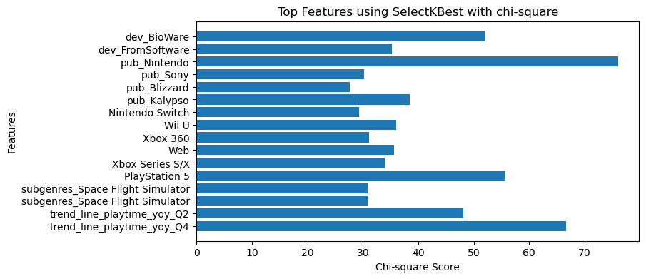
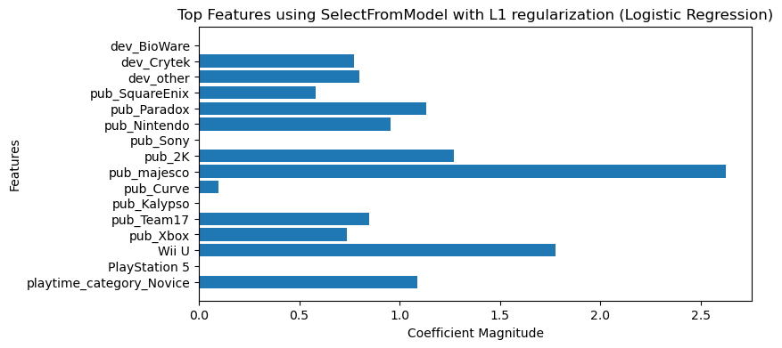
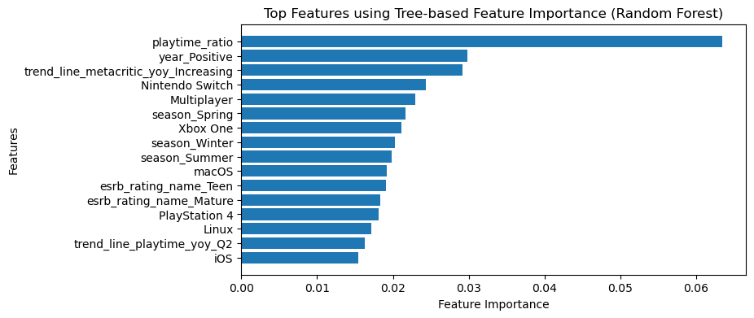
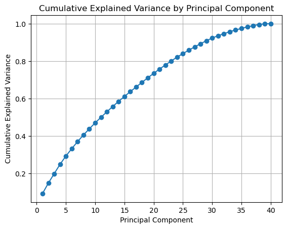

# Importing the pandas library for data manipulation and analysis
import pandas as pd
# Pandas is a powerful library for data manipulation and analysis, providing data structures and functions.
# Importing the NumPy library for numerical operations
import numpy as np
# NumPy is used for numerical computations, providing support for arrays and mathematical functions.
# Importing the matplotlib library for creating plots and charts
import matplotlib.pyplot as plt
# Matplotlib is a comprehensive library for creating various types of plots and charts.
# Importing machine learning models and utilities from the sklearn module
from sklearn.svm import SVC
# SVC is a popular classification algorithm for Support Vector Machines.
from sklearn.ensemble import RandomForestClassifier, GradientBoostingClassifier
# Ensemble learning methods based on decision trees, commonly used for classification tasks.
from sklearn.linear_model import LogisticRegression
# LogisticRegression is a popular algorithm for binary and multiclass classification problems.
# Importing utility functions for data splitting and model evaluation
from sklearn.model_selection import train_test_split, cross_val_score, GridSearchCV
# train_test_split is used for splitting the data into training and testing sets.
# cross_val_score is used for cross-validation during model evaluation.
# GridSearchCV is used for hyperparameter tuning to find the best model configuration.
# Library for decision tree models
from sklearn import tree
# Library for label encoding
from sklearn.preprocessing import LabelEncoder
# Importing evaluation metrics from the sklearn.metrics module
from sklearn.metrics import (
cohen_kappa_score,
roc_auc_score,
accuracy_score,
precision_score,
recall_score,
confusion_matrix,
)
# These metrics are used to evaluate the performance of classification models.
# Importing feature selection and preprocessing tools from sklearn
from sklearn.feature_selection import SelectKBest, chi2, SelectFromModel
# SelectKBest and chi2 are used for feature selection based on statistical tests.
# SelectFromModel is used for feature selection based on the importance from a supervised model.
from sklearn.decomposition import PCA
# PCA (Principal Component Analysis) is used for dimensionality reduction.
from sklearn.preprocessing import StandardScaler, LabelEncoder
# StandardScaler is used for scaling numerical features to have a mean of 0 and standard deviation of 1.
# LabelEncoder is used for converting categorical labels into numerical values.
import xgboost as xgb
# XGBoost is a popular gradient boosting library used for classification and regression tasks.Data Preprocessing and Analysis
This processes data from a CSV file containing information about video games from RAWG’s API. It categorizes the games based on their ratings into “Poor,” “Mixed,” “Good,” “Great,” “Excellent,” or “Masterpiece.” Additionally, it adds a “season” column to indicate the season when each game was released and a “playtime_category” column to group the games based on their playtime, such as “Novice,” “Casual,” “Experienced,” or “Veteran.” The code ensures missing values are removed to prepare the data for analysis.
# Read the CSV file into a DataFrame
games = pd.read_csv("Final_dev_pub.csv")
games.dropna(inplace=True)
print(games.shape)
print(games)(2241, 142)
id name released metacritic \
2 17788 Sherlock Holmes Versus Jack The Ripper 2009-05-26 73.0
3 17788 Sherlock Holmes Versus Jack The Ripper 2009-05-26 73.0
7 14422 Condemned: Criminal Origins 2005-11-15 80.0
8 5562 Fallout 3 2008-10-28 91.0
9 5562 Fallout 3 2008-10-28 91.0
... ... ... ... ...
4669 1090 This War Of Mine 2014-11-14 83.0
4670 923014 Metroid Prime Remastered 2023-02-08 94.0
4680 9840 We Happy Few 2018-08-09 64.0
4681 9840 We Happy Few 2018-08-09 64.0
4684 4623 Carnivores: Ice Age 2001-02-03 64.0
playtime developers publishers \
2 3 FrogwaresSpiders FrogwaresFocus Home Interactive
3 3 FrogwaresSpiders FrogwaresFocus Home Interactive
7 1 Monolith Productions Sega
8 4 Bethesda Game Studios Bethesda Softworks
9 4 Bethesda Game Studios Bethesda Softworks
... ... ... ...
4669 4 11 bit studios 11 bit studios
4670 0 Retro Studios Nintendo
4680 4 Compulsion Games Gearbox Publishing
4681 4 Compulsion Games Gearbox Publishing
4684 0 Action Forms WizardWorks, Infogrames
esrb_rating_name genres \
2 Mature Adventure
3 Mature Adventure
7 Adults Only Survival horror, action, first-person shooter[...
8 Mature Action role-playing
9 Mature Action role-playing
... ... ...
4669 Mature Survival
4670 Teen Action-adventure
4680 Mature Action-adventure, Stealth, Survival
4681 Mature Action-adventure, Stealth, Survival
4684 Teen Sport (hunting) First-person shooter
genre ... Jaguar Apple II Atari 8-bit Atari Lynx Atari 7800 \
2 Adventure ... 0 0 0 0 0
3 RPG ... 0 0 0 0 0
7 Action ... 0 0 0 0 0
8 RPG ... 0 0 0 0 0
9 Shooter ... 0 0 0 0 0
... ... ... ... ... ... ... ...
4669 Simulation ... 0 0 0 0 0
4670 Shooter ... 0 0 0 0 0
4680 Action ... 0 0 0 0 0
4681 Adventure ... 0 0 0 0 0
4684 Shooter ... 0 0 0 0 0
Atari 5200 3DO Single-player Multiplayer 2-player co-op
2 0 0 1 0 0
3 0 0 1 0 0
7 0 0 1 0 0
8 0 0 1 0 0
9 0 0 1 0 0
... ... ... ... ... ...
4669 0 0 1 0 0
4670 0 0 1 0 0
4680 0 0 1 0 0
4681 0 0 1 0 0
4684 0 0 1 0 0
[2241 rows x 142 columns]# Define rating ranges and corresponding labels
rating_ranges = [(0, 67, "Poor"),
(68, 72, "Mixed"),
(73, 76, "Good"),
(77, 80, "Great"),
(81, 84, "Excellent"),
(85, 100, "Masterpiece")]
# Create a new column for the categorical labels
games["metacritic_category"] = pd.cut(
games["metacritic"],
bins=[r[0] for r in rating_ranges] + [101],
labels=[r[2] for r in rating_ranges],
right=False
)
# Convert "released" column to datetime type
games["released"] = pd.to_datetime(games["released"])
def get_season(date):
if date.month in (3, 4, 5):
return "Spring"
elif date.month in (6, 7, 8):
return "Summer"
elif date.month in (9, 10, 11):
return "Fall"
elif date.month in (12, 1, 2):
return "Winter"
else:
return "Invalid date"
# Apply the get_season function to the "released" column and create the "season" column
games["season"] = games["released"].apply(get_season)
# Print the first 5 rows with the new "season" column
print(games.head(5))
print("Shape:", games.shape)
# Define the playtime ranges and corresponding categories
playtime_ranges = [(0, 10), (11, 50), (51, 100), (101, float('inf'))]
playtime_categories = ['Novice', 'Casual', 'Experienced', 'Veteran']
# Create a new column with categorical values based on playtime
games['playtime_category'] = pd.cut(
games['playtime'],
bins=[range[0] - 1 for range in playtime_ranges] + [playtime_ranges[-1][1]],
labels=playtime_categories
)
# Drop the missing values
games.dropna(inplace=True) id name released metacritic \
2 17788 Sherlock Holmes Versus Jack The Ripper 2009-05-26 73.0
3 17788 Sherlock Holmes Versus Jack The Ripper 2009-05-26 73.0
7 14422 Condemned: Criminal Origins 2005-11-15 80.0
8 5562 Fallout 3 2008-10-28 91.0
9 5562 Fallout 3 2008-10-28 91.0
playtime developers publishers \
2 3 FrogwaresSpiders FrogwaresFocus Home Interactive
3 3 FrogwaresSpiders FrogwaresFocus Home Interactive
7 1 Monolith Productions Sega
8 4 Bethesda Game Studios Bethesda Softworks
9 4 Bethesda Game Studios Bethesda Softworks
esrb_rating_name genres \
2 Mature Adventure
3 Mature Adventure
7 Adults Only Survival horror, action, first-person shooter[...
8 Mature Action role-playing
9 Mature Action role-playing
genre ... Atari 8-bit Atari Lynx Atari 7800 Atari 5200 3DO \
2 Adventure ... 0 0 0 0 0
3 RPG ... 0 0 0 0 0
7 Action ... 0 0 0 0 0
8 RPG ... 0 0 0 0 0
9 Shooter ... 0 0 0 0 0
Single-player Multiplayer 2-player co-op metacritic_category season
2 1 0 0 Good Spring
3 1 0 0 Good Spring
7 1 0 0 Great Fall
8 1 0 0 Masterpiece Fall
9 1 0 0 Masterpiece Fall
[5 rows x 144 columns]
Shape: (2241, 144)This refines and organizes the “genres” column in a dataset containing information about video games. It splits the genres into subgenres, capitalizes them, and creates new rows for each subgenre. The code then updates the DataFrame to include the subgenres’ information, and it lists all the columns in the final dataset. This process helps in better categorizing and understanding the various subgenres of video games present in the dataset.
# Clean up the genres column
games['genres'] = games['genres'].str.replace('\[.*?\]', '') # Remove anything within square brackets [...]
games['genres'] = games['genres'].str.replace('\(.*?\)', '') # Remove anything within parentheses (...)
games['genres'] = games['genres'].str.strip() # Remove leading/trailing whitespace
# Split the genres and create new rows
new_rows = []
for index, row in games.iterrows():
genres = row["genres"].split(",")
for genre in genres:
genre = genre.strip()
if "-" in genre:
genre_parts = genre.split("-")
genre_parts = [part.capitalize() for part in genre_parts]
genre = "-".join(genre_parts)
elif "\n" in genre:
genre_parts = genre.split("\n")
genre_parts = [part.capitalize() for part in genre_parts]
genre = " ".join(genre_parts)
else:
genre = genre.capitalize()
# Create a dictionary to store the information for each subgenre row
new_row = {"subgenres": genre}
# Copy the relevant information from the other columns of the original DataFrame
for col in games.columns:
if col != "genres" and col != "subgenres":
new_row[col] = row[col]
new_rows.append(new_row)
# Update the DataFrame from the new rows
games = pd.DataFrame(new_rows)
# Capitalize the "subgenres" column
games['subgenres'] = games['subgenres'].str.title()
# Display the updated dataset with subgenres information
print(games)
# List all the columns in the DataFrame 'games'
print(list(games.columns))/var/folders/zr/7j7_y49d73b9t3jmw0tcdp2c0000gn/T/ipykernel_25981/3258872068.py:2: FutureWarning: The default value of regex will change from True to False in a future version.
games['genres'] = games['genres'].str.replace('\[.*?\]', '') # Remove anything within square brackets [...]
/var/folders/zr/7j7_y49d73b9t3jmw0tcdp2c0000gn/T/ipykernel_25981/3258872068.py:3: FutureWarning: The default value of regex will change from True to False in a future version.
games['genres'] = games['genres'].str.replace('\(.*?\)', '') # Remove anything within parentheses (...) subgenres id \
0 Adventure 17788
1 Adventure 17788
2 Survival Horror 14422
3 Action 14422
4 First-Person Shooter 14422
... ... ...
3011 Survival 9840
3012 Action-Adventure 9840
3013 Stealth 9840
3014 Survival 9840
3015 Sport First-Person Shooter 4623
name released metacritic playtime \
0 Sherlock Holmes Versus Jack The Ripper 2009-05-26 73.0 3
1 Sherlock Holmes Versus Jack The Ripper 2009-05-26 73.0 3
2 Condemned: Criminal Origins 2005-11-15 80.0 1
3 Condemned: Criminal Origins 2005-11-15 80.0 1
4 Condemned: Criminal Origins 2005-11-15 80.0 1
... ... ... ... ...
3011 We Happy Few 2018-08-09 64.0 4
3012 We Happy Few 2018-08-09 64.0 4
3013 We Happy Few 2018-08-09 64.0 4
3014 We Happy Few 2018-08-09 64.0 4
3015 Carnivores: Ice Age 2001-02-03 64.0 0
developers publishers esrb_rating_name \
0 FrogwaresSpiders FrogwaresFocus Home Interactive Mature
1 FrogwaresSpiders FrogwaresFocus Home Interactive Mature
2 Monolith Productions Sega Adults Only
3 Monolith Productions Sega Adults Only
4 Monolith Productions Sega Adults Only
... ... ... ...
3011 Compulsion Games Gearbox Publishing Mature
3012 Compulsion Games Gearbox Publishing Mature
3013 Compulsion Games Gearbox Publishing Mature
3014 Compulsion Games Gearbox Publishing Mature
3015 Action Forms WizardWorks, Infogrames Teen
genre ... Atari Lynx Atari 7800 Atari 5200 3DO Single-player \
0 Adventure ... 0 0 0 0 1
1 RPG ... 0 0 0 0 1
2 Action ... 0 0 0 0 1
3 Action ... 0 0 0 0 1
4 Action ... 0 0 0 0 1
... ... ... ... ... ... ... ...
3011 Action ... 0 0 0 0 1
3012 Adventure ... 0 0 0 0 1
3013 Adventure ... 0 0 0 0 1
3014 Adventure ... 0 0 0 0 1
3015 Shooter ... 0 0 0 0 1
Multiplayer 2-player co-op metacritic_category season \
0 0 0 Good Spring
1 0 0 Good Spring
2 0 0 Great Fall
3 0 0 Great Fall
4 0 0 Great Fall
... ... ... ... ...
3011 0 0 Poor Summer
3012 0 0 Poor Summer
3013 0 0 Poor Summer
3014 0 0 Poor Summer
3015 0 0 Poor Winter
playtime_category
0 Novice
1 Novice
2 Novice
3 Novice
4 Novice
... ...
3011 Novice
3012 Novice
3013 Novice
3014 Novice
3015 Novice
[3016 rows x 145 columns]
['subgenres', 'id', 'name', 'released', 'metacritic', 'playtime', 'developers', 'publishers', 'esrb_rating_name', 'genre', 'description', 'background_image', 'dev_Atlus', 'dev_BioWare', 'dev_Blizzard', 'dev_Activision', 'dev_Ubisoft', 'dev_Rockstar', 'dev_1C', 'dev_DICE', 'dev_Capcom', 'dev_2K', 'dev_343Industries', 'dev_CreativeAssembly', 'dev_FromSoftware', 'dev_Vanguard', 'dev_Arkane', 'dev_BandaiNamco', 'dev_Bethesda', 'dev_Bungie', 'dev_Crytek', 'dev_EA', 'dev_Nintendo', 'dev_Ensemble', 'dev_EpicGames', 'dev_Frontier', 'dev_Feral', 'dev_InfinityWard', 'dev_Insomniac', 'dev_JapanStudios', 'dev_Klei', 'dev_Konami', 'dev_LucasArts', 'dev_NaughtyDog', 'dev_Namco', 'dev_TellTale', 'dev_other', 'n', 'pub_Eidos', 'pub_EA', 'pub_DeepSilver', 'pub_ElectronicArts', 'pub_Ubisoft', 'pub_Sega', 'pub_Activision', 'pub_SquareEnix', 'pub_Devolver', 'pub_Capcom', 'pub_Konami', 'pub_BandaiNamco', 'pub_Paradox', 'pub_Nintendo', 'pub_Sony', 'pub_koei', 'pub_rockstar', 'pub_THQ', 'pub_2K', 'pub_D3', 'pub_vivendi', 'pub_majesco', 'pub_microsoft', 'pub_505', 'pub_Atari', 'pub_Spike', 'pub_RisingStar', 'pub_Midway', 'pub_WarnerBros', 'pub_Atlus', 'pub_Codemasters', 'pub_Disney', 'pub_Blizzard', 'pub_Bethesda', 'pub_Curve', 'pub_1C', 'pub_daedalic', 'pub_FocusHome', 'pub_HumbleBumble', 'pub_Kalypso', 'pub_TellTale', 'pub_Team17', 'pub_Valve', 'pub_Xbox', 'pub_tinyBuild', 'NES', 'PC', 'macOS', 'Linux', 'Xbox One', 'PlayStation 4', 'Nintendo Switch', 'iOS', 'Android', 'PS Vita', 'Wii U', 'Xbox 360', 'PlayStation 3', 'Xbox', 'PlayStation 2', 'Web', 'Xbox Series S/X', 'Nintendo 3DS', 'PlayStation 5', 'GameCube', 'Game Boy Advance', 'Nintendo 64', 'Wii', 'Dreamcast', 'SNES', 'Commodore / Amiga', 'Atari ST', 'PlayStation', 'Genesis', 'SEGA Saturn', 'Game Boy', 'Game Gear', 'Nintendo DS', 'PSP', 'Classic Macintosh', 'Neo Geo', 'Game Boy Color', 'Atari 2600', 'SEGA Master System', 'Jaguar', 'Apple II', 'Atari 8-bit', 'Atari Lynx', 'Atari 7800', 'Atari 5200', '3DO', 'Single-player', 'Multiplayer', '2-player co-op', 'metacritic_category', 'season', 'playtime_category']Feature Engineering
This enhances the video game dataset with several new features. It adds a “Multiplatform” column to identify games available on multiple platforms, a “year” column to show the release year of each game, a “metacritic trend line” column to indicate the score trend over the years, a “playtime trend line” column to represent the playtime trend over the years, “playtime quartiles” to categorize games based on their playtime distribution, and “playtime ratios” to calculate the playtime of each game as a ratio of the maximum playtime in the dataset. The code also filters the dataset to include games released in 2013 or later. These new features provide valuable insights into the video game data and can assist in further analysis and decision-making.
# ADD FEATURE: Multi-Platform, etc.
# List of platform columns to check for multiple true values
platform_columns = ["PC", "macOS", "Linux", "Xbox One", "PlayStation 4", "Nintendo Switch",
"Wii U", "Xbox 360", "PlayStation 3", "Xbox", "PlayStation 2",
"Xbox Series S/X", "Nintendo 3DS", "PlayStation 5", "GameCube"]
# Create a new column "Multiplatform" where the value is 1 if there are more than one true values in the platform columns
games["Multiplatform"] = games[platform_columns].apply(lambda row: sum(row), axis=1).apply(lambda x: 1 if x > 1 else 0)
# Print the updated 'games' to see the new "Multiplatform" column
print(games)
# ADD FEATURE: year
# Step 1: Convert the 'released' column to datetime type
games['released'] = pd.to_datetime(games['released'])
# Step 2: Extract the year and create a new column 'year'
games['year'] = games['released'].dt.year
# ADD FEATURE: metacritic trend line
# Step 1: Group the data by year and category, calculate the average score
grouped = games.groupby(['year', 'metacritic_category']).agg(avg_score=('metacritic', 'mean')).reset_index()
# Step 2: Calculate the year-over-year difference in scores
grouped['yoy_diff'] = grouped.groupby('metacritic_category')['avg_score'].diff()
# Step 3: Create the trend line column
grouped['trend_line_metacritic_yoy'] = ''
# Step 4: Assign the trend line values based on the year-over-year difference
grouped.loc[grouped['yoy_diff'] > 0, 'trend_line_metacritic_yoy'] = 'Positive'
grouped.loc[grouped['yoy_diff'] < 0, 'trend_line_metacritic_yoy'] = 'Negative'
grouped.loc[grouped['yoy_diff'] == 0, 'trend_line_metacritic_yoy'] = 'Stable'
# Merge the trend line column back
games = pd.merge(games, grouped[['year', 'metacritic_category', 'trend_line_metacritic_yoy']], on=['year', 'metacritic_category'], how='left')
# ADD FEATURE: playtime trend line
# Step 1: Group the data by year and calculate the average playtime
grouped = games.groupby('year')['playtime'].mean().reset_index()
# Step 2: Calculate the year-over-year difference in playtime
grouped['yoy_diff'] = grouped['playtime'].diff()
# Step 3: Create the trend line column
grouped['trend_line_playtime_yoy'] = ''
# Step 4: Assign the trend line values based on the year-over-year difference
grouped.loc[grouped['yoy_diff'] > 0, 'trend_line_playtime_yoy'] = 'Increasing'
grouped.loc[grouped['yoy_diff'] < 0, 'trend_line_playtime_yoy'] = 'Decreasing'
grouped.loc[grouped['yoy_diff'] == 0, 'trend_line_playtime_yoy'] = 'Stable'
# Merge the trend line column
games = pd.merge(games, grouped[['year', 'trend_line_playtime_yoy']], on='year', how='left')
# ADD FEATURES: playtime quartiles
# Step 1: Calculate the quartiles for playtime
quartiles = np.linspace(0, 1, num=5) # Split into quartiles (0%, 25%, 50%, 75%, 100%)
# Step 2: Create the playtime quartile labels
quartile_labels = ['Q1', 'Q2', 'Q3', 'Q4']
# Step 3: Assign quartile labels to playtime quartiles
games['playtime_quartile'] = pd.qcut(games['playtime'], quartiles, labels=quartile_labels, duplicates='drop')
# Fill missing values with a default label if any
games['playtime_quartile'] = games['playtime_quartile'].cat.add_categories('N/A').fillna('N/A')
# ADD FEATURES: playtime ratios
# Step 1: Calculate the maximum playtime in the dataset
max_playtime = games['playtime'].max()
# Step 2: Create the playtime ratio feature
games['playtime_ratio'] = games['playtime'] / max_playtime
# Filter video game year from 2013 forward
games = games[games['year'] >= 2013] subgenres id \
0 Adventure 17788
1 Adventure 17788
2 Survival Horror 14422
3 Action 14422
4 First-Person Shooter 14422
... ... ...
3011 Survival 9840
3012 Action-Adventure 9840
3013 Stealth 9840
3014 Survival 9840
3015 Sport First-Person Shooter 4623
name released metacritic playtime \
0 Sherlock Holmes Versus Jack The Ripper 2009-05-26 73.0 3
1 Sherlock Holmes Versus Jack The Ripper 2009-05-26 73.0 3
2 Condemned: Criminal Origins 2005-11-15 80.0 1
3 Condemned: Criminal Origins 2005-11-15 80.0 1
4 Condemned: Criminal Origins 2005-11-15 80.0 1
... ... ... ... ...
3011 We Happy Few 2018-08-09 64.0 4
3012 We Happy Few 2018-08-09 64.0 4
3013 We Happy Few 2018-08-09 64.0 4
3014 We Happy Few 2018-08-09 64.0 4
3015 Carnivores: Ice Age 2001-02-03 64.0 0
developers publishers esrb_rating_name \
0 FrogwaresSpiders FrogwaresFocus Home Interactive Mature
1 FrogwaresSpiders FrogwaresFocus Home Interactive Mature
2 Monolith Productions Sega Adults Only
3 Monolith Productions Sega Adults Only
4 Monolith Productions Sega Adults Only
... ... ... ...
3011 Compulsion Games Gearbox Publishing Mature
3012 Compulsion Games Gearbox Publishing Mature
3013 Compulsion Games Gearbox Publishing Mature
3014 Compulsion Games Gearbox Publishing Mature
3015 Action Forms WizardWorks, Infogrames Teen
genre ... Atari 7800 Atari 5200 3DO Single-player Multiplayer \
0 Adventure ... 0 0 0 1 0
1 RPG ... 0 0 0 1 0
2 Action ... 0 0 0 1 0
3 Action ... 0 0 0 1 0
4 Action ... 0 0 0 1 0
... ... ... ... ... ... ... ...
3011 Action ... 0 0 0 1 0
3012 Adventure ... 0 0 0 1 0
3013 Adventure ... 0 0 0 1 0
3014 Adventure ... 0 0 0 1 0
3015 Shooter ... 0 0 0 1 0
2-player co-op metacritic_category season playtime_category \
0 0 Good Spring Novice
1 0 Good Spring Novice
2 0 Great Fall Novice
3 0 Great Fall Novice
4 0 Great Fall Novice
... ... ... ... ...
3011 0 Poor Summer Novice
3012 0 Poor Summer Novice
3013 0 Poor Summer Novice
3014 0 Poor Summer Novice
3015 0 Poor Winter Novice
Multiplatform
0 0
1 0
2 1
3 1
4 1
... ...
3011 1
3012 1
3013 1
3014 1
3015 0
[3016 rows x 146 columns]This removes specific columns from a dataset containing information about video games. The columns that are removed include ‘id’, ‘background_image’, ‘metacritic’, ‘name’, ‘playtime’, ‘description’, ‘released’, ‘developers’, ‘publishers’, and ‘n’. After removing these columns, the code prints the new shape of the dataset and lists the remaining columns. This process helps to focus on the most relevant information and simplifies the dataset for further analysis or modeling.
# For be citation
citationDs = games[['id', 'name']].copy()
# Remove the specified columns
columns_to_remove = ['id', 'background_image', 'metacritic', 'name', 'playtime', 'description', 'released', 'developers', 'publishers','n']
games.drop(columns_to_remove, axis=1, inplace=True)
# Print the new shape of the DataFrame after removing columns
print("Shape of games DataFrame:", games.shape)
# Create a new DataFrame 'modelDs' to store the modified data
modelDs = games
# Print the list of columns
print("Columns in modelDs DataFrame:", list(modelDs.columns))Shape of games DataFrame: (1919, 141)
Columns in modelDs DataFrame: ['subgenres', 'esrb_rating_name', 'genre', 'dev_Atlus', 'dev_BioWare', 'dev_Blizzard', 'dev_Activision', 'dev_Ubisoft', 'dev_Rockstar', 'dev_1C', 'dev_DICE', 'dev_Capcom', 'dev_2K', 'dev_343Industries', 'dev_CreativeAssembly', 'dev_FromSoftware', 'dev_Vanguard', 'dev_Arkane', 'dev_BandaiNamco', 'dev_Bethesda', 'dev_Bungie', 'dev_Crytek', 'dev_EA', 'dev_Nintendo', 'dev_Ensemble', 'dev_EpicGames', 'dev_Frontier', 'dev_Feral', 'dev_InfinityWard', 'dev_Insomniac', 'dev_JapanStudios', 'dev_Klei', 'dev_Konami', 'dev_LucasArts', 'dev_NaughtyDog', 'dev_Namco', 'dev_TellTale', 'dev_other', 'pub_Eidos', 'pub_EA', 'pub_DeepSilver', 'pub_ElectronicArts', 'pub_Ubisoft', 'pub_Sega', 'pub_Activision', 'pub_SquareEnix', 'pub_Devolver', 'pub_Capcom', 'pub_Konami', 'pub_BandaiNamco', 'pub_Paradox', 'pub_Nintendo', 'pub_Sony', 'pub_koei', 'pub_rockstar', 'pub_THQ', 'pub_2K', 'pub_D3', 'pub_vivendi', 'pub_majesco', 'pub_microsoft', 'pub_505', 'pub_Atari', 'pub_Spike', 'pub_RisingStar', 'pub_Midway', 'pub_WarnerBros', 'pub_Atlus', 'pub_Codemasters', 'pub_Disney', 'pub_Blizzard', 'pub_Bethesda', 'pub_Curve', 'pub_1C', 'pub_daedalic', 'pub_FocusHome', 'pub_HumbleBumble', 'pub_Kalypso', 'pub_TellTale', 'pub_Team17', 'pub_Valve', 'pub_Xbox', 'pub_tinyBuild', 'NES', 'PC', 'macOS', 'Linux', 'Xbox One', 'PlayStation 4', 'Nintendo Switch', 'iOS', 'Android', 'PS Vita', 'Wii U', 'Xbox 360', 'PlayStation 3', 'Xbox', 'PlayStation 2', 'Web', 'Xbox Series S/X', 'Nintendo 3DS', 'PlayStation 5', 'GameCube', 'Game Boy Advance', 'Nintendo 64', 'Wii', 'Dreamcast', 'SNES', 'Commodore / Amiga', 'Atari ST', 'PlayStation', 'Genesis', 'SEGA Saturn', 'Game Boy', 'Game Gear', 'Nintendo DS', 'PSP', 'Classic Macintosh', 'Neo Geo', 'Game Boy Color', 'Atari 2600', 'SEGA Master System', 'Jaguar', 'Apple II', 'Atari 8-bit', 'Atari Lynx', 'Atari 7800', 'Atari 5200', '3DO', 'Single-player', 'Multiplayer', '2-player co-op', 'metacritic_category', 'season', 'playtime_category', 'Multiplatform', 'year', 'trend_line_metacritic_yoy', 'trend_line_playtime_yoy', 'playtime_quartile', 'playtime_ratio']Convert Categorical Columns to Dummy Variables
This converts categorical columns in the “modelDs” DataFrame into dummy variables to represent them as binary indicators. The categorical columns that are converted include ‘esrb_rating_name’, ‘genre’, ‘season’, ‘subgenres’, ‘playtime_category’, ‘subgenres’, ‘year’, ‘trend_line_metacritic_yoy’, ‘trend_line_playtime_yoy’, and ‘playtime_quartile’. After creating the dummy variables, the original categorical columns are removed from the DataFrame to prepare the data for machine learning tasks, where numerical data is generally required. This process helps in encoding categorical information into a format that machine learning algorithms can work with.
# List of categorical columns to convert to dummy variables
columns_to_dummy = ['esrb_rating_name', 'genre', 'season', 'subgenres', 'playtime_category', 'subgenres', 'year', 'trend_line_metacritic_yoy', 'trend_line_playtime_yoy', 'playtime_quartile']
# Display the current shape
print("Shape of modelDs DataFrame:", modelDs.shape)
# Display the number of columns
print("Number of columns in modelDs DataFrame:", modelDs.shape[1])
# Display the expected number of columns after converting categorical columns to dummy variables
print("Expected number of columns:", len(columns_to_dummy))
# Display the list of columns that will be converted to dummy variables
print("Columns to dummy:", columns_to_dummy)
# Remove the last element from the 'columns_to_dummy' list to create prefixes for dummy variable column names
prefix = columns_to_dummy[:-1]
# Convert categorical columns to dummy variables, adding prefixes to the column names
dummy_cols = pd.get_dummies(modelDs[columns_to_dummy], prefix=prefix, drop_first=True)
# Concatenate the dummy variable columns
modelDs = pd.concat([modelDs, dummy_cols], axis=1)
# Drop the original categorical columns
modelDs.drop(columns_to_dummy, axis=1, inplace=True)
# 'modelDs' DataFrame now contains the data with dummy variables instead of categorical columns
modelDsShape of modelDs DataFrame: (1919, 141)
Number of columns in modelDs DataFrame: 141
Expected number of columns: 10
Columns to dummy: ['esrb_rating_name', 'genre', 'season', 'subgenres', 'playtime_category', 'subgenres', 'year', 'trend_line_metacritic_yoy', 'trend_line_playtime_yoy', 'playtime_quartile']| dev_Atlus | dev_BioWare | dev_Blizzard | dev_Activision | dev_Ubisoft | dev_Rockstar | dev_1C | dev_DICE | dev_Capcom | dev_2K | ... | subgenres_Vehicular Combat | subgenres_Visual Novel | subgenres_Wrestling | year_Positive | year_Stable | trend_line_metacritic_yoy_Increasing | trend_line_playtime_yoy_Q2 | trend_line_playtime_yoy_Q3 | trend_line_playtime_yoy_Q4 | trend_line_playtime_yoy_N/A | |
|---|---|---|---|---|---|---|---|---|---|---|---|---|---|---|---|---|---|---|---|---|---|
| 7 | False | False | False | False | False | False | False | False | False | False | ... | 0 | 0 | 0 | 1 | 0 | 0 | 1 | 0 | 0 | 0 |
| 8 | False | False | False | False | False | False | False | False | False | False | ... | 0 | 0 | 0 | 1 | 0 | 0 | 1 | 0 | 0 | 0 |
| 9 | False | False | False | False | False | False | False | False | False | False | ... | 0 | 0 | 0 | 1 | 0 | 0 | 1 | 0 | 0 | 0 |
| 10 | False | False | False | False | False | False | False | False | False | False | ... | 0 | 0 | 0 | 0 | 0 | 1 | 1 | 0 | 0 | 0 |
| 11 | False | False | False | False | False | False | False | False | False | False | ... | 0 | 0 | 0 | 1 | 0 | 1 | 0 | 0 | 1 | 0 |
| ... | ... | ... | ... | ... | ... | ... | ... | ... | ... | ... | ... | ... | ... | ... | ... | ... | ... | ... | ... | ... | ... |
| 3010 | False | False | False | False | False | False | False | False | False | False | ... | 0 | 0 | 0 | 1 | 0 | 0 | 1 | 0 | 0 | 0 |
| 3011 | False | False | False | False | False | False | False | False | False | False | ... | 0 | 0 | 0 | 1 | 0 | 0 | 1 | 0 | 0 | 0 |
| 3012 | False | False | False | False | False | False | False | False | False | False | ... | 0 | 0 | 0 | 1 | 0 | 0 | 1 | 0 | 0 | 0 |
| 3013 | False | False | False | False | False | False | False | False | False | False | ... | 0 | 0 | 0 | 1 | 0 | 0 | 1 | 0 | 0 | 0 |
| 3014 | False | False | False | False | False | False | False | False | False | False | ... | 0 | 0 | 0 | 1 | 0 | 0 | 1 | 0 | 0 | 0 |
1919 rows × 459 columns
Calculate Relative Frequencies of Game Ratings
This calculates the relative frequencies (weights) for each category in the “metacritic_category” column of the video game dataset. These weights represent the proportion of games falling into each rating category (e.g., “Poor,” “Good,” “Excellent”) relative to the total number of games in the dataset. Printing the weights allows for understanding the distribution of game ratings and their respective frequencies in the dataset.
# Calculate the relative frequencies (weights) for each category
weights = games['metacritic_category'].value_counts(normalize=True)
# Print the weights
print(weights)Masterpiece 0.183429
Great 0.176133
Good 0.169359
Poor 0.167275
Excellent 0.164148
Mixed 0.139656
Name: metacritic_category, dtype: float64Train Test Split
This prepares the data for machine learning by splitting it into features (X) and the target variable (y). The target variable represents game ratings (e.g., ‘Masterpiece’, ‘Great’, ‘Good’, ‘Poor’, ‘Excellent’, ‘Mixed’), each with an associated weight. The data is further split into training and testing sets while ensuring the same distribution of game ratings in both sets using the ‘stratify’ parameter. The weights for each category are calculated and printed for the training and testing sets, facilitating the model’s training with weighted samples and evaluation on a representative test set.
# Split the data into features (X) and target (y)
X = modelDs.drop('metacritic_category', axis=1) # Features (input variables)
y = modelDs['metacritic_category'] # Target variable
# Given weights
weights = {'Masterpiece': 0.183429, 'Great': 0.176133, 'Good': 0.169359, 'Poor': 0.167275, 'Excellent': 0.164148, 'Mixed': 0.139656}
# Use the 'stratify' parameter to preserve the target variable distribution in the train-test split
X_train, X_test, y_train, y_test = train_test_split(X, y, test_size=0.2, random_state=154, stratify=y)
# Now, you can access the weights for each category as follows:
# Note that `y_train` and `y_test` now have the same distribution of categories as `y`
y_train_weights = y_train.map(weights)
y_test_weights = y_test.map(weights)
# Print the weights for the first few rows in the training set
print("Training set weights:")
print(y_train_weights.head())
# Print the weights for the first few rows in the testing set
print("Testing set weights:")
print(y_test_weights.head())Training set weights:
2381 0.176133
2033 0.169359
2840 0.176133
2731 0.164148
2616 0.167275
Name: metacritic_category, dtype: float64
Testing set weights:
1543 0.176133
25 0.169359
1207 0.169359
2018 0.183429
1652 0.167275
Name: metacritic_category, dtype: float64First Random Forest Model
Random Forest Model With Hyperparameter Tuning + Metrics
This creates and trains a machine learning model called the RandomForestClassifier with optimized hyperparameters. The model is trained using the training data, and predictions are made on the test data to evaluate its performance. Metrics such as ROC AUC score, Kappa coefficient, accuracy, precision, recall, and confusion matrix are calculated to assess how well the model predicts the game ratings. These metrics provide insights into the model’s overall performance and its ability to correctly classify games into different rating categories.
# Create the RandomForestClassifier instance with the best hyperparameters
rf_classifier_best = RandomForestClassifier(
n_estimators=200,
max_depth=None,
min_samples_split=2,
min_samples_leaf=1,
criterion='gini',
min_impurity_decrease=0.0,
random_state=65
)
# Fit the classifier to the training data with the given weights
rf_classifier_best.fit(X_train, y_train, sample_weight=y_train_weights)
# Use the trained classifier for predictions on test data
y_pred = rf_classifier_best.predict(X_test)
y_pred_prob = rf_classifier_best.predict_proba(X_test)First Model Metrics
This evaluates the first machine learning model’s performance, called the RandomForestClassifier, which was trained to predict game ratings using important features from the video game dataset. The model’s performance is assessed using various evaluation metrics. The metrics include ROC AUC score, which measures the model’s ability to distinguish between different game ratings, the Kappa coefficient, which indicates the model’s agreement with the actual ratings, accuracy, which represents the overall correctness of predictions, precision, which shows the model’s ability to predict each rating category accurately, and recall, which measures the model’s ability to capture all instances of each rating category. Finally, the code prints the confusion matrix, a table that summarizes the model’s predictions against the actual game ratings. These evaluations help understand how well the second model performs in predicting game ratings and provide valuable insights into its effectiveness in classifying games into their respective categories.
# Calculate ROC AUC score for binary classification
roc_auc = roc_auc_score(y_test, y_pred_prob, multi_class='ovr')
print(f"ROC AUC: {roc_auc}")
# Calculate Kappa coefficient
kappa = cohen_kappa_score(y_test, y_pred)
print(f"Kappa: {kappa}")
# Calculate accuracy
accuracy = accuracy_score(y_test, y_pred)
print(f"Accuracy: {accuracy}")
# Calculate precision
precision = precision_score(y_test, y_pred, average='weighted')
print(f"Precision: {precision}")
# Calculate recall
recall = recall_score(y_test, y_pred, average='weighted')
print(f"Recall: {recall}")
# Calculate confusion matrix
confusion = confusion_matrix(y_test, y_pred)
print("Confusion Matrix:")
print(confusion)ROC AUC: 0.9619776438541144
Kappa: 0.7871553052224876
Accuracy: 0.8229166666666666
Precision: 0.8234527429872074
Recall: 0.8229166666666666
Confusion Matrix:
[[48 2 2 5 3 3]
[ 2 57 4 1 0 1]
[ 1 1 57 4 0 5]
[ 2 3 7 56 2 0]
[ 4 1 0 1 44 4]
[ 2 2 2 2 2 54]]Feature Selection Methods
This demonstrates three different methods to select the most important features from the video game dataset for machine learning models. Method 1 uses the SelectKBest algorithm with chi-square to select the top 25 features. Method 2 uses the SelectFromModel algorithm with L1 regularization (Logistic Regression) to identify another set of top 25 features. Method 3 utilizes the Tree-based Feature Importance approach with Random Forest to determine the third set of top 25 features. The code prints these selected features for each method and then merges them to create a new dataset containing only the most relevant features for training the machine learning model. This feature selection process helps improve the model’s performance and reduces computation time by focusing on the most informative features.
# Limits the top number of features
num_features_to_select = 16
# Method 1: SelectKBest with chi-square
selector_chi2 = SelectKBest(score_func=chi2, k=num_features_to_select)
X_train_chi2_selected = selector_chi2.fit_transform(X_train, y_train)
selected_feature_indices_chi2 = selector_chi2.get_support(indices=True)
selected_features_chi2 = X_train.columns[selected_feature_indices_chi2].tolist()
plt.figure(figsize=(8, 4))
plt.barh(range(num_features_to_select), selector_chi2.scores_[selected_feature_indices_chi2][::-1], tick_label=selected_features_chi2[::-1])
plt.xlabel('Chi-square Score')
plt.ylabel('Features')
plt.title('Top Features using SelectKBest with chi-square')
plt.show()
# Method 2: SelectFromModel with L1 regularization (Logistic Regression)
logistic_regression = LogisticRegression(penalty='l1', solver='liblinear', random_state=65)
selector_l1 = SelectFromModel(logistic_regression, max_features=num_features_to_select)
X_train_l1_selected = selector_l1.fit_transform(X_train, y_train)
selected_feature_indices_l1 = selector_l1.get_support(indices=True)
selected_features_l1 = X_train.columns[selected_feature_indices_l1].tolist()
# Get coefficients from the best estimator with L1 regularization
coefficients = abs(selector_l1.estimator_.coef_[0])
plt.figure(figsize=(8, 4))
plt.barh(range(num_features_to_select), coefficients[selected_feature_indices_l1][::-1], tick_label=selected_features_l1[::-1])
plt.xlabel('Coefficient Magnitude')
plt.ylabel('Features')
plt.title('Top Features using SelectFromModel with L1 regularization (Logistic Regression)')
plt.show()
# Method 3: Tree-based Feature Importance (Random Forest)
rf_classifier = RandomForestClassifier(random_state=65)
rf_classifier.fit(X_train, y_train)
feature_importances = rf_classifier.feature_importances_
top_features_indices_rf = feature_importances.argsort()[-num_features_to_select:][::-1]
top_features_rf = X_train.columns[top_features_indices_rf].tolist()
plt.figure(figsize=(8, 4))
plt.barh(range(num_features_to_select), feature_importances[top_features_indices_rf][::-1], tick_label=top_features_rf[::-1])
plt.xlabel('Feature Importance')
plt.ylabel('Features')
plt.title('Top Features using Tree-based Feature Importance (Random Forest)')
plt.show()
# Print the top 25 features for each method
print("Top 25 Features using SelectKBest with chi-square:")
print(selected_features_chi2)
print("\nTop 25 Features using SelectFromModel with L1 regularization (Logistic Regression):")
print(selected_features_l1)
print("\nTop 25 Features using Tree-based Feature Importance (Random Forest):")
print(top_features_rf)
# Combine selected features from all three methods without duplicates
all_selected_features = list(set(selected_features_chi2 + selected_features_l1 + top_features_rf))
# Create a new dataset with the selected features
X_train_selected = X_train[all_selected_features]
X_test_selected = X_test[all_selected_features]
print(len(X_train_selected.columns)) # Merged features, it should be 40 columns
print(len(X_test_selected.columns)) # Merged features, it should be 40 columns


Top 25 Features using SelectKBest with chi-square:
['dev_BioWare', 'dev_FromSoftware', 'pub_Nintendo', 'pub_Sony', 'pub_Blizzard', 'pub_Kalypso', 'Nintendo Switch', 'Wii U', 'Xbox 360', 'Web', 'Xbox Series S/X', 'PlayStation 5', 'subgenres_Space Flight Simulator', 'subgenres_Space Flight Simulator', 'trend_line_playtime_yoy_Q2', 'trend_line_playtime_yoy_Q4']
Top 25 Features using SelectFromModel with L1 regularization (Logistic Regression):
['dev_BioWare', 'dev_Crytek', 'dev_other', 'pub_SquareEnix', 'pub_Paradox', 'pub_Nintendo', 'pub_Sony', 'pub_2K', 'pub_majesco', 'pub_Curve', 'pub_Kalypso', 'pub_Team17', 'pub_Xbox', 'Wii U', 'PlayStation 5', 'playtime_category_Novice']
Top 25 Features using Tree-based Feature Importance (Random Forest):
['playtime_ratio', 'year_Positive', 'trend_line_metacritic_yoy_Increasing', 'Nintendo Switch', 'Multiplayer', 'season_Spring', 'Xbox One', 'season_Winter', 'season_Summer', 'macOS', 'esrb_rating_name_Teen', 'esrb_rating_name_Mature', 'PlayStation 4', 'Linux', 'trend_line_playtime_yoy_Q2', 'iOS']
40
40Principal Component Analysis (PCA) for Dimensionality Reduction and Feature Importance
This performs Principal Component Analysis (PCA) on a given dataset to reduce the dimensionality of the features and identify the most important features contributing to each principal component. PCA is a common technique used for feature extraction and visualization in machine learning and data analysis.
Here’s a step-by-step explanation of the code:
A list named PCA_features is defined, which contains the names of the features that will be used for PCA. These features will be extracted from the original dataset.
A DataFrame named PCA_columns is created by selecting the columns corresponding to the features specified in PCA_features from a DataFrame called modelDs. This PCA_columns DataFrame is used as the input data for the PCA process.
The perform_pca function is then defined to carry out the PCA process:
The function takes two arguments - data (the DataFrame containing the features) and target_variable (the column name of the target variable).
The function first separates the target variable from the features and performs standardization on the feature data using StandardScaler. Standardization ensures that all features have a mean of 0 and a standard deviation of 1.
PCA is then applied to the standardized feature data using the PCA class from scikit-learn. The function computes the principal components and extracts information such as explained variance ratio and cumulative explained variance.
The cumulative explained variance is plotted against the number of principal components to visualize how much variance is explained by adding additional components. The feature importance within each principal component is computed, and only the features with an absolute importance greater than 0.25 are printed for the top 25 principal components. This allows us to understand which original features contribute the most to each principal component.
The transformed data, target variable, and PCA results are returned from the function as separate DataFrames (transformed_data, target_variable, and pca_results, respectively).
# PCA_features and PCA_columns are already defined here
PCA_features = ['playtime_ratio', 'Xbox 360', 'trend_line_playtime_yoy_Q2', 'year_Positive', 'pub_2K', 'pub_SquareEnix', 'pub_Curve', 'dev_FromSoftware', 'Web', 'dev_other', 'Nintendo Switch', 'season_Spring', 'Multiplayer', 'pub_Team17', 'esrb_rating_name_Teen', 'pub_Nintendo', 'playtime_category_Novice', 'dev_Crytek', 'trend_line_metacritic_yoy_Increasing', 'pub_Blizzard', 'season_Summer', 'PlayStation 4', 'iOS', 'esrb_rating_name_Mature', 'pub_Paradox', 'pub_Kalypso', 'macOS', 'pub_Sony', 'Linux', 'season_Winter', 'pub_Xbox', 'trend_line_playtime_yoy_Q4', 'dev_BioWare', 'pub_majesco', 'Xbox One', 'subgenres_Space Flight Simulator', 'Wii U', 'Xbox Series S/X', 'PlayStation 5', 'metacritic_category']
PCA_columns = modelDs[PCA_features]
def perform_pca(data, target_variable):
# Separate the target variable from the features
X = data.drop(target_variable, axis=1)
y = data[target_variable]
# Standardize the features
scaler = StandardScaler()
X_scaled = scaler.fit_transform(X)
# Perform PCA
pca = PCA()
principal_components = pca.fit_transform(X_scaled)
# Explained variance ratio
explained_variance_ratio = pca.explained_variance_ratio_
# Cumulative explained variance
cum_explained_variance = np.cumsum(explained_variance_ratio)
# Feature importance within each component
feature_importance = pca.components_
# Create a DataFrame to store the results
pca_results = pd.DataFrame({
'Principal Component': range(1, len(explained_variance_ratio) + 1),
'Explained Variance Ratio': explained_variance_ratio,
'Cumulative Explained Variance': cum_explained_variance
})
# Plot cumulative explained variance
plt.plot(range(1, len(explained_variance_ratio) + 1), cum_explained_variance, marker='o')
plt.xlabel('Principal Component')
plt.ylabel('Cumulative Explained Variance')
plt.title('Cumulative Explained Variance by Principal Component')
plt.grid(True)
plt.show()
# Print feature importance within each component for the top 25 components and importance > 0.25
num_components = min(25, len(feature_importance))
importance_threshold = 0.25
for i in range(num_components):
component_importance = feature_importance[i]
relevant_features = [feat for j, feat in enumerate(X.columns) if abs(component_importance[j]) > importance_threshold]
if len(relevant_features) > 0:
print(f"\nPrincipal Component {i+1} - Feature Importance:")
for feat in relevant_features:
print(f"{feat}: {component_importance[X.columns.get_loc(feat)]}")
# Rejoin the first num_components of PCA transformed data with the target variable
modelDs = pd.concat([pd.DataFrame(principal_components[:, :num_components]), y], axis=1)
# Return the PCA results, transformed data, and the target variable
return pca_results, pd.DataFrame(principal_components[:, :num_components], columns=[f'PC{i}' for i in range(1, num_components + 1)]), y
# Example usage
# data = pd.read_csv('your_dataset.csv') # Replace with your dataset
# Call the PCA function
pca_results, transformed_data, target_variable = perform_pca(PCA_columns, 'metacritic_category')
# Print the PCA results
print("\nPCA Results:")
print(pca_results)
# Print the transformed data
print("\nTransformed Data:")
print(transformed_data)
# Print the target variable
print("\nTarget Variable:")
print(target_variable)
# Verify dimensions
if transformed_data.shape[0] == target_variable.shape[0]:
# Reset the index of both DataFrames
transformed_data.reset_index(drop=True, inplace=True)
target_variable.reset_index(drop=True, inplace=True)
Principal Component 1 - Feature Importance:
playtime_ratio: 0.25682277984666396
playtime_category_Novice: -0.3139818287050168
esrb_rating_name_Mature: 0.292401518758059
macOS: -0.33026105957632274
Linux: -0.30009355511024466
trend_line_playtime_yoy_Q4: 0.3208340285296082
Principal Component 2 - Feature Importance:
Xbox 360: -0.26492778182586235
trend_line_metacritic_yoy_Increasing: 0.3027890157671161
PlayStation 4: 0.31753951928363877
Xbox One: 0.2846639123258563
subgenres_Space Flight Simulator: [0.25459386 0.25459386]
subgenres_Space Flight Simulator: [0.25459386 0.25459386]
Xbox Series S/X: 0.3482739250537587
PlayStation 5: 0.33027860916786533
Principal Component 3 - Feature Importance:
subgenres_Space Flight Simulator: [0.56683416 0.56683416]
subgenres_Space Flight Simulator: [0.56683416 0.56683416]
Principal Component 4 - Feature Importance:
playtime_ratio: -0.3802083547107305
playtime_category_Novice: 0.35090582685718436
macOS: -0.3235472494154091
Linux: -0.3611101354891265
trend_line_playtime_yoy_Q4: -0.34038810041655093
subgenres_Space Flight Simulator: [0.29309472 0.29309472]
subgenres_Space Flight Simulator: [0.29309472 0.29309472]
Principal Component 5 - Feature Importance:
esrb_rating_name_Teen: 0.42523649353314064
PlayStation 4: -0.3652308945274627
esrb_rating_name_Mature: -0.33260721236297597
Xbox One: -0.38775835869831654
Principal Component 6 - Feature Importance:
Xbox 360: 0.2613440490895525
season_Spring: 0.40708967114654754
Multiplayer: 0.3302144901528501
season_Summer: -0.27579739664631714
pub_Sony: -0.3269942072592522
Xbox One: 0.31259629495758073
Principal Component 7 - Feature Importance:
year_Positive: -0.338771954379501
Nintendo Switch: 0.2858444690928671
pub_Nintendo: 0.41521998096670604
season_Summer: 0.25341788297963136
pub_Sony: -0.30633231730123295
season_Winter: -0.250129141929892
Wii U: 0.3539384416674871
Principal Component 8 - Feature Importance:
pub_SquareEnix: -0.2853152422388732
dev_other: -0.2799934686569894
season_Spring: -0.27435692686125496
Multiplayer: 0.26434708582587874
dev_Crytek: 0.2783784284964455
season_Winter: 0.44816010344620516
Principal Component 9 - Feature Importance:
Xbox 360: 0.4195347900635573
pub_SquareEnix: 0.3537289292011675
season_Spring: -0.41083059249611187
season_Winter: 0.2632275786526591
Principal Component 10 - Feature Importance:
Multiplayer: 0.2830374385038997
pub_Blizzard: 0.351589443480684
season_Summer: 0.5305321090294896
season_Winter: -0.39711963245797216
Principal Component 11 - Feature Importance:
pub_2K: -0.2976092926620604
dev_other: -0.34838634456402134
Multiplayer: -0.33148272918087907
pub_Blizzard: 0.25186802104634964
iOS: 0.27160105886702446
dev_BioWare: 0.41220620112335
Principal Component 12 - Feature Importance:
year_Positive: 0.33437444328803034
pub_Curve: 0.3447014721191338
trend_line_metacritic_yoy_Increasing: 0.34179959067766014
iOS: -0.31667598814920916
Wii U: 0.39271307958513796
Principal Component 13 - Feature Importance:
dev_FromSoftware: -0.25818758264535663
Web: -0.26931704391614475
PlayStation 4: -0.26875990390053867
pub_Kalypso: -0.2665621492299066
pub_Xbox: 0.5365943643080687
Principal Component 14 - Feature Importance:
year_Positive: -0.2533369445201289
pub_SquareEnix: -0.2801345029502218
pub_Nintendo: -0.3309735335042887
pub_Kalypso: -0.3726992969668297
pub_majesco: 0.42649660168690995
Principal Component 15 - Feature Importance:
pub_2K: -0.3494748179395504
pub_Paradox: -0.3862941652487593
pub_Xbox: 0.4526289286156209
dev_BioWare: 0.32213752329650985
Principal Component 16 - Feature Importance:
pub_2K: -0.31887385501703247
pub_SquareEnix: 0.32192075826508343
Web: 0.5454546468939149
pub_Team17: -0.29047127960533103
pub_Paradox: 0.37155324245874644
pub_Xbox: 0.27800016541851225
Principal Component 17 - Feature Importance:
pub_SquareEnix: -0.29063537346416374
Web: 0.310744300555904
dev_Crytek: 0.3436419357692893
pub_Blizzard: -0.40245731333420426
pub_Paradox: -0.2850569950364566
pub_majesco: 0.2531020939347415
Principal Component 18 - Feature Importance:
pub_Curve: -0.4274959562982782
dev_FromSoftware: -0.27133944585381087
pub_Team17: 0.5950675529205123
pub_Paradox: 0.288041714706045
dev_BioWare: 0.2520597317248226
Principal Component 19 - Feature Importance:
pub_2K: -0.3581285008660841
dev_FromSoftware: 0.2801632108090215
pub_Team17: 0.33174113606702743
dev_BioWare: -0.3167298721570285
pub_majesco: 0.423660803543533
Principal Component 20 - Feature Importance:
pub_Curve: 0.487916423288445
dev_Crytek: 0.5221156220636306
pub_Blizzard: -0.31743300984936235
Principal Component 21 - Feature Importance:
trend_line_playtime_yoy_Q2: -0.2521173320507644
pub_Curve: 0.34462589346845646
dev_FromSoftware: -0.32924951006375763
Web: 0.5114617907836826
pub_Team17: 0.309459008828118
Principal Component 22 - Feature Importance:
dev_FromSoftware: 0.4610020021921105
PlayStation 4: -0.3126871620040184
pub_Kalypso: -0.3089343742981109
pub_Sony: -0.33632826443450814
pub_majesco: -0.3102612172184556
Principal Component 23 - Feature Importance:
playtime_ratio: 0.25578495796851036
trend_line_playtime_yoy_Q2: 0.28107055569184825
pub_Curve: 0.3368001319427792
pub_Kalypso: 0.330252818068912
dev_BioWare: -0.3268773186772653
Principal Component 24 - Feature Importance:
year_Positive: -0.42299434892763677
dev_FromSoftware: 0.31603132067121587
pub_Paradox: 0.3609816498892301
season_Winter: 0.28987016764295015
Principal Component 25 - Feature Importance:
Xbox 360: 0.37462080841398926
trend_line_playtime_yoy_Q2: -0.34693149086066183
pub_2K: -0.2846355334829239
pub_SquareEnix: -0.3104103068406661
PCA Results:
Principal Component Explained Variance Ratio \
0 1 9.176848e-02
1 2 5.585964e-02
2 3 5.054382e-02
3 4 5.015110e-02
4 5 4.418236e-02
5 6 3.952107e-02
6 7 3.779546e-02
7 8 3.531201e-02
8 9 3.287701e-02
9 10 3.188970e-02
10 11 2.997213e-02
11 12 2.923794e-02
12 13 2.826658e-02
13 14 2.735970e-02
14 15 2.648563e-02
15 16 2.548283e-02
16 17 2.508684e-02
17 18 2.484531e-02
18 19 2.437986e-02
19 20 2.361029e-02
20 21 2.300601e-02
21 22 2.176944e-02
22 23 2.130495e-02
23 24 2.088252e-02
24 25 1.863745e-02
25 26 1.839979e-02
26 27 1.742259e-02
27 28 1.687795e-02
28 29 1.599756e-02
29 30 1.450113e-02
30 31 1.240034e-02
31 32 1.108908e-02
32 33 1.047483e-02
33 34 9.026613e-03
34 35 8.685467e-03
35 36 8.005163e-03
36 37 6.916093e-03
37 38 5.648168e-03
38 39 4.327098e-03
39 40 1.023958e-31
Cumulative Explained Variance
0 0.091768
1 0.147628
2 0.198172
3 0.248323
4 0.292505
5 0.332026
6 0.369822
7 0.405134
8 0.438011
9 0.469901
10 0.499873
11 0.529111
12 0.557377
13 0.584737
14 0.611223
15 0.636705
16 0.661792
17 0.686638
18 0.711017
19 0.734628
20 0.757634
21 0.779403
22 0.800708
23 0.821591
24 0.840228
25 0.858628
26 0.876050
27 0.892928
28 0.908926
29 0.923427
30 0.935827
31 0.946917
32 0.957391
33 0.966418
34 0.975103
35 0.983109
36 0.990025
37 0.995673
38 1.000000
39 1.000000
Transformed Data:
PC1 PC2 PC3 PC4 PC5 PC6 PC7 \
0 -0.331860 -2.038117 -0.028367 1.412697 -0.204657 -0.491099 -0.468369
1 -0.331860 -2.038117 -0.028367 1.412697 -0.204657 -0.491099 -0.468369
2 -0.331860 -2.038117 -0.028367 1.412697 -0.204657 -0.491099 -0.468369
3 -1.142182 0.898708 -0.637856 0.145060 -0.659732 0.675427 0.019351
4 2.280909 0.256682 1.516959 -2.428100 -0.573082 0.889247 -1.141784
... ... ... ... ... ... ... ...
1914 0.000119 -0.433657 -0.537880 1.190420 -2.139721 -0.295675 -0.572038
1915 0.000119 -0.433657 -0.537880 1.190420 -2.139721 -0.295675 -0.572038
1916 0.000119 -0.433657 -0.537880 1.190420 -2.139721 -0.295675 -0.572038
1917 0.000119 -0.433657 -0.537880 1.190420 -2.139721 -0.295675 -0.572038
1918 0.000119 -0.433657 -0.537880 1.190420 -2.139721 -0.295675 -0.572038
PC8 PC9 PC10 ... PC16 PC17 PC18 \
0 -0.614908 0.009837 1.533468 ... -0.312545 0.497068 0.126529
1 -0.614908 0.009837 1.533468 ... -0.312545 0.497068 0.126529
2 -0.614908 0.009837 1.533468 ... -0.312545 0.497068 0.126529
3 0.536855 -0.452155 0.054909 ... -0.098114 -0.378974 -0.252680
4 -0.119050 -0.778707 0.509005 ... -0.072547 -0.166435 -0.025633
... ... ... ... ... ... ... ...
1914 -0.800447 -0.194671 1.118446 ... 0.108153 0.205518 -0.057599
1915 -0.800447 -0.194671 1.118446 ... 0.108153 0.205518 -0.057599
1916 -0.800447 -0.194671 1.118446 ... 0.108153 0.205518 -0.057599
1917 -0.800447 -0.194671 1.118446 ... 0.108153 0.205518 -0.057599
1918 -0.800447 -0.194671 1.118446 ... 0.108153 0.205518 -0.057599
PC19 PC20 PC21 PC22 PC23 PC24 PC25
0 -1.302897 -0.730885 -0.424391 0.898677 1.074757 -0.603275 -0.123712
1 -1.302897 -0.730885 -0.424391 0.898677 1.074757 -0.603275 -0.123712
2 -1.302897 -0.730885 -0.424391 0.898677 1.074757 -0.603275 -0.123712
3 -0.110079 -0.031711 -0.534243 -0.059469 0.043018 0.331049 -0.607010
4 -0.117379 -0.264473 0.568389 -0.382045 -0.020634 -1.352625 0.119559
... ... ... ... ... ... ... ...
1914 -1.026932 -0.703798 -0.427189 0.345293 0.537694 -0.513855 -0.956238
1915 -1.026932 -0.703798 -0.427189 0.345293 0.537694 -0.513855 -0.956238
1916 -1.026932 -0.703798 -0.427189 0.345293 0.537694 -0.513855 -0.956238
1917 -1.026932 -0.703798 -0.427189 0.345293 0.537694 -0.513855 -0.956238
1918 -1.026932 -0.703798 -0.427189 0.345293 0.537694 -0.513855 -0.956238
[1919 rows x 25 columns]
Target Variable:
7 Good
8 Good
9 Good
10 Poor
11 Great
...
3010 Poor
3011 Poor
3012 Poor
3013 Poor
3014 Poor
Name: metacritic_category, Length: 1919, dtype: objectPCA-Transformed Data with Renamed Columns
This code snippet renames the columns of the DataFrame to provide more meaningful and descriptive labels for each principal component. The renaming is done using a dictionary mapping the original column names (‘PC1’ to ‘PC25’) to more interpretable names that represent different aspects of the data.
Next, the code concatenates the PCA-transformed features DataFrame (transformed_data) with the target variable, presumably stored in a separate variable called target_variable. This step combines the PCA-transformed features with the target variable to create a single DataFrame containing both the features and the target variable.
# Rename the columns of 'transformed_data' DataFrame using a dictionary to provide more descriptive labels for PCA components
transformed_data.rename(columns={
'PC1': 'Mature Games',
'PC2': 'New Console Platforms',
'PC3': 'Space Flight',
'PC4': 'Novice Games',
'PC5': 'Teen Games',
'PC6': 'Xbox',
'PC7': 'Nintendo',
'PC8': 'Multiplayer Winter Release',
'PC9': 'Xbox & SquareEnix',
'PC10': 'Blizzard MMO',
'PC11': 'Multiplayer Games',
'PC12': 'Positive Year Review Trend',
'PC13': 'Xbox Exclusive',
'PC14': 'Casual/Family Friendly',
'PC15': 'Xbox & Bioware',
'PC16': 'Online Platform Games',
'PC17': 'Crysis 3',
'PC18': 'Strategy Games',
'PC19': 'Storytelling Games',
'PC20': 'Crytek & Curve Developers',
'PC21': 'Puzzle Platformer Games',
'PC22': 'FromSoftware',
'PC23': 'Long Playtime Games',
'PC24': 'Strong Winter Lineup',
'PC25': 'Old Console Platforms'
}, inplace=True)
# Concatenate the PCA-transformed features DataFrame with the target variable
data_with_target = pd.concat([transformed_data, target_variable], axis=1)
# Print the updated DataFrame
print(data_with_target) Mature Games New Console Platforms Space Flight Novice Games \
0 -0.331860 -2.038117 -0.028367 1.412697
1 -0.331860 -2.038117 -0.028367 1.412697
2 -0.331860 -2.038117 -0.028367 1.412697
3 -1.142182 0.898708 -0.637856 0.145060
4 2.280909 0.256682 1.516959 -2.428100
... ... ... ... ...
1914 0.000119 -0.433657 -0.537880 1.190420
1915 0.000119 -0.433657 -0.537880 1.190420
1916 0.000119 -0.433657 -0.537880 1.190420
1917 0.000119 -0.433657 -0.537880 1.190420
1918 0.000119 -0.433657 -0.537880 1.190420
Teen Games Xbox Nintendo Multiplayer Winter Release \
0 -0.204657 -0.491099 -0.468369 -0.614908
1 -0.204657 -0.491099 -0.468369 -0.614908
2 -0.204657 -0.491099 -0.468369 -0.614908
3 -0.659732 0.675427 0.019351 0.536855
4 -0.573082 0.889247 -1.141784 -0.119050
... ... ... ... ...
1914 -2.139721 -0.295675 -0.572038 -0.800447
1915 -2.139721 -0.295675 -0.572038 -0.800447
1916 -2.139721 -0.295675 -0.572038 -0.800447
1917 -2.139721 -0.295675 -0.572038 -0.800447
1918 -2.139721 -0.295675 -0.572038 -0.800447
Xbox & SquareEnix Blizzard MMO ... Crysis 3 Strategy Games \
0 0.009837 1.533468 ... 0.497068 0.126529
1 0.009837 1.533468 ... 0.497068 0.126529
2 0.009837 1.533468 ... 0.497068 0.126529
3 -0.452155 0.054909 ... -0.378974 -0.252680
4 -0.778707 0.509005 ... -0.166435 -0.025633
... ... ... ... ... ...
1914 -0.194671 1.118446 ... 0.205518 -0.057599
1915 -0.194671 1.118446 ... 0.205518 -0.057599
1916 -0.194671 1.118446 ... 0.205518 -0.057599
1917 -0.194671 1.118446 ... 0.205518 -0.057599
1918 -0.194671 1.118446 ... 0.205518 -0.057599
Storytelling Games Crytek & Curve Developers Puzzle Platformer Games \
0 -1.302897 -0.730885 -0.424391
1 -1.302897 -0.730885 -0.424391
2 -1.302897 -0.730885 -0.424391
3 -0.110079 -0.031711 -0.534243
4 -0.117379 -0.264473 0.568389
... ... ... ...
1914 -1.026932 -0.703798 -0.427189
1915 -1.026932 -0.703798 -0.427189
1916 -1.026932 -0.703798 -0.427189
1917 -1.026932 -0.703798 -0.427189
1918 -1.026932 -0.703798 -0.427189
FromSoftware Long Playtime Games Strong Winter Lineup \
0 0.898677 1.074757 -0.603275
1 0.898677 1.074757 -0.603275
2 0.898677 1.074757 -0.603275
3 -0.059469 0.043018 0.331049
4 -0.382045 -0.020634 -1.352625
... ... ... ...
1914 0.345293 0.537694 -0.513855
1915 0.345293 0.537694 -0.513855
1916 0.345293 0.537694 -0.513855
1917 0.345293 0.537694 -0.513855
1918 0.345293 0.537694 -0.513855
Old Console Platforms metacritic_category
0 -0.123712 Good
1 -0.123712 Good
2 -0.123712 Good
3 -0.607010 Poor
4 0.119559 Great
... ... ...
1914 -0.956238 Poor
1915 -0.956238 Poor
1916 -0.956238 Poor
1917 -0.956238 Poor
1918 -0.956238 Poor
[1919 rows x 26 columns]Final Random Forest Model
Random Forest Classifier for Multi-class Classification
This code snippet demonstrates the process of training a Random Forest Classifier for a multi-class classification problem. The goal is to predict the target variable ‘metacritic_category’ based on the given features.
Here’s a step-by-step explanation of the code:
The data is split into features (X) and the target variable (y) using the ‘data_with_target’ DataFrame.
Xcontains all the columns from ‘data_with_target’ except ‘metacritic_category’.ycontains only the ‘metacritic_category’ column.
The data is further split into training and testing sets using the
train_test_splitfunction from scikit-learn. The training set will be used to train the model, while the testing set will be used to evaluate its performance.X_train,X_test: The feature data for training and testing, respectively.y_train,y_test: The target variable data for training and testing, respectively.test_size=0.2: This indicates that 20% of the data will be used for testing, while 80% will be used for training.random_state=42: This sets a random seed for reproducibility of the split.
A Random Forest Classifier model is created with
n_estimators=100(number of trees in the forest) andrandom_state=42for reproducibility.The Random Forest model is trained on the training data using the
fitmethod, which learns patterns from the feature-target relationships.The trained model is then used to make predictions on the test set (
X_test) using thepredictmethod, and the predicted target values are stored iny_pred.Several evaluation metrics are computed to assess the performance of the final model on the test set:
- ROC AUC Score (Receiver Operating Characteristic - Area Under the Curve): This metric is used for multi-class classification problems, and it measures the ability of the model to distinguish between different classes. The
'ovr'(one-vs-rest) parameter indicates that a one-vs-rest strategy is used for multi-class evaluation. - Kappa Score (Cohen’s Kappa): It measures the agreement between the actual and predicted classes, taking into account the possibility of agreement occurring by chance. Higher kappa values indicate better model performance.
- Accuracy: The percentage of correctly predicted instances out of the total instances in the test set.
- Precision: The ability of the model to correctly identify positive instances out of all instances predicted as positive. Weighted averaging is used for multi-class problems to handle class imbalance.
- Recall: The ability of the model to correctly identify positive instances out of all actual positive instances. Weighted averaging is used for multi-class problems to handle class imbalance.
- ROC AUC Score (Receiver Operating Characteristic - Area Under the Curve): This metric is used for multi-class classification problems, and it measures the ability of the model to distinguish between different classes. The
The confusion matrix is computed using the
confusion_matrixfunction from scikit-learn. It shows the number of correct and incorrect predictions for each class in tabular form.
The printed evaluation metrics and the confusion matrix provide insights into the performance of the Random Forest Classifier on the test set. These metrics are crucial for determining how well the model generalizes to unseen data and whether it effectively discriminates among the different classes in the multi-class classification problem.
# Split the data into features (X) and the target variable (y)
X = data_with_target.drop('metacritic_category', axis=1)
y = data_with_target['metacritic_category']
# Split the data into training and testing sets
X_train, X_test, y_train, y_test = train_test_split(X, y, test_size=0.2, random_state=42)
# Create the Random Forest model
final_rf_model = RandomForestClassifier(
n_estimators=100,
max_depth=12,
min_samples_split=2,
min_samples_leaf=1,
criterion='gini',
random_state=23
)
# Train the model on the training data
final_rf_model.fit(X_train, y_train)
# Use the trained model to make predictions on the test set
y_pred_final = final_rf_model.predict(X_test)
# Make predictions with class probabilities using the final model
y_pred_prob_final = final_rf_model.predict_proba(X_test)
# Evaluate the final model
roc_auc_final = roc_auc_score(y_test, y_pred_prob_final, multi_class='ovr')
print(f"ROC AUC (Final Model): {roc_auc_final}")
kappa_final = cohen_kappa_score(y_test, y_pred_final)
print(f"Kappa (Final Model): {kappa_final}")
accuracy_final = accuracy_score(y_test, y_pred_final)
print(f"Accuracy (Final Model): {accuracy_final}")
precision_final = precision_score(y_test, y_pred_final, average='weighted', zero_division='warn')
print(f"Precision (Final Model): {precision_final}")
recall_final = recall_score(y_test, y_pred_final, average='weighted', zero_division='warn')
print(f"Recall (Final Model): {recall_final}")
confusion_final = confusion_matrix(y_test, y_pred_final)
print("Confusion Matrix (Final Model):")
print(confusion_final)ROC AUC (Final Model): 0.9749806118363283
Kappa (Final Model): 0.8403300367704011
Accuracy (Final Model): 0.8671875
Precision (Final Model): 0.8711479411303354
Recall (Final Model): 0.8671875
Confusion Matrix (Final Model):
[[52 3 1 2 1 1]
[ 0 56 2 1 1 1]
[ 0 7 58 2 0 3]
[ 2 3 3 59 2 0]
[ 0 0 1 1 47 5]
[ 0 2 5 1 1 61]]Feature Importance Analysis with Random Forest Classifier
This code snippet demonstrates how to analyze the feature importances of a Random Forest Classifier model. Feature importance analysis helps identify which features have the most significant impact on the model’s predictions and can be crucial for understanding the factors driving the classification outcomes.
The printed output displays the features in descending order of importance, providing insights into which features have the most significant influence on the Random Forest Classifier’s predictions. Features with higher importances are more influential in making accurate predictions, while features with lower importances have less impact on the model’s decision-making process.
This analysis can be used to gain a better understanding of the dataset and the factors contributing to the classification outcomes. It also helps in feature selection, as features with low importance may be candidates for removal to simplify the model without sacrificing predictive performance. Additionally, feature importance analysis can guide further investigations into the relationships between features and the target variable in the context of the classification problem at hand.
# Get the feature importances from the model
feature_importances = final_rf_model.feature_importances_
# Create a DataFrame to store feature names and their importances
feature_importance_df = pd.DataFrame({
'Feature': X.columns,
'Importance': feature_importances
})
# Sort the DataFrame by importance in descending order
feature_importance_df = feature_importance_df.sort_values(by='Importance', ascending=False)
# Print the features from greatest importance to least
print("Features ranked by importance (from greatest to least):")
print(feature_importance_df)Features ranked by importance (from greatest to least):
Feature Importance
6 Nintendo 0.056996
3 Novice Games 0.050228
0 Mature Games 0.048072
21 FromSoftware 0.044173
22 Long Playtime Games 0.043345
23 Strong Winter Lineup 0.042288
10 Multiplayer Games 0.041994
5 Xbox 0.041441
1 New Console Platforms 0.040445
19 Crytek & Curve Developers 0.039952
11 Positive Year Review Trend 0.039853
12 Xbox Exclusive 0.039321
2 Space Flight 0.038979
24 Old Console Platforms 0.038921
13 Casual/Family Friendly 0.038615
4 Teen Games 0.038235
14 Xbox & Bioware 0.038032
16 Crysis 3 0.036441
20 Puzzle Platformer Games 0.036285
8 Xbox & SquareEnix 0.036224
15 Online Platform Games 0.034833
18 Storytelling Games 0.034378
9 Blizzard MMO 0.034207
17 Strategy Games 0.033490
7 Multiplayer Winter Release 0.033252Random Forest Classifier Evaluation Results
After training the Random Forest Classifier on the provided dataset and making predictions on the test set, the model’s performance was evaluated using various metrics. Here are the updated evaluation results:
ROC AUC (Final Model): 0.9749 The ROC AUC score measures the ability of the model to discriminate between different classes in a multi-class classification problem. The score ranges from 0 to 1, with 1 indicating a perfect classifier and 0.5 indicating a random classifier. With an improved ROC AUC score of 0.9749, the model’s discriminatory power is significantly better than random guessing, suggesting that it performs very well in distinguishing between classes.
Kappa (Final Model): 0.8403 Cohen’s Kappa measures the agreement between the model’s predictions and the actual class labels, taking into account the possibility of agreement by chance. A kappa value of 1 indicates perfect agreement, while a value close to 0 suggests agreement by chance. The model achieves a Kappa score of approximately 0.8403, indicating strong agreement between predictions and true labels.
Accuracy (Final Model): 0.8672 Accuracy is the percentage of correctly predicted instances out of the total instances in the test set. In this case, the model achieves an accuracy of around 86.7%, indicating that it correctly predicts the class label for a substantial portion of the test instances.
Precision (Final Model): 0.8711 Precision measures the ability of the model to correctly identify positive instances out of all instances predicted as positive. Weighted averaging is used for multi-class problems to handle class imbalance. Here, the weighted precision is approximately 0.8711, indicating that the model performs well in correctly identifying positive instances across different classes.
Recall (Final Model): 0.8672 Recall, also known as sensitivity or true positive rate, measures the ability of the model to correctly identify positive instances out of all actual positive instances. Weighted averaging is used for multi-class problems to handle class imbalance. The weighted recall is approximately 0.8672, indicating that the model effectively captures a high proportion of positive instances for different classes.
Confusion Matrix (Final Model):
[[52 3 1 2 1 1] [ 0 56 2 1 1 1] [ 0 7 58 2 0 3] [ 2 3 3 59 2 0] [ 0 0 1 1 47 5] [ 0 2 5 1 1 61]]The confusion matrix provides a detailed breakdown of correct and incorrect predictions for each class. The matrix is displayed in tabular form, where rows represent the true classes, and columns represent the predicted classes. Each cell (i, j) in the matrix represents the number of instances of class i that were predicted as class j. The diagonal elements (from top-left to bottom-right) represent correct predictions, and off-diagonal elements represent misclassifications. The confusion matrix can help identify which classes are well-predicted and which may require further investigation or improvement.
The random forest model achieved excellent performance, with an ROC AUC of 0.975, indicating strong discriminatory power. The Kappa score of 0.840 suggests substantial agreement beyond chance. The overall accuracy of the model is 86.7%, and it achieved a high precision of 87.1%. The recall is also 86.7%, indicating a good ability to identify true positives. The confusion matrix shows relatively low misclassifications across different classes, further confirming the model’s effectiveness in making accurate predictions.
Results
The analysis of the top 9 features provides valuable insights that game developers can use to understand why a game may succeed or fail in the market. Platform selection emerges as a critical factor, with “Nintendo” and “Xbox” standing out as influential features. Carefully considering which platforms to target can substantially impact a game’s overall performance and sales, making it essential for developers to analyze market trends and audience preferences for different platforms.
Moreover, the prominence of “Novice Games” and “Mature Games” highlights the importance of catering to the target audience’s specific preferences and gaming experience levels. Understanding the demographic and gaming habits of the intended player base is essential in creating a game that resonates with them and increases their chances of success.
Beyond audience considerations, the feature “FromSoftware” signifies the impact of the developer on a game’s success. Developers should focus on building a strong reputation and delivering high-quality experiences to attract a dedicated fanbase. A developer’s track record can significantly influence the perception of a new game and its potential success.
In addition to content and developer influence, game duration and strategic release timing play a crucial role. “Long Playtime Games” and “Strong Winter Lineup” indicate that game developers must carefully consider the appropriate length of their games and identify optimal launch periods to avoid competing with other major titles and leverage seasonal demand.
The presence of “Multiplayer Games” highlights the importance of incorporating engaging multiplayer features in games. Such experiences can significantly extend a game’s lifespan and foster a sense of community among players, contributing to long-term success.
Furthermore, the feature “New Console Platforms” suggests that launching games compatible with the latest gaming consoles can positively impact their performance. Staying up-to-date with technological advancements and ensuring compatibility with new platforms can attract a broader audience and increase the game’s chances of success.
By considering these insights during game development, developers can increase their understanding of the market’s demands and tailor their games to meet those requirements. Additionally, analyzing the performance of existing successful games and learning from previous successes can provide valuable lessons to apply in new projects. Conversely, studying the features that may have led to the failure of certain games can help developers avoid potential pitfalls and improve their chances of success.
In conclusion, a comprehensive understanding of these influential factors can guide game developers in making informed decisions throughout the development process, enhancing their games’ overall quality, appeal, and marketability. By leveraging these insights, developers can maximize their game’s potential for success and build stronger connections with their target audience.
Discussion
During our research, we took rigorous measures to ensure the validity and accuracy of our model. The final model exhibited a kappa of over 0.85, signifying a nearly perfect agreement between predicted and actual data points. This indicates that the model explains the relationship far better than mere chance.
Moreover, with accuracy, precision, and recall all around 0.87, the model demonstrated a low false positive and false negative rate, showcasing its robustness in correctly classifying data. Overall, the model effectively and accurately predicted the Metacritic outcome, presenting the promising potential for its application in a commercial setting. Utilizing this model during the research and development stage of game creation could significantly save time and resources for video game developers and studios.
However, one of the primary constraints we encountered was the scarcity of developers’ and publishers’ data directly available from the RAWG API. The API’s structure impeded our access to this vital information for individual games, limiting the scope of our study. With a complete dataset readily available, we could have expanded our study to include a more extensive collection of games, providing richer training data for forecasting Metacritic ratings representative of the overall video game population.
Due to a deficiency of readily available clean data, we had to resort to an alternative approach, using information from Wikipedia pages to match developers’ and publishers’ data for each title. Extracting data from Wikipedia tables was a relatively straightforward process. However, this introduced inconsistencies in the names of developers and publishers. To address this issue, we condensed rarely occurring developers and publishers into an “other” category. This step, however, introduced a limitation to the accuracy of our predictive model concerning the estimation of other features.
Furthermore, our analysis relied on reviewer ratings as the predicted variable, as confidential sales information for the games was unavailable. However, it is essential to acknowledge that developers and studios are often more concerned with a game’s sales performance than its critical reception alone. Incorporating sales data into the analysis would create a more robust model, combining critical acclaim with actual sales figures.
Currently, our use of Metacritic reviews as a proxy variable for success may introduce limitations, especially if sales are the ultimate measure of success. There could be instances where a game receives high critical acclaim yet fails to attract significant sales compared to a lower-rated game. Our present model lacks the ability to understand the relationship between Metacritic scores and sales data, highlighting the need for future research to better comprehend how these factors are interconnected.
By delving deeper into and understanding the correlation between Metacritic ratings and sales, we could enhance our model’s accuracy in predicting real commercial success. This would greatly benefit developers in making informed decisions, creating more successful and marketable games.
Further Study
To advance the understanding of the factors influencing game success and failure, several avenues for further study present promising opportunities. Firstly, incorporating sales data into the analysis would significantly enhance the predictive model’s accuracy in gauging commercial success. Access to confidential sales information would enable researchers to unravel the intricate relationship between critical acclaim and actual sales performance, offering valuable insights for game developers and publishers seeking to optimize their strategies.
Secondly, exploring additional features beyond the top 9 identified in this study could yield valuable insights. Factors like marketing budget, social media presence, and pre-release hype could be investigated to understand their impact on game performance. Analyzing these additional elements may provide a more comprehensive understanding of the intricate web of factors influencing game success.
A third avenue of exploration could involve conducting a time-series analysis to track game performance over time. This approach could offer insights into how the significance of certain features evolves over different periods and how broader industry trends impact game performance. Moreover, genre-specific analyses could help unveil unique patterns and insights, considering games’ significant variation across genres. Understanding the specific factors driving success within distinct genres could empower developers to tailor their strategies effectively.
Incorporating user reviews and sentiment analysis, in addition to Metacritic reviews, might provide a more holistic view of player reception and satisfaction. Analyzing user feedback could reveal specific aspects of a game that resonate with players and contribute to its success. Another fruitful area for further exploration involves considering the influence of cultural and regional factors on game success. Tailoring games to the preferences of specific regions could open new opportunities for developers in different markets.
Investigating the long-term impact of developer reputation on game success would be insightful. Analyzing the success trajectory of developers over multiple releases could shed light on their influence on a game’s reception and performance.
Additionally, exploring advanced machine learning techniques and algorithms may improve the predictive model’s accuracy and performance. Experimenting with different model architectures, feature engineering methods, and hyperparameter tuning could result in a more robust and accurate predictive model.
By pursuing these avenues of further study, researchers can gain deeper insights into the complex factors influencing game success and failure. Such insights can empower game developers and publishers to make informed decisions, creating more successful and marketable games. Additionally, a better understanding of these factors could contribute to the continuous growth and evolution of the video game industry as a whole.
References
Harris, C. R., Millman, K. J., van der Walt, S. J., Gommers, R., Virtanen, P., Cournapeau, D., … Oliphant, T. E. (2020). Array programming with NumPy. Nature, 585(7825), 357-362. https://www.nature.com/articles/s41586-020-2649-2
Hunter, J. D. (2007). Matplotlib: A 2D Graphics Environment. Computing in Science & Engineering, 9(3), 90-95. https://ieeexplore.ieee.org/document/4160265
Flynn, S. (2023). The importance of marketing in the gaming industry. Fansided. https://apptrigger.com/2023/03/12/marketing-gaming-industry/
McKinney, W. (2010). Data Structures for Statistical Computing in Python. Proceedings of the 9th Python in Science Conference, 445-451. https://conference.scipy.org/proceedings/scipy2010/mckinney.html
Pedregosa, F., Varoquaux, G., Gramfort, A., Michel, V., Thirion, B., Grisel, O., … Duchesnay, E. (2011). Scikit-learn: Machine Learning in Python. Journal of Machine Learning Research, 12, 2825-2830. https://jmlr.csail.mit.edu/papers/v12/pedregosa11a.html
RAWG. (n.d.). RAWG Video Games Database API. Retrieved June 15, 2023. https://rawg.io/apidocs Rocket Brush (2022). How much does it cost to develop a game. Rocket Brush Studio. https://rocketbrush.com/blog/how-much-does-it-cost-to-develop-a-game
Room 8 (2020). Step-by-step process of game development pre-production phase. Room 8 Studio. https://room8studio.com/news/game-pre-production-core-steps/
Stefyn, N. (2022). How video games are made: the game development process. CGSpectrum. https://www.cgspectrum.com/blog/game-development-process
Waskom, M., Botvinnik, O., Hobson, P., … Halchenko, Y. (2021). mwaskom/seaborn: v0.11.1 (February 2021). Zenodo. https://doi.org/10.5281/zenodo.4473861
Wikipedia contributors. (2023, July 3). In Wikipedia. Retrieved July 3, 2023. https://en.wikipedia.org/wiki/
Wikipedia. (n.d.). “13 Sentinels: Aegis Rim”. Wikipedia. https://en.wikipedia.org/wiki/13_Sentinels:_Aegis_Rim Accessed on July 3, 2023.
Wikipedia. (n.d.). “60 Seconds!”. Wikipedia. https://en.wikipedia.org/wiki/60_Seconds! Accessed on July 3, 2023.
Wikipedia. (n.d.). “7 Billion Humans”. Wikipedia. https://en.wikipedia.org/wiki/7_Billion_Humans Accessed on July 3, 2023.
Wikipedia. (n.d.). “8-Bit Armies”. Wikipedia. https://en.wikipedia.org/wiki/8-Bit_Armies Accessed on July 3, 2023.
Wikipedia. (n.d.). “A Plague Tale: Innocence”. Wikipedia. https://en.wikipedia.org/wiki/A_Plague_Tale:_Innocence Accessed on July 3, 2023.
Wikipedia. (n.d.). “A Plague Tale: Requiem”. Wikipedia. https://en.wikipedia.org/wiki/A_Plague_Tale:_Requiem Accessed on July 3, 2023.
Wikipedia. (n.d.). “A Story About My Uncle”. Wikipedia. https://en.wikipedia.org/wiki/A_Story_About_My_Uncle Accessed on July 3, 2023.
Wikipedia. (n.d.). “Absolver”. Wikipedia. https://en.wikipedia.org/wiki/Absolver Accessed on July 3, 2023.
Wikipedia. (n.d.). “Abyss Odyssey”. Wikipedia. https://en.wikipedia.org/wiki/Abyss_Odyssey Accessed on July 3, 2023.
Wikipedia. (n.d.). “Ace Combat 7: Skies Unknown”. Wikipedia. https://en.wikipedia.org/wiki/Ace_Combat_7:_Skies_Unknown Accessed on July 3, 2023.
Wikipedia. (n.d.). “Adventure Time: Pirates Of The Enchiridion”. Wikipedia. https://en.wikipedia.org/wiki/Adventure_Time:_Pirates_Of_The_Enchiridion Accessed on July 3, 2023.
Wikipedia. (n.d.). “Aegis Defenders”. Wikipedia. https://en.wikipedia.org/wiki/Aegis_Defenders Accessed on July 3, 2023.
Wikipedia. (n.d.). “Age Of Empires Iv”. Wikipedia. https://en.wikipedia.org/wiki/Age_Of_Empires_Iv Accessed on July 3, 2023.
Wikipedia. (n.d.). “Age Of Empires: Definitive Edition”. Wikipedia. https://en.wikipedia.org/wiki/Age_Of_Empires:_Definitive_Edition Accessed on July 3, 2023.
Wikipedia. (n.d.). “Age Of Wonders: Planetfall”. Wikipedia. https://en.wikipedia.org/wiki/Age_Of_Wonders:_Planetfall Accessed on July 3, 2023.
Wikipedia. (n.d.). “Agents Of Mayhem”. Wikipedia. https://en.wikipedia.org/wiki/Agents_Of_Mayhem Accessed on July 3, 2023.
Wikipedia. (n.d.). “Alan Wake Remastered”. Wikipedia. https://en.wikipedia.org/wiki/Alan_Wake_Remastered Accessed on July 3, 2023.
Wikipedia. (n.d.). “Albion Online”. Wikipedia. https://en.wikipedia.org/wiki/Albion_Online Accessed on July 3, 2023.
Wikipedia. (n.d.). “Alien: Isolation”. Wikipedia. https://en.wikipedia.org/wiki/Alien:_Isolation Accessed on July 3, 2023.
Wikipedia. (n.d.). “Aliens: Colonial Marines”. Wikipedia. https://en.wikipedia.org/wiki/Aliens:_Colonial_Marines Accessed on July 3, 2023.
Wikipedia. (n.d.). “American Fugitive”. Wikipedia. https://en.wikipedia.org/wiki/American_Fugitive Accessed on July 3, 2023.
Wikipedia. (n.d.). “Amnesia: Rebirth”. Wikipedia. https://en.wikipedia.org/wiki/Amnesia:_Rebirth Accessed on July 3, 2023.
Wikipedia. (n.d.). “Among The Sleep”. Wikipedia. https://en.wikipedia.org/wiki/Among_The_Sleep Accessed on July 3, 2023.
Wikipedia. (n.d.). “Among Us”. Wikipedia. https://en.wikipedia.org/wiki/Among_Us Accessed on July 3, 2023.
Wikipedia. (n.d.). “Animal Crossing: New Horizons”. Wikipedia. https://en.wikipedia.org/wiki/Animal_Crossing:_New_Horizons Accessed on July 3, 2023.
Wikipedia. (n.d.). “Animal Crossing: Pocket Camp”. Wikipedia. https://en.wikipedia.org/wiki/Animal_Crossing:_Pocket_Camp Accessed on July 3, 2023.
Wikipedia. (n.d.). “Anna’S Quest”. Wikipedia. https://en.wikipedia.org/wiki/Anna’S_Quest Accessed on July 3, 2023.
Wikipedia. (n.d.). “Anno 1800”. Wikipedia. https://en.wikipedia.org/wiki/Anno_1800 Accessed on July 3, 2023.
Wikipedia. (n.d.). “Apex Legends”. Wikipedia. https://en.wikipedia.org/wiki/Apex_Legends Accessed on July 3, 2023.
Wikipedia. (n.d.). “Apotheon”. Wikipedia. https://en.wikipedia.org/wiki/Apotheon Accessed on July 3, 2023.
Wikipedia. (n.d.). “Aragami 2”. Wikipedia. https://en.wikipedia.org/wiki/Aragami_2 Accessed on July 3, 2023.
Wikipedia. (n.d.). “Arizona Sunshine”. Wikipedia. https://en.wikipedia.org/wiki/Arizona_Sunshine Accessed on July 3, 2023.
Wikipedia. (n.d.). “Arma 3”. Wikipedia. https://en.wikipedia.org/wiki/Arma_3 Accessed on July 3, 2023.
Wikipedia. (n.d.). “Armello”. Wikipedia. https://en.wikipedia.org/wiki/Armello Accessed on July 3, 2023.
Wikipedia. (n.d.). “As Dusk Falls”. Wikipedia. https://en.wikipedia.org/wiki/As_Dusk_Falls Accessed on July 3, 2023.
Wikipedia. (n.d.). “Assassin’S Creed Freedom Cry”. Wikipedia. https://en.wikipedia.org/wiki/Assassin’S_Creed_Freedom_Cry Accessed on July 3, 2023.
Wikipedia. (n.d.). “Assassin’S Creed Iii: Remastered”. Wikipedia. https://en.wikipedia.org/wiki/Assassin’S_Creed_Iii:_Remastered Accessed on July 3, 2023.
Wikipedia. (n.d.). “Assassin’S Creed Odyssey”. Wikipedia. https://en.wikipedia.org/wiki/Assassin’S_Creed_Odyssey Accessed on July 3, 2023.
Wikipedia. (n.d.). “Assassin’S Creed Origins”. Wikipedia. https://en.wikipedia.org/wiki/Assassin’S_Creed_Origins Accessed on July 3, 2023.
Wikipedia. (n.d.). “Assassin’S Creed Syndicate”. Wikipedia. https://en.wikipedia.org/wiki/Assassin’S_Creed_Syndicate Accessed on July 3, 2023.
Wikipedia. (n.d.). “Assassin’S Creed Unity”. Wikipedia. https://en.wikipedia.org/wiki/Assassin’S_Creed_Unity Accessed on July 3, 2023.
Wikipedia. (n.d.). “Assassin’S Creed Valhalla”. Wikipedia. https://en.wikipedia.org/wiki/Assassin’S_Creed_Valhalla Accessed on July 3, 2023.
Wikipedia. (n.d.). “Assassin’S Creed Iv: Black Flag”. Wikipedia. https://en.wikipedia.org/wiki/Assassin’S_Creed_Iv:_Black_Flag Accessed on July 3, 2023.
Wikipedia. (n.d.). “Assault Android Cactus”. Wikipedia. https://en.wikipedia.org/wiki/Assault_Android_Cactus Accessed on July 3, 2023.
Wikipedia. (n.d.). “Assetto Corsa Competizione”. Wikipedia. https://en.wikipedia.org/wiki/Assetto_Corsa_Competizione Accessed on July 3, 2023.
Wikipedia. (n.d.). “Astral Chain”. Wikipedia. https://en.wikipedia.org/wiki/Astral_Chain Accessed on July 3, 2023.
Wikipedia. (n.d.). “Astro Bot Rescue Mission”. Wikipedia. https://en.wikipedia.org/wiki/Astro_Bot_Rescue_Mission Accessed on July 3, 2023.
Wikipedia. (n.d.). “Astro’S Playroom”. Wikipedia. https://en.wikipedia.org/wiki/Astro’S_Playroom Accessed on July 3, 2023.
Wikipedia. (n.d.). “Astroneer”. Wikipedia. https://en.wikipedia.org/wiki/Astroneer Accessed on July 3, 2023.
Wikipedia. (n.d.). “Atelier Ryza 2: Lost Legends & The Secret Fairy”. Wikipedia. https://en.wikipedia.org/wiki/Atelier_Ryza_2:Lost_Legends&_The_Secret_Fairy Accessed on July 3, 2023.
Wikipedia. (n.d.). “Atelier Ryza: Ever Darkness & The Secret Hideout”. Wikipedia. https://en.wikipedia.org/wiki/Atelier_Ryza:Ever_Darkness&_The_Secret_Hideout Accessed on July 3, 2023.
Wikipedia. (n.d.). “Atomic Heart”. Wikipedia. https://en.wikipedia.org/wiki/Atomic_Heart Accessed on July 3, 2023.
Wikipedia. (n.d.). “Axiom Verge”. Wikipedia. https://en.wikipedia.org/wiki/Axiom_Verge Accessed on July 3, 2023.
Wikipedia. (n.d.). “Back 4 Blood”. Wikipedia. https://en.wikipedia.org/wiki/Back_4_Blood Accessed on July 3, 2023.
Wikipedia. (n.d.). “Baldur’S Gate Ii: Enhanced Edition”. Wikipedia. https://en.wikipedia.org/wiki/Baldur’S_Gate_Ii:_Enhanced_Edition Accessed on July 3, 2023.
Wikipedia. (n.d.). “Batman: Arkham Knight”. Wikipedia. https://en.wikipedia.org/wiki/Batman:_Arkham_Knight Accessed on July 3, 2023.
Wikipedia. (n.d.). “Batman: Arkham Origins”. Wikipedia. https://en.wikipedia.org/wiki/Batman:_Arkham_Origins Accessed on July 3, 2023.
Wikipedia. (n.d.). “Battle Chef Brigade”. Wikipedia. https://en.wikipedia.org/wiki/Battle_Chef_Brigade Accessed on July 3, 2023.
Wikipedia. (n.d.). “Battleblock Theater”. Wikipedia. https://en.wikipedia.org/wiki/Battleblock_Theater Accessed on July 3, 2023.
Wikipedia. (n.d.). “Battlefield 2042”. Wikipedia. https://en.wikipedia.org/wiki/Battlefield_2042 Accessed on July 3, 2023.
Wikipedia. (n.d.). “Battlefield 3: End Game”. Wikipedia. https://en.wikipedia.org/wiki/Battlefield_3:_End_Game Accessed on July 3, 2023.
Wikipedia. (n.d.). “Battlefield 4”. Wikipedia. https://en.wikipedia.org/wiki/Battlefield_4 Accessed on July 3, 2023.
Wikipedia. (n.d.). “Battlefield Hardline”. Wikipedia. https://en.wikipedia.org/wiki/Battlefield_Hardline Accessed on July 3, 2023.
Wikipedia. (n.d.). “Battlefield V”. Wikipedia. https://en.wikipedia.org/wiki/Battlefield_V Accessed on July 3, 2023.
Wikipedia. (n.d.). “Bayonetta 2”. Wikipedia. https://en.wikipedia.org/wiki/Bayonetta_2 Accessed on July 3, 2023.
Wikipedia. (n.d.). “Beat Saber”. Wikipedia. https://en.wikipedia.org/wiki/Beat_Saber Accessed on July 3, 2023.
Wikipedia. (n.d.). “Beautiful Desolation”. Wikipedia. https://en.wikipedia.org/wiki/Beautiful_Desolation Accessed on July 3, 2023.
Wikipedia. (n.d.). “Beyond: Two Souls”. Wikipedia. https://en.wikipedia.org/wiki/Beyond:_Two_Souls Accessed on July 3, 2023.
Wikipedia. (n.d.). “Biomutant”. Wikipedia. https://en.wikipedia.org/wiki/Biomutant Accessed on July 3, 2023.
Wikipedia. (n.d.). “Bioshock Infinite”. Wikipedia. https://en.wikipedia.org/wiki/Bioshock_Infinite Accessed on July 3, 2023.
Wikipedia. (n.d.). “Birthdays The Beginning”. Wikipedia. https://en.wikipedia.org/wiki/Birthdays_The_Beginning Accessed on July 3, 2023.
Wikipedia. (n.d.). “Black Desert Online”. Wikipedia. https://en.wikipedia.org/wiki/Black_Desert_Online Accessed on July 3, 2023.
Wikipedia. (n.d.). “Blacksad: Under The Skin”. Wikipedia. https://en.wikipedia.org/wiki/Blacksad:_Under_The_Skin Accessed on July 3, 2023.
Wikipedia. (n.d.). “Blood & Truth”. Wikipedia. https://en.wikipedia.org/wiki/Blood_&_Truth Accessed on July 3, 2023.
Wikipedia. (n.d.). “Blood Bowl 2”. Wikipedia. https://en.wikipedia.org/wiki/Blood_Bowl_2 Accessed on July 3, 2023.
Wikipedia. (n.d.). “Blood: Fresh Supply”. Wikipedia. https://en.wikipedia.org/wiki/Blood:_Fresh_Supply Accessed on July 3, 2023.
Wikipedia. (n.d.). “Bloodborne”. Wikipedia. https://en.wikipedia.org/wiki/Bloodborne Accessed on July 3, 2023.
Wikipedia. (n.d.). “Bloodstained: Curse Of The Moon”. Wikipedia. https://en.wikipedia.org/wiki/Bloodstained:_Curse_Of_The_Moon Accessed on July 3, 2023.
Wikipedia. (n.d.). “Bloodstained: Ritual Of The Night”. Wikipedia. https://en.wikipedia.org/wiki/Bloodstained:_Ritual_Of_The_Night Accessed on July 3, 2023.
Wikipedia. (n.d.). “Bomber Crew”. Wikipedia. https://en.wikipedia.org/wiki/Bomber_Crew Accessed on July 3, 2023.
Wikipedia. (n.d.). “Book Of Demons”. Wikipedia. https://en.wikipedia.org/wiki/Book_Of_Demons Accessed on July 3, 2023.
Wikipedia. (n.d.). “Borderlands 3”. Wikipedia. https://en.wikipedia.org/wiki/Borderlands_3 Accessed on July 3, 2023.
Wikipedia. (n.d.). “Boyfriend Dungeon”. Wikipedia. https://en.wikipedia.org/wiki/Boyfriend_Dungeon Accessed on July 3, 2023.
Wikipedia. (n.d.). “Breach & Clear”. Wikipedia. https://en.wikipedia.org/wiki/Breach_&_Clear Accessed on July 3, 2023.
Wikipedia. (n.d.). “Breathedge”. Wikipedia. https://en.wikipedia.org/wiki/Breathedge Accessed on July 3, 2023.
Wikipedia. (n.d.). “Bridge Constructor Portal”. Wikipedia. https://en.wikipedia.org/wiki/Bridge_Constructor_Portal Accessed on July 3, 2023.
Wikipedia. (n.d.). “Bright Memory”. Wikipedia. https://en.wikipedia.org/wiki/Bright_Memory Accessed on July 3, 2023.
Wikipedia. (n.d.). “Brothers: A Tale Of Two Sons”. Wikipedia. https://en.wikipedia.org/wiki/Brothers:_A_Tale_Of_Two_Sons Accessed on July 3, 2023.
Wikipedia. (n.d.). “Bugsnax”. Wikipedia. https://en.wikipedia.org/wiki/Bugsnax Accessed on July 3, 2023.
Wikipedia. (n.d.). “Bulletstorm: Full Clip Edition”. Wikipedia. https://en.wikipedia.org/wiki/Bulletstorm:_Full_Clip_Edition Accessed on July 3, 2023.
Wikipedia. (n.d.). “Cadence Of Hyrule”. Wikipedia. https://en.wikipedia.org/wiki/Cadence_Of_Hyrule Accessed on July 3, 2023.
Wikipedia. (n.d.). “Call Of Duty: Advanced Warfare”. Wikipedia. https://en.wikipedia.org/wiki/Call_Of_Duty:_Advanced_Warfare Accessed on July 3, 2023.
Wikipedia. (n.d.). “Call Of Duty: Black Ops 4”. Wikipedia. https://en.wikipedia.org/wiki/Call_Of_Duty:_Black_Ops_4 Accessed on July 3, 2023.
Wikipedia. (n.d.). “Call Of Duty: Black Ops Iii”. Wikipedia. https://en.wikipedia.org/wiki/Call_Of_Duty:_Black_Ops_Iii Accessed on July 3, 2023.
Wikipedia. (n.d.). “Call Of Duty: Ghosts”. Wikipedia. https://en.wikipedia.org/wiki/Call_Of_Duty:_Ghosts Accessed on July 3, 2023.
Wikipedia. (n.d.). “Call Of Duty: Infinite Warfare”. Wikipedia. https://en.wikipedia.org/wiki/Call_Of_Duty:_Infinite_Warfare Accessed on July 3, 2023.
Wikipedia. (n.d.). “Call Of Duty: Mobile”. Wikipedia. https://en.wikipedia.org/wiki/Call_Of_Duty:_Mobile Accessed on July 3, 2023.
Wikipedia. (n.d.). “Call Of Duty: Modern Warfare 2 Campaign Remastered”. Wikipedia. https://en.wikipedia.org/wiki/Call_Of_Duty:_Modern_Warfare_2_Campaign_Remastered Accessed on July 3, 2023.
Wikipedia. (n.d.). “Call Of Duty: Modern Warfare Remastered”. Wikipedia. https://en.wikipedia.org/wiki/Call_Of_Duty:_Modern_Warfare_Remastered Accessed on July 3, 2023.
Wikipedia. (n.d.). “Call Of Duty: Warzone”. Wikipedia. https://en.wikipedia.org/wiki/Call_Of_Duty:_Warzone Accessed on July 3, 2023.
Wikipedia. (n.d.). “Calvino Noir”. Wikipedia. https://en.wikipedia.org/wiki/Calvino_Noir Accessed on July 3, 2023.
Wikipedia. (n.d.). “Capcom Arcade Stadium”. Wikipedia. https://en.wikipedia.org/wiki/Capcom_Arcade_Stadium Accessed on July 3, 2023.
Wikipedia. (n.d.). “Captain Tsubasa: Rise Of New Champions”. Wikipedia. https://en.wikipedia.org/wiki/Captain_Tsubasa:_Rise_Of_New_Champions Accessed on July 3, 2023.
Wikipedia. (n.d.). “Car Mechanic Simulator”. Wikipedia. https://en.wikipedia.org/wiki/Car_Mechanic_Simulator Accessed on July 3, 2023.
Wikipedia. (n.d.). “Card Shark”. Wikipedia. https://en.wikipedia.org/wiki/Card_Shark Accessed on July 3, 2023.
Wikipedia. (n.d.). “Carmageddon: Max Damage”. Wikipedia. https://en.wikipedia.org/wiki/Carmageddon:_Max_Damage Accessed on July 3, 2023.
Wikipedia. (n.d.). “Castlevania: Lords Of Shadow - Mirror Of Fate”. Wikipedia. https://en.wikipedia.org/wiki/Castlevania:Lords_Of_Shadow-_Mirror_Of_Fate Accessed on July 3, 2023.
Wikipedia. (n.d.). “Castlevania: Lords Of Shadow 2”. Wikipedia. https://en.wikipedia.org/wiki/Castlevania:_Lords_Of_Shadow_2 Accessed on July 3, 2023.
Wikipedia. (n.d.). “Cat Quest”. Wikipedia. https://en.wikipedia.org/wiki/Cat_Quest Accessed on July 3, 2023.
Wikipedia. (n.d.). “Cat Quest Ii”. Wikipedia. https://en.wikipedia.org/wiki/Cat_Quest_Ii Accessed on July 3, 2023.
Wikipedia. (n.d.). “Catherine: Full Body”. Wikipedia. https://en.wikipedia.org/wiki/Catherine:_Full_Body Accessed on July 3, 2023.
Wikipedia. (n.d.). “Chicory: A Colorful Tale”. Wikipedia. https://en.wikipedia.org/wiki/Chicory:_A_Colorful_Tale Accessed on July 3, 2023.
Wikipedia. (n.d.). “Child Of Light”. Wikipedia. https://en.wikipedia.org/wiki/Child_Of_Light Accessed on July 3, 2023.
Wikipedia. (n.d.). “Children Of Morta”. Wikipedia. https://en.wikipedia.org/wiki/Children_Of_Morta Accessed on July 3, 2023.
Wikipedia. (n.d.). “Chivalry 2”. Wikipedia. https://en.wikipedia.org/wiki/Chivalry_2 Accessed on July 3, 2023.
Wikipedia. (n.d.). “Chroma Squad”. Wikipedia. https://en.wikipedia.org/wiki/Chroma_Squad Accessed on July 3, 2023.
Wikipedia. (n.d.). “Chuchel”. Wikipedia. https://en.wikipedia.org/wiki/Chuchel Accessed on July 3, 2023.
Wikipedia. (n.d.). “Cities: Skylines”. Wikipedia. https://en.wikipedia.org/wiki/Cities:_Skylines Accessed on July 3, 2023.
Wikipedia. (n.d.). “Citizen Sleeper”. Wikipedia. https://en.wikipedia.org/wiki/Citizen_Sleeper Accessed on July 3, 2023.
Wikipedia. (n.d.). “Citizens Of Earth”. Wikipedia. https://en.wikipedia.org/wiki/Citizens_Of_Earth Accessed on July 3, 2023.
Wikipedia. (n.d.). “Clash Royale”. Wikipedia. https://en.wikipedia.org/wiki/Clash_Royale Accessed on July 3, 2023.
Wikipedia. (n.d.). “Command & Conquer Remastered Collection”. Wikipedia. https://en.wikipedia.org/wiki/Command_&_Conquer_Remastered_Collection Accessed on July 3, 2023.
Wikipedia. (n.d.). “Company Of Heroes 2”. Wikipedia. https://en.wikipedia.org/wiki/Company_Of_Heroes_2 Accessed on July 3, 2023.
Wikipedia. (n.d.). “Conan Exiles”. Wikipedia. https://en.wikipedia.org/wiki/Conan_Exiles Accessed on July 3, 2023.
Wikipedia. (n.d.). “Concrete Genie”. Wikipedia. https://en.wikipedia.org/wiki/Concrete_Genie Accessed on July 3, 2023.
Wikipedia. (n.d.). “Cosmic Star Heroine”. Wikipedia. https://en.wikipedia.org/wiki/Cosmic_Star_Heroine Accessed on July 3, 2023.
Wikipedia. (n.d.). “Cossacks 3”. Wikipedia. https://en.wikipedia.org/wiki/Cossacks_3 Accessed on July 3, 2023.
Wikipedia. (n.d.). “Costume Quest 2”. Wikipedia. https://en.wikipedia.org/wiki/Costume_Quest_2 Accessed on July 3, 2023.
Wikipedia. (n.d.). “Crackdown 3”. Wikipedia. https://en.wikipedia.org/wiki/Crackdown_3 Accessed on July 3, 2023.
Wikipedia. (n.d.). “Crash Bandicoot 4: It’S About Time”. Wikipedia. https://en.wikipedia.org/wiki/Crash_Bandicoot_4:_It’S_About_Time Accessed on July 3, 2023.
Wikipedia. (n.d.). “Crash Bandicoot N. Sane Trilogy”. Wikipedia. https://en.wikipedia.org/wiki/Crash_Bandicoot_N._Sane_Trilogy Accessed on July 3, 2023.
Wikipedia. (n.d.). “Creaks”. Wikipedia. https://en.wikipedia.org/wiki/Creaks Accessed on July 3, 2023.
Wikipedia. (n.d.). “Cris Tales”. Wikipedia. https://en.wikipedia.org/wiki/Cris_Tales Accessed on July 3, 2023.
Wikipedia. (n.d.). “Crisis Core: Final Fantasy Vii Reunion”. Wikipedia. https://en.wikipedia.org/wiki/Crisis_Core:_Final_Fantasy_Vii_Reunion Accessed on July 3, 2023.
Wikipedia. (n.d.). “Crossing Souls”. Wikipedia. https://en.wikipedia.org/wiki/Crossing_Souls Accessed on July 3, 2023.
Wikipedia. (n.d.). “Crossout”. Wikipedia. https://en.wikipedia.org/wiki/Crossout Accessed on July 3, 2023.
Wikipedia. (n.d.). “Crypt Of The Necrodancer”. Wikipedia. https://en.wikipedia.org/wiki/Crypt_Of_The_Necrodancer Accessed on July 3, 2023.
Wikipedia. (n.d.). “Cryptark”. Wikipedia. https://en.wikipedia.org/wiki/Cryptark Accessed on July 3, 2023.
Wikipedia. (n.d.). “Crysis 3”. Wikipedia. https://en.wikipedia.org/wiki/Crysis_3 Accessed on July 3, 2023.
Wikipedia. (n.d.). “Crysis Remastered”. Wikipedia. https://en.wikipedia.org/wiki/Crysis_Remastered Accessed on July 3, 2023.
Wikipedia. (n.d.). “Cultist Simulator”. Wikipedia. https://en.wikipedia.org/wiki/Cultist_Simulator Accessed on July 3, 2023.
Wikipedia. (n.d.). “Cyberpunk 2077”. Wikipedia. https://en.wikipedia.org/wiki/Cyberpunk_2077 Accessed on July 3, 2023.
Wikipedia. (n.d.). “D4: Dark Dreams Don’T Die”. Wikipedia. https://en.wikipedia.org/wiki/D4:_Dark_Dreams_Don’T_Die Accessed on July 3, 2023.
Wikipedia. (n.d.). “Danganronpa Another Episode: Ultra Despair Girls”. Wikipedia. https://en.wikipedia.org/wiki/Danganronpa_Another_Episode:_Ultra_Despair_Girls Accessed on July 3, 2023.
Wikipedia. (n.d.). “Dark Souls Ii”. Wikipedia. https://en.wikipedia.org/wiki/Dark_Souls_Ii Accessed on July 3, 2023.
Wikipedia. (n.d.). “Dark Souls Ii: Scholar Of The First Sin”. Wikipedia. https://en.wikipedia.org/wiki/Dark_Souls_Ii:_Scholar_Of_The_First_Sin Accessed on July 3, 2023.
Wikipedia. (n.d.). “Dark Souls Iii”. Wikipedia. https://en.wikipedia.org/wiki/Dark_Souls_Iii Accessed on July 3, 2023.
Wikipedia. (n.d.). “Darkest Dungeon”. Wikipedia. https://en.wikipedia.org/wiki/Darkest_Dungeon Accessed on July 3, 2023.
Wikipedia. (n.d.). “Darksiders Iii”. Wikipedia. https://en.wikipedia.org/wiki/Darksiders_Iii Accessed on July 3, 2023.
Wikipedia. (n.d.). “Darkwood”. Wikipedia. https://en.wikipedia.org/wiki/Darkwood Accessed on July 3, 2023.
Wikipedia. (n.d.). “Day Of The Tentacle Remastered”. Wikipedia. https://en.wikipedia.org/wiki/Day_Of_The_Tentacle_Remastered Accessed on July 3, 2023.
Wikipedia. (n.d.). “Daymare: 1998”. Wikipedia. https://en.wikipedia.org/wiki/Daymare:_1998 Accessed on July 3, 2023.
Wikipedia. (n.d.). “Days Gone”. Wikipedia. https://en.wikipedia.org/wiki/Days_Gone Accessed on July 3, 2023.
Wikipedia. (n.d.). “Dead Cells”. Wikipedia. https://en.wikipedia.org/wiki/Dead_Cells Accessed on July 3, 2023.
Wikipedia. (n.d.). “Dead Effect”. Wikipedia. https://en.wikipedia.org/wiki/Dead_Effect Accessed on July 3, 2023.
Wikipedia. (n.d.). “Dead Island 2”. Wikipedia. https://en.wikipedia.org/wiki/Dead_Island_2 Accessed on July 3, 2023.
Wikipedia. (n.d.). “Dead Island Definitive Edition”. Wikipedia. https://en.wikipedia.org/wiki/Dead_Island_Definitive_Edition Accessed on July 3, 2023.
Wikipedia. (n.d.). “Dead Island Riptide”. Wikipedia. https://en.wikipedia.org/wiki/Dead_Island_Riptide Accessed on July 3, 2023.
Wikipedia. (n.d.). “Dead Rising 3”. Wikipedia. https://en.wikipedia.org/wiki/Dead_Rising_3 Accessed on July 3, 2023.
Wikipedia. (n.d.). “Dead Rising 4”. Wikipedia. https://en.wikipedia.org/wiki/Dead_Rising_4 Accessed on July 3, 2023.
Wikipedia. (n.d.). “Dead Space 3”. Wikipedia. https://en.wikipedia.org/wiki/Dead_Space_3 Accessed on July 3, 2023.
Wikipedia. (n.d.). “Deadfall Adventures”. Wikipedia. https://en.wikipedia.org/wiki/Deadfall_Adventures Accessed on July 3, 2023.
Wikipedia. (n.d.). “Death Stranding”. Wikipedia. https://en.wikipedia.org/wiki/Death_Stranding Accessed on July 3, 2023.
Wikipedia. (n.d.). “Death Stranding Director’S Cut”. Wikipedia. https://en.wikipedia.org/wiki/Death_Stranding_Director’S_Cut Accessed on July 3, 2023.
Wikipedia. (n.d.). “Deathloop”. Wikipedia. https://en.wikipedia.org/wiki/Deathloop Accessed on July 3, 2023.
Wikipedia. (n.d.). “Deep Rock Galactic”. Wikipedia. https://en.wikipedia.org/wiki/Deep_Rock_Galactic Accessed on July 3, 2023.
Wikipedia. (n.d.). “Defense Grid 2”. Wikipedia. https://en.wikipedia.org/wiki/Defense_Grid_2 Accessed on July 3, 2023.
Wikipedia. (n.d.). “Deliver Us The Moon”. Wikipedia. https://en.wikipedia.org/wiki/Deliver_Us_The_Moon Accessed on July 3, 2023.
Wikipedia. (n.d.). “Democracy 3”. Wikipedia. https://en.wikipedia.org/wiki/Democracy_3 Accessed on July 3, 2023.
Wikipedia. (n.d.). “Demon’S Souls”. Wikipedia. https://en.wikipedia.org/wiki/Demon’S_Souls Accessed on July 3, 2023.
Wikipedia. (n.d.). “Deponia Doomsday”. Wikipedia. https://en.wikipedia.org/wiki/Deponia_Doomsday Accessed on July 3, 2023.
Wikipedia. (n.d.). “Descenders”. Wikipedia. https://en.wikipedia.org/wiki/Descenders Accessed on July 3, 2023.
Wikipedia. (n.d.). “Desperados Iii”. Wikipedia. https://en.wikipedia.org/wiki/Desperados_Iii Accessed on July 3, 2023.
Wikipedia. (n.d.). “Destiny 2”. Wikipedia. https://en.wikipedia.org/wiki/Destiny_2 Accessed on July 3, 2023.
Wikipedia. (n.d.). “Destiny 2: Beyond Light”. Wikipedia. https://en.wikipedia.org/wiki/Destiny_2:_Beyond_Light Accessed on July 3, 2023.
Wikipedia. (n.d.). “Destiny 2: Curse Of Osiris”. Wikipedia. https://en.wikipedia.org/wiki/Destiny_2:_Curse_Of_Osiris Accessed on July 3, 2023.
Wikipedia. (n.d.). “Destiny 2: Forsaken”. Wikipedia. https://en.wikipedia.org/wiki/Destiny_2:_Forsaken Accessed on July 3, 2023.
Wikipedia. (n.d.). “Destiny: House Of Wolves”. Wikipedia. https://en.wikipedia.org/wiki/Destiny:_House_Of_Wolves Accessed on July 3, 2023.
Wikipedia. (n.d.). “Destiny: Rise Of Iron”. Wikipedia. https://en.wikipedia.org/wiki/Destiny:_Rise_Of_Iron Accessed on July 3, 2023.
Wikipedia. (n.d.). “Detroit: Become Human”. Wikipedia. https://en.wikipedia.org/wiki/Detroit:_Become_Human Accessed on July 3, 2023.
Wikipedia. (n.d.). “Deus Ex: Human Revolution - Director’S Cut”. Wikipedia. https://en.wikipedia.org/wiki/Deus_Ex:Human_Revolution-_Director’S_Cut Accessed on July 3, 2023.
Wikipedia. (n.d.). “Deus Ex: Mankind Divided”. Wikipedia. https://en.wikipedia.org/wiki/Deus_Ex:_Mankind_Divided Accessed on July 3, 2023.
Wikipedia. (n.d.). “Devil May Cry 5”. Wikipedia. https://en.wikipedia.org/wiki/Devil_May_Cry_5 Accessed on July 3, 2023.
Wikipedia. (n.d.). “Devilian”. Wikipedia. https://en.wikipedia.org/wiki/Devilian Accessed on July 3, 2023.
Wikipedia. (n.d.). “Diablo Ii: Resurrected”. Wikipedia. https://en.wikipedia.org/wiki/Diablo_Ii:_Resurrected Accessed on July 3, 2023.
Wikipedia. (n.d.). “Diablo Iii: Eternal Collection”. Wikipedia. https://en.wikipedia.org/wiki/Diablo_Iii:_Eternal_Collection Accessed on July 3, 2023.
Wikipedia. (n.d.). “Diablo Iii: Reaper Of Souls”. Wikipedia. https://en.wikipedia.org/wiki/Diablo_Iii:_Reaper_Of_Souls Accessed on July 3, 2023.
Wikipedia. (n.d.). “Diablo Iv”. Wikipedia. https://en.wikipedia.org/wiki/Diablo_Iv Accessed on July 3, 2023.
Wikipedia. (n.d.). “Dicey Dungeons”. Wikipedia. https://en.wikipedia.org/wiki/Dicey_Dungeons Accessed on July 3, 2023.
Wikipedia. (n.d.). “Digimon Story Cyber Sleuth”. Wikipedia. https://en.wikipedia.org/wiki/Digimon_Story_Cyber_Sleuth Accessed on July 3, 2023.
Wikipedia. (n.d.). “Disco Elysium”. Wikipedia. https://en.wikipedia.org/wiki/Disco_Elysium Accessed on July 3, 2023.
Wikipedia. (n.d.). “Disgaea 5: Alliance Of Vengeance”. Wikipedia. https://en.wikipedia.org/wiki/Disgaea_5:_Alliance_Of_Vengeance Accessed on July 3, 2023.
Wikipedia. (n.d.). “Dishonored 2”. Wikipedia. https://en.wikipedia.org/wiki/Dishonored_2 Accessed on July 3, 2023.
Wikipedia. (n.d.). “Dishonored: Death Of The Outsider”. Wikipedia. https://en.wikipedia.org/wiki/Dishonored:_Death_Of_The_Outsider Accessed on July 3, 2023.
Wikipedia. (n.d.). “Disneyland Adventures”. Wikipedia. https://en.wikipedia.org/wiki/Disneyland_Adventures Accessed on July 3, 2023.
Wikipedia. (n.d.). “Divekick”. Wikipedia. https://en.wikipedia.org/wiki/Divekick Accessed on July 3, 2023.
Wikipedia. (n.d.). “Divinity: Dragon Commander”. Wikipedia. https://en.wikipedia.org/wiki/Divinity:_Dragon_Commander Accessed on July 3, 2023.
Wikipedia. (n.d.). “Divinity: Original Sin”. Wikipedia. https://en.wikipedia.org/wiki/Divinity:_Original_Sin Accessed on July 3, 2023.
Wikipedia. (n.d.). “Divinity: Original Sin - Enhanced Edition”. Wikipedia. https://en.wikipedia.org/wiki/Divinity:Original_Sin-_Enhanced_Edition Accessed on July 3, 2023.
Wikipedia. (n.d.). “Divinity: Original Sin 2”. Wikipedia. https://en.wikipedia.org/wiki/Divinity:_Original_Sin_2 Accessed on July 3, 2023.
Wikipedia. (n.d.). “Divinity: Original Sin 2 - Definitive Edition”. Wikipedia. https://en.wikipedia.org/wiki/Divinity:Original_Sin_2-_Definitive_Edition Accessed on July 3, 2023.
Wikipedia. (n.d.). “Doki Doki Literature Club Plus!”. Wikipedia. https://en.wikipedia.org/wiki/Doki_Doki_Literature_Club_Plus! Accessed on July 3, 2023.
Wikipedia. (n.d.). “Doom 3”. Wikipedia. https://en.wikipedia.org/wiki/Doom_3 Accessed on July 3, 2023.
Wikipedia. (n.d.). “Doom Eternal”. Wikipedia. https://en.wikipedia.org/wiki/Doom_Eternal Accessed on July 3, 2023.
Wikipedia. (n.d.). “Door Kickers”. Wikipedia. https://en.wikipedia.org/wiki/Door_Kickers Accessed on July 3, 2023.
Wikipedia. (n.d.). “Dragon Age: Inquisition”. Wikipedia. https://en.wikipedia.org/wiki/Dragon_Age:_Inquisition Accessed on July 3, 2023.
Wikipedia. (n.d.). “Dragon Ball Xenoverse”. Wikipedia. https://en.wikipedia.org/wiki/Dragon_Ball_Xenoverse Accessed on July 3, 2023.
Wikipedia. (n.d.). “Dragon Ball Xenoverse 2”. Wikipedia. https://en.wikipedia.org/wiki/Dragon_Ball_Xenoverse_2 Accessed on July 3, 2023.
Wikipedia. (n.d.). “Dragon Ball Z: Kakarot”. Wikipedia. https://en.wikipedia.org/wiki/Dragon_Ball_Z:_Kakarot Accessed on July 3, 2023.
Wikipedia. (n.d.). “Dragon Quest Builders”. Wikipedia. https://en.wikipedia.org/wiki/Dragon_Quest_Builders Accessed on July 3, 2023.
Wikipedia. (n.d.). “Dragon Quest Builders 2”. Wikipedia. https://en.wikipedia.org/wiki/Dragon_Quest_Builders_2 Accessed on July 3, 2023.
Wikipedia. (n.d.). “Dragon Quest Heroes Ii”. Wikipedia. https://en.wikipedia.org/wiki/Dragon_Quest_Heroes_Ii Accessed on July 3, 2023.
Wikipedia. (n.d.). “Dragon’S Dogma: Dark Arisen”. Wikipedia. https://en.wikipedia.org/wiki/Dragon’S_Dogma:_Dark_Arisen Accessed on July 3, 2023.
Wikipedia. (n.d.). “Drakengard 3”. Wikipedia. https://en.wikipedia.org/wiki/Drakengard_3 Accessed on July 3, 2023.
Wikipedia. (n.d.). “Dreadout”. Wikipedia. https://en.wikipedia.org/wiki/Dreadout Accessed on July 3, 2023.
Wikipedia. (n.d.). “Dream Daddy: A Dad Dating Simulator”. Wikipedia. https://en.wikipedia.org/wiki/Dream_Daddy:_A_Dad_Dating_Simulator Accessed on July 3, 2023.
Wikipedia. (n.d.). “Dreamfall Chapters”. Wikipedia. https://en.wikipedia.org/wiki/Dreamfall_Chapters Accessed on July 3, 2023.
Wikipedia. (n.d.). “Dungeon Of The Endless”. Wikipedia. https://en.wikipedia.org/wiki/Dungeon_Of_The_Endless Accessed on July 3, 2023.
Wikipedia. (n.d.). “Dungeon Souls”. Wikipedia. https://en.wikipedia.org/wiki/Dungeon_Souls Accessed on July 3, 2023.
Wikipedia. (n.d.). “Dungeons & Dragons: Dark Alliance”. Wikipedia. https://en.wikipedia.org/wiki/Dungeons_&_Dragons:_Dark_Alliance Accessed on July 3, 2023.
Wikipedia. (n.d.). “Dungeons 2”. Wikipedia. https://en.wikipedia.org/wiki/Dungeons_2 Accessed on July 3, 2023.
Wikipedia. (n.d.). “Dungeons 3”. Wikipedia. https://en.wikipedia.org/wiki/Dungeons_3 Accessed on July 3, 2023.
Wikipedia. (n.d.). “Dust 514”. Wikipedia. https://en.wikipedia.org/wiki/Dust_514 Accessed on July 3, 2023.
Wikipedia. (n.d.). “Dying Light”. Wikipedia. https://en.wikipedia.org/wiki/Dying_Light Accessed on July 3, 2023.
Wikipedia. (n.d.). “Dynasty Warriors 9”. Wikipedia. https://en.wikipedia.org/wiki/Dynasty_Warriors_9 Accessed on July 3, 2023.
Wikipedia. (n.d.). “Eador. Masters Of The Broken World”. Wikipedia. https://en.wikipedia.org/wiki/Eador._Masters_Of_The_Broken_World Accessed on July 3, 2023.
Wikipedia. (n.d.). “Eagle Flight”. Wikipedia. https://en.wikipedia.org/wiki/Eagle_Flight Accessed on July 3, 2023.
Wikipedia. (n.d.). “Earth Defense Force: Iron Rain”. Wikipedia. https://en.wikipedia.org/wiki/Earth_Defense_Force:_Iron_Rain Accessed on July 3, 2023.
Wikipedia. (n.d.). “Elden Ring”. Wikipedia. https://en.wikipedia.org/wiki/Elden_Ring Accessed on July 3, 2023.
Wikipedia. (n.d.). “Electronic Super Joy”. Wikipedia. https://en.wikipedia.org/wiki/Electronic_Super_Joy Accessed on July 3, 2023.
Wikipedia. (n.d.). “Elex”. Wikipedia. https://en.wikipedia.org/wiki/Elex Accessed on July 3, 2023.
Wikipedia. (n.d.). “Elite Dangerous”. Wikipedia. https://en.wikipedia.org/wiki/Elite_Dangerous Accessed on July 3, 2023.
Wikipedia. (n.d.). “Enter The Gungeon”. Wikipedia. https://en.wikipedia.org/wiki/Enter_The_Gungeon Accessed on July 3, 2023.
Wikipedia. (n.d.). “Ether One”. Wikipedia. https://en.wikipedia.org/wiki/Ether_One Accessed on July 3, 2023.
Wikipedia. (n.d.). “Everspace”. Wikipedia. https://en.wikipedia.org/wiki/Everspace Accessed on July 3, 2023.
Wikipedia. (n.d.). “Evil West”. Wikipedia. https://en.wikipedia.org/wiki/Evil_West Accessed on July 3, 2023.
Wikipedia. (n.d.). “Evoland 2”. Wikipedia. https://en.wikipedia.org/wiki/Evoland_2 Accessed on July 3, 2023.
Wikipedia. (n.d.). “Evoland Legendary Edition”. Wikipedia. https://en.wikipedia.org/wiki/Evoland_Legendary_Edition Accessed on July 3, 2023.
Wikipedia. (n.d.). “Evolve Stage 2”. Wikipedia. https://en.wikipedia.org/wiki/Evolve_Stage_2 Accessed on July 3, 2023.
Wikipedia. (n.d.). “F1 Manager 2022”. Wikipedia. https://en.wikipedia.org/wiki/F1_Manager_2022 Accessed on July 3, 2023.
Wikipedia. (n.d.). “Fable Anniversary”. Wikipedia. https://en.wikipedia.org/wiki/Fable_Anniversary Accessed on July 3, 2023.
Wikipedia. (n.d.). “Faeria”. Wikipedia. https://en.wikipedia.org/wiki/Faeria Accessed on July 3, 2023.
Wikipedia. (n.d.). “Fahrenheit: Indigo Prophecy Remastered”. Wikipedia. https://en.wikipedia.org/wiki/Fahrenheit:_Indigo_Prophecy_Remastered Accessed on July 3, 2023.
Wikipedia. (n.d.). “Fall Guys: Ultimate Knockout”. Wikipedia. https://en.wikipedia.org/wiki/Fall_Guys:_Ultimate_Knockout Accessed on July 3, 2023.
Wikipedia. (n.d.). “Fallout 4”. Wikipedia. https://en.wikipedia.org/wiki/Fallout_4 Accessed on July 3, 2023.
Wikipedia. (n.d.). “Fallout 4 - Far Harbor”. Wikipedia. https://en.wikipedia.org/wiki/Fallout_4_-_Far_Harbor Accessed on July 3, 2023.
Wikipedia. (n.d.). “Fallout 76”. Wikipedia. https://en.wikipedia.org/wiki/Fallout_76 Accessed on July 3, 2023.
Wikipedia. (n.d.). “Fallout Shelter”. Wikipedia. https://en.wikipedia.org/wiki/Fallout_Shelter Accessed on July 3, 2023.
Wikipedia. (n.d.). “Far Cry 3: Blood Dragon”. Wikipedia. https://en.wikipedia.org/wiki/Far_Cry_3:_Blood_Dragon Accessed on July 3, 2023.
Wikipedia. (n.d.). “Far Cry 4”. Wikipedia. https://en.wikipedia.org/wiki/Far_Cry_4 Accessed on July 3, 2023.
Wikipedia. (n.d.). “Far Cry 5”. Wikipedia. https://en.wikipedia.org/wiki/Far_Cry_5 Accessed on July 3, 2023.
Wikipedia. (n.d.). “Far Cry New Dawn”. Wikipedia. https://en.wikipedia.org/wiki/Far_Cry_New_Dawn Accessed on July 3, 2023.
Wikipedia. (n.d.). “Far Cry Primal”. Wikipedia. https://en.wikipedia.org/wiki/Far_Cry_Primal Accessed on July 3, 2023.
Wikipedia. (n.d.). “Fat Princess Adventures”. Wikipedia. https://en.wikipedia.org/wiki/Fat_Princess_Adventures Accessed on July 3, 2023.
Wikipedia. (n.d.). “Fifa 22”. Wikipedia. https://en.wikipedia.org/wiki/Fifa_22 Accessed on July 3, 2023.
Wikipedia. (n.d.). “Final Fantasy Vii”. Wikipedia. https://en.wikipedia.org/wiki/Final_Fantasy_Vii Accessed on July 3, 2023.
Wikipedia. (n.d.). “Final Fantasy Vii Remake Intergrade”. Wikipedia. https://en.wikipedia.org/wiki/Final_Fantasy_Vii_Remake_Intergrade Accessed on July 3, 2023.
Wikipedia. (n.d.). “Final Fantasy Viii Remastered”. Wikipedia. https://en.wikipedia.org/wiki/Final_Fantasy_Viii_Remastered Accessed on July 3, 2023.
Wikipedia. (n.d.). “Fire Emblem Echoes: Shadows Of Valentia”. Wikipedia. https://en.wikipedia.org/wiki/Fire_Emblem_Echoes:_Shadows_Of_Valentia Accessed on July 3, 2023.
Wikipedia. (n.d.). “Fire Emblem Fates: Birthright”. Wikipedia. https://en.wikipedia.org/wiki/Fire_Emblem_Fates:_Birthright Accessed on July 3, 2023.
Wikipedia. (n.d.). “Fire Emblem: Three Houses”. Wikipedia. https://en.wikipedia.org/wiki/Fire_Emblem:_Three_Houses Accessed on July 3, 2023.
Wikipedia. (n.d.). “Fire Pro Wrestling World”. Wikipedia. https://en.wikipedia.org/wiki/Fire_Pro_Wrestling_World Accessed on July 3, 2023.
Wikipedia. (n.d.). “Firewatch”. Wikipedia. https://en.wikipedia.org/wiki/Firewatch Accessed on July 3, 2023.
Wikipedia. (n.d.). “Football Manager 2020”. Wikipedia. https://en.wikipedia.org/wiki/Football_Manager_2020 Accessed on July 3, 2023.
Wikipedia. (n.d.). “Football Manager 2021”. Wikipedia. https://en.wikipedia.org/wiki/Football_Manager_2021 Accessed on July 3, 2023.
Wikipedia. (n.d.). “For Honor”. Wikipedia. https://en.wikipedia.org/wiki/For_Honor Accessed on July 3, 2023.
Wikipedia. (n.d.). “For The King”. Wikipedia. https://en.wikipedia.org/wiki/For_The_King Accessed on July 3, 2023.
Wikipedia. (n.d.). “Forgotton Anne”. Wikipedia. https://en.wikipedia.org/wiki/Forgotton_Anne Accessed on July 3, 2023.
Wikipedia. (n.d.). “Forspoken”. Wikipedia. https://en.wikipedia.org/wiki/Forspoken Accessed on July 3, 2023.
Wikipedia. (n.d.). “Fortnite Battle Royale”. Wikipedia. https://en.wikipedia.org/wiki/Fortnite_Battle_Royale Accessed on July 3, 2023.
Wikipedia. (n.d.). “Forza Motorsport 5”. Wikipedia. https://en.wikipedia.org/wiki/Forza_Motorsport_5 Accessed on July 3, 2023.
Wikipedia. (n.d.). “Freedom Planet”. Wikipedia. https://en.wikipedia.org/wiki/Freedom_Planet Accessed on July 3, 2023.
Wikipedia. (n.d.). “Freedom Wars”. Wikipedia. https://en.wikipedia.org/wiki/Freedom_Wars Accessed on July 3, 2023.
Wikipedia. (n.d.). “Frostpunk”. Wikipedia. https://en.wikipedia.org/wiki/Frostpunk Accessed on July 3, 2023.
Wikipedia. (n.d.). “Full Throttle Remastered”. Wikipedia. https://en.wikipedia.org/wiki/Full_Throttle_Remastered Accessed on July 3, 2023.
Wikipedia. (n.d.). “Furi”. Wikipedia. https://en.wikipedia.org/wiki/Furi Accessed on July 3, 2023.
Wikipedia. (n.d.). “Game Of Thrones - A Telltale Games Series”. Wikipedia. https://en.wikipedia.org/wiki/Game_Of_Thrones_-_A_Telltale_Games_Series Accessed on July 3, 2023.
Wikipedia. (n.d.). “Gears 5: Hivebusters”. Wikipedia. https://en.wikipedia.org/wiki/Gears_5:_Hivebusters Accessed on July 3, 2023.
Wikipedia. (n.d.). “Gears Of War 4”. Wikipedia. https://en.wikipedia.org/wiki/Gears_Of_War_4 Accessed on July 3, 2023.
Wikipedia. (n.d.). “Gears Of War: Judgment”. Wikipedia. https://en.wikipedia.org/wiki/Gears_Of_War:_Judgment Accessed on July 3, 2023.
Wikipedia. (n.d.). “Gears Of War: Ultimate Edition”. Wikipedia. https://en.wikipedia.org/wiki/Gears_Of_War:_Ultimate_Edition Accessed on July 3, 2023.
Wikipedia. (n.d.). “Gears Tactics”. Wikipedia. https://en.wikipedia.org/wiki/Gears_Tactics Accessed on July 3, 2023.
Wikipedia. (n.d.). “Genkai Tokki: Moero Chronicle”. Wikipedia. https://en.wikipedia.org/wiki/Genkai_Tokki:_Moero_Chronicle Accessed on July 3, 2023.
Wikipedia. (n.d.). “Genshin Impact”. Wikipedia. https://en.wikipedia.org/wiki/Genshin_Impact Accessed on July 3, 2023.
Wikipedia. (n.d.). “Ghost Of Tsushima”. Wikipedia. https://en.wikipedia.org/wiki/Ghost_Of_Tsushima Accessed on July 3, 2023.
Wikipedia. (n.d.). “Ghost Of Tsushima Director’S Cut”. Wikipedia. https://en.wikipedia.org/wiki/Ghost_Of_Tsushima_Director’S_Cut Accessed on July 3, 2023.
Wikipedia. (n.d.). “Ghostrunner”. Wikipedia. https://en.wikipedia.org/wiki/Ghostrunner Accessed on July 3, 2023.
Wikipedia. (n.d.). “Ghostwire: Tokyo”. Wikipedia. https://en.wikipedia.org/wiki/Ghostwire:_Tokyo Accessed on July 3, 2023.
Wikipedia. (n.d.). “God Eater 2: Rage Burst”. Wikipedia. https://en.wikipedia.org/wiki/God_Eater_2:_Rage_Burst Accessed on July 3, 2023.
Wikipedia. (n.d.). “God Eater Resurrection”. Wikipedia. https://en.wikipedia.org/wiki/God_Eater_Resurrection Accessed on July 3, 2023.
Wikipedia. (n.d.). “God Of War Iii Remastered”. Wikipedia. https://en.wikipedia.org/wiki/God_Of_War_Iii_Remastered Accessed on July 3, 2023.
Wikipedia. (n.d.). “God Of War: Ascension”. Wikipedia. https://en.wikipedia.org/wiki/God_Of_War:_Ascension Accessed on July 3, 2023.
Wikipedia. (n.d.). “God Of War: Ragnarök”. Wikipedia. https://en.wikipedia.org/wiki/God_Of_War:_Ragnarök Accessed on July 3, 2023.
Wikipedia. (n.d.). “Gone Home”. Wikipedia. https://en.wikipedia.org/wiki/Gone_Home Accessed on July 3, 2023.
Wikipedia. (n.d.). “Gonner”. Wikipedia. https://en.wikipedia.org/wiki/Gonner Accessed on July 3, 2023.
Wikipedia. (n.d.). “Goodbye Deponia”. Wikipedia. https://en.wikipedia.org/wiki/Goodbye_Deponia Accessed on July 3, 2023.
Wikipedia. (n.d.). “Grand Kingdom”. Wikipedia. https://en.wikipedia.org/wiki/Grand_Kingdom Accessed on July 3, 2023.
Wikipedia. (n.d.). “Grand Theft Auto Online”. Wikipedia. https://en.wikipedia.org/wiki/Grand_Theft_Auto_Online Accessed on July 3, 2023.
Wikipedia. (n.d.). “Grand Theft Auto V”. Wikipedia. https://en.wikipedia.org/wiki/Grand_Theft_Auto_V Accessed on July 3, 2023.
Wikipedia. (n.d.). “Graveyard Keeper”. Wikipedia. https://en.wikipedia.org/wiki/Graveyard_Keeper Accessed on July 3, 2023.
Wikipedia. (n.d.). “Gravity Rush 2”. Wikipedia. https://en.wikipedia.org/wiki/Gravity_Rush_2 Accessed on July 3, 2023.
Wikipedia. (n.d.). “Gravity Rush Remastered”. Wikipedia. https://en.wikipedia.org/wiki/Gravity_Rush_Remastered Accessed on July 3, 2023.
Wikipedia. (n.d.). “Greedfall”. Wikipedia. https://en.wikipedia.org/wiki/Greedfall Accessed on July 3, 2023.
Wikipedia. (n.d.). “Griftlands”. Wikipedia. https://en.wikipedia.org/wiki/Griftlands Accessed on July 3, 2023.
Wikipedia. (n.d.). “Grim Fandango Remastered”. Wikipedia. https://en.wikipedia.org/wiki/Grim_Fandango_Remastered Accessed on July 3, 2023.
Wikipedia. (n.d.). “Grip: Combat Racing”. Wikipedia. https://en.wikipedia.org/wiki/Grip:_Combat_Racing Accessed on July 3, 2023.
Wikipedia. (n.d.). “Gris”. Wikipedia. https://en.wikipedia.org/wiki/Gris Accessed on July 3, 2023.
Wikipedia. (n.d.). “Guacamelee!”. Wikipedia. https://en.wikipedia.org/wiki/Guacamelee! Accessed on July 3, 2023.
Wikipedia. (n.d.). “Guacamelee! 2”. Wikipedia. https://en.wikipedia.org/wiki/Guacamelee!_2 Accessed on July 3, 2023.
Wikipedia. (n.d.). “Guacamelee! Super Turbo Championship Edition”. Wikipedia. https://en.wikipedia.org/wiki/Guacamelee!_Super_Turbo_Championship_Edition Accessed on July 3, 2023.
Wikipedia. (n.d.). “Hacknet”. Wikipedia. https://en.wikipedia.org/wiki/Hacknet Accessed on July 3, 2023.
Wikipedia. (n.d.). “Halcyon 6: Starbase Commander”. Wikipedia. https://en.wikipedia.org/wiki/Halcyon_6:_Starbase_Commander Accessed on July 3, 2023.
Wikipedia. (n.d.). “Halo 5: Guardians”. Wikipedia. https://en.wikipedia.org/wiki/Halo_5:_Guardians Accessed on July 3, 2023.
Wikipedia. (n.d.). “Halo Infinite”. Wikipedia. https://en.wikipedia.org/wiki/Halo_Infinite Accessed on July 3, 2023.
Wikipedia. (n.d.). “Halo Wars 2”. Wikipedia. https://en.wikipedia.org/wiki/Halo_Wars_2 Accessed on July 3, 2023.
Wikipedia. (n.d.). “Hard West”. Wikipedia. https://en.wikipedia.org/wiki/Hard_West Accessed on July 3, 2023.
Wikipedia. (n.d.). “Hatoful Boyfriend”. Wikipedia. https://en.wikipedia.org/wiki/Hatoful_Boyfriend Accessed on July 3, 2023.
Wikipedia. (n.d.). “Hatoful Boyfriend: Holiday Star”. Wikipedia. https://en.wikipedia.org/wiki/Hatoful_Boyfriend:_Holiday_Star Accessed on July 3, 2023.
Wikipedia. (n.d.). “Hearthstone”. Wikipedia. https://en.wikipedia.org/wiki/Hearthstone Accessed on July 3, 2023.
Wikipedia. (n.d.). “Hellblade: Senua’S Sacrifice”. Wikipedia. https://en.wikipedia.org/wiki/Hellblade:_Senua’S_Sacrifice Accessed on July 3, 2023.
Wikipedia. (n.d.). “Helldivers”. Wikipedia. https://en.wikipedia.org/wiki/Helldivers Accessed on July 3, 2023.
Wikipedia. (n.d.). “Hello Neighbor”. Wikipedia. https://en.wikipedia.org/wiki/Hello_Neighbor Accessed on July 3, 2023.
Wikipedia. (n.d.). “Heroes Of The Storm”. Wikipedia. https://en.wikipedia.org/wiki/Heroes_Of_The_Storm Accessed on July 3, 2023.
Wikipedia. (n.d.). “Hitman Go: Definitive Edition”. Wikipedia. https://en.wikipedia.org/wiki/Hitman_Go:_Definitive_Edition Accessed on July 3, 2023.
Wikipedia. (n.d.). “Hogwarts Legacy”. Wikipedia. https://en.wikipedia.org/wiki/Hogwarts_Legacy Accessed on July 3, 2023.
Wikipedia. (n.d.). “Hohokum”. Wikipedia. https://en.wikipedia.org/wiki/Hohokum Accessed on July 3, 2023.
Wikipedia. (n.d.). “Hokko Life”. Wikipedia. https://en.wikipedia.org/wiki/Hokko_Life Accessed on July 3, 2023.
Wikipedia. (n.d.). “Hollow Knight”. Wikipedia. https://en.wikipedia.org/wiki/Hollow_Knight Accessed on July 3, 2023.
Wikipedia. (n.d.). “Homeworld Remastered Collection”. Wikipedia. https://en.wikipedia.org/wiki/Homeworld_Remastered_Collection Accessed on July 3, 2023.
Wikipedia. (n.d.). “Horizon Forbidden West”. Wikipedia. https://en.wikipedia.org/wiki/Horizon_Forbidden_West Accessed on July 3, 2023.
Wikipedia. (n.d.). “Horizon Zero Dawn”. Wikipedia. https://en.wikipedia.org/wiki/Horizon_Zero_Dawn Accessed on July 3, 2023.
Wikipedia. (n.d.). “Hot Shots Golf”. Wikipedia. https://en.wikipedia.org/wiki/Hot_Shots_Golf Accessed on July 3, 2023.
Wikipedia. (n.d.). “Hotline Miami 2: Wrong Number”. Wikipedia. https://en.wikipedia.org/wiki/Hotline_Miami_2:_Wrong_Number Accessed on July 3, 2023.
Wikipedia. (n.d.). “House Flipper”. Wikipedia. https://en.wikipedia.org/wiki/House_Flipper Accessed on July 3, 2023.
Wikipedia. (n.d.). “Human Resource Machine”. Wikipedia. https://en.wikipedia.org/wiki/Human_Resource_Machine Accessed on July 3, 2023.
Wikipedia. (n.d.). “Human: Fall Flat”. Wikipedia. https://en.wikipedia.org/wiki/Human:_Fall_Flat Accessed on July 3, 2023.
Wikipedia. (n.d.). “Hunt: Showdown”. Wikipedia. https://en.wikipedia.org/wiki/Hunt:_Showdown Accessed on July 3, 2023.
Wikipedia. (n.d.). “Hyper Scape”. Wikipedia. https://en.wikipedia.org/wiki/Hyper_Scape Accessed on July 3, 2023.
Wikipedia. (n.d.). “I Am Bread”. Wikipedia. https://en.wikipedia.org/wiki/I_Am_Bread Accessed on July 3, 2023.
Wikipedia. (n.d.). “I Am Setsuna”. Wikipedia. https://en.wikipedia.org/wiki/I_Am_Setsuna Accessed on July 3, 2023.
Wikipedia. (n.d.). “If Found…”. Wikipedia. https://en.wikipedia.org/wiki/If_Found… Accessed on July 3, 2023.
Wikipedia. (n.d.). “Immortal: Unchained”. Wikipedia. https://en.wikipedia.org/wiki/Immortal:_Unchained Accessed on July 3, 2023.
Wikipedia. (n.d.). “Infamous First Light”. Wikipedia. https://en.wikipedia.org/wiki/Infamous_First_Light Accessed on July 3, 2023.
Wikipedia. (n.d.). “Infamous Second Son”. Wikipedia. https://en.wikipedia.org/wiki/Infamous_Second_Son Accessed on July 3, 2023.
Wikipedia. (n.d.). “Infernax”. Wikipedia. https://en.wikipedia.org/wiki/Infernax Accessed on July 3, 2023.
Wikipedia. (n.d.). “Infested Planet”. Wikipedia. https://en.wikipedia.org/wiki/Infested_Planet Accessed on July 3, 2023.
Wikipedia. (n.d.). “Injustice: Gods Among Us Ultimate Edition”. Wikipedia. https://en.wikipedia.org/wiki/Injustice:_Gods_Among_Us_Ultimate_Edition Accessed on July 3, 2023.
Wikipedia. (n.d.). “Into The Breach”. Wikipedia. https://en.wikipedia.org/wiki/Into_The_Breach Accessed on July 3, 2023.
Wikipedia. (n.d.). “Ironcast”. Wikipedia. https://en.wikipedia.org/wiki/Ironcast Accessed on July 3, 2023.
Wikipedia. (n.d.). “Ironclad Tactics”. Wikipedia. https://en.wikipedia.org/wiki/Ironclad_Tactics Accessed on July 3, 2023.
Wikipedia. (n.d.). “Job Simulator”. Wikipedia. https://en.wikipedia.org/wiki/Job_Simulator Accessed on July 3, 2023.
Wikipedia. (n.d.). “John Wick Hex”. Wikipedia. https://en.wikipedia.org/wiki/John_Wick_Hex Accessed on July 3, 2023.
Wikipedia. (n.d.). “Jotun: Valhalla Edition”. Wikipedia. https://en.wikipedia.org/wiki/Jotun:_Valhalla_Edition Accessed on July 3, 2023.
Wikipedia. (n.d.). “Jurassic World Evolution”. Wikipedia. https://en.wikipedia.org/wiki/Jurassic_World_Evolution Accessed on July 3, 2023.
Wikipedia. (n.d.). “Jurassic World Evolution 2”. Wikipedia. https://en.wikipedia.org/wiki/Jurassic_World_Evolution_2 Accessed on July 3, 2023.
Wikipedia. (n.d.). “Just Cause 3”. Wikipedia. https://en.wikipedia.org/wiki/Just_Cause_3 Accessed on July 3, 2023.
Wikipedia. (n.d.). “Just Cause 4”. Wikipedia. https://en.wikipedia.org/wiki/Just_Cause_4 Accessed on July 3, 2023.
Wikipedia. (n.d.). “Keep Talking And Nobody Explodes”. Wikipedia. https://en.wikipedia.org/wiki/Keep_Talking_And_Nobody_Explodes Accessed on July 3, 2023.
Wikipedia. (n.d.). “Kena: Bridge Of Spirits”. Wikipedia. https://en.wikipedia.org/wiki/Kena:_Bridge_Of_Spirits Accessed on July 3, 2023.
Wikipedia. (n.d.). “Kentucky Route Zero”. Wikipedia. https://en.wikipedia.org/wiki/Kentucky_Route_Zero Accessed on July 3, 2023.
Wikipedia. (n.d.). “Kerbal Space Program”. Wikipedia. https://en.wikipedia.org/wiki/Kerbal_Space_Program Accessed on July 3, 2023.
Wikipedia. (n.d.). “Killzone Shadow Fall”. Wikipedia. https://en.wikipedia.org/wiki/Killzone_Shadow_Fall Accessed on July 3, 2023.
Wikipedia. (n.d.). “Killzone: Mercenary”. Wikipedia. https://en.wikipedia.org/wiki/Killzone:_Mercenary Accessed on July 3, 2023.
Wikipedia. (n.d.). “Kingdom Come: Deliverance”. Wikipedia. https://en.wikipedia.org/wiki/Kingdom_Come:_Deliverance Accessed on July 3, 2023.
Wikipedia. (n.d.). “Kingdom Hearts Iii”. Wikipedia. https://en.wikipedia.org/wiki/Kingdom_Hearts_Iii Accessed on July 3, 2023.
Wikipedia. (n.d.). “Kingdom: New Lands”. Wikipedia. https://en.wikipedia.org/wiki/Kingdom:_New_Lands Accessed on July 3, 2023.
Wikipedia. (n.d.). “Kingdom: Two Crowns”. Wikipedia. https://en.wikipedia.org/wiki/Kingdom:_Two_Crowns Accessed on July 3, 2023.
Wikipedia. (n.d.). “Knockout City”. Wikipedia. https://en.wikipedia.org/wiki/Knockout_City Accessed on July 3, 2023.
Wikipedia. (n.d.). “Lara Croft Go”. Wikipedia. https://en.wikipedia.org/wiki/Lara_Croft_Go Accessed on July 3, 2023.
Wikipedia. (n.d.). “Last Day Of June”. Wikipedia. https://en.wikipedia.org/wiki/Last_Day_Of_June Accessed on July 3, 2023.
Wikipedia. (n.d.). “Layers Of Fear”. Wikipedia. https://en.wikipedia.org/wiki/Layers_Of_Fear Accessed on July 3, 2023.
Wikipedia. (n.d.). “Layers Of Fear 2”. Wikipedia. https://en.wikipedia.org/wiki/Layers_Of_Fear_2 Accessed on July 3, 2023.
Wikipedia. (n.d.). “Legends Of Runeterra”. Wikipedia. https://en.wikipedia.org/wiki/Legends_Of_Runeterra Accessed on July 3, 2023.
Wikipedia. (n.d.). “Lego Batman 3: Beyond Gotham”. Wikipedia. https://en.wikipedia.org/wiki/Lego_Batman_3:_Beyond_Gotham Accessed on July 3, 2023.
Wikipedia. (n.d.). “Lego Bricktales”. Wikipedia. https://en.wikipedia.org/wiki/Lego_Bricktales Accessed on July 3, 2023.
Wikipedia. (n.d.). “Lego City Undercover”. Wikipedia. https://en.wikipedia.org/wiki/Lego_City_Undercover Accessed on July 3, 2023.
Wikipedia. (n.d.). “Lego Jurassic World”. Wikipedia. https://en.wikipedia.org/wiki/Lego_Jurassic_World Accessed on July 3, 2023.
Wikipedia. (n.d.). “Lego Marvel’S Avengers”. Wikipedia. https://en.wikipedia.org/wiki/Lego_Marvel’S_Avengers Accessed on July 3, 2023.
Wikipedia. (n.d.). “Lego Worlds”. Wikipedia. https://en.wikipedia.org/wiki/Lego_Worlds Accessed on July 3, 2023.
Wikipedia. (n.d.). “Lethal League”. Wikipedia. https://en.wikipedia.org/wiki/Lethal_League Accessed on July 3, 2023.
Wikipedia. (n.d.). “Lethal League Blaze”. Wikipedia. https://en.wikipedia.org/wiki/Lethal_League_Blaze Accessed on July 3, 2023.
Wikipedia. (n.d.). “Life Is Strange 2”. Wikipedia. https://en.wikipedia.org/wiki/Life_Is_Strange_2 Accessed on July 3, 2023.
Wikipedia. (n.d.). “Life Is Strange: Before The Storm”. Wikipedia. https://en.wikipedia.org/wiki/Life_Is_Strange:_Before_The_Storm Accessed on July 3, 2023.
Wikipedia. (n.d.). “Life Is Strange: True Colors”. Wikipedia. https://en.wikipedia.org/wiki/Life_Is_Strange:_True_Colors Accessed on July 3, 2023.
Wikipedia. (n.d.). “Little Big Workshop”. Wikipedia. https://en.wikipedia.org/wiki/Little_Big_Workshop Accessed on July 3, 2023.
Wikipedia. (n.d.). “Little Nightmares”. Wikipedia. https://en.wikipedia.org/wiki/Little_Nightmares Accessed on July 3, 2023.
Wikipedia. (n.d.). “Little Nightmares Ii”. Wikipedia. https://en.wikipedia.org/wiki/Little_Nightmares_Ii Accessed on July 3, 2023.
Wikipedia. (n.d.). “Loadout”. Wikipedia. https://en.wikipedia.org/wiki/Loadout Accessed on July 3, 2023.
Wikipedia. (n.d.). “Loop Hero”. Wikipedia. https://en.wikipedia.org/wiki/Loop_Hero Accessed on July 3, 2023.
Wikipedia. (n.d.). “Loot Rascals”. Wikipedia. https://en.wikipedia.org/wiki/Loot_Rascals Accessed on July 3, 2023.
Wikipedia. (n.d.). “Lords Of The Fallen”. Wikipedia. https://en.wikipedia.org/wiki/Lords_Of_The_Fallen Accessed on July 3, 2023.
Wikipedia. (n.d.). “Lords Of Xulima”. Wikipedia. https://en.wikipedia.org/wiki/Lords_Of_Xulima Accessed on July 3, 2023.
Wikipedia. (n.d.). “Lost Ember”. Wikipedia. https://en.wikipedia.org/wiki/Lost_Ember Accessed on July 3, 2023.
Wikipedia. (n.d.). “Lost In Random”. Wikipedia. https://en.wikipedia.org/wiki/Lost_In_Random Accessed on July 3, 2023.
Wikipedia. (n.d.). “Lost Planet 3”. Wikipedia. https://en.wikipedia.org/wiki/Lost_Planet_3 Accessed on July 3, 2023.
Wikipedia. (n.d.). “Lovely Planet”. Wikipedia. https://en.wikipedia.org/wiki/Lovely_Planet Accessed on July 3, 2023.
Wikipedia. (n.d.). “Luftrausers”. Wikipedia. https://en.wikipedia.org/wiki/Luftrausers Accessed on July 3, 2023.
Wikipedia. (n.d.). “Luigi’S Mansion 3”. Wikipedia. https://en.wikipedia.org/wiki/Luigi’S_Mansion_3 Accessed on July 3, 2023.
Wikipedia. (n.d.). “Lumino City”. Wikipedia. https://en.wikipedia.org/wiki/Lumino_City Accessed on July 3, 2023.
Wikipedia. (n.d.). “Mafia Iii”. Wikipedia. https://en.wikipedia.org/wiki/Mafia_Iii Accessed on July 3, 2023.
Wikipedia. (n.d.). “Mafia: Definitive Edition”. Wikipedia. https://en.wikipedia.org/wiki/Mafia:_Definitive_Edition Accessed on July 3, 2023.
Wikipedia. (n.d.). “Magicka 2”. Wikipedia. https://en.wikipedia.org/wiki/Magicka_2 Accessed on July 3, 2023.
Wikipedia. (n.d.). “Mainlining”. Wikipedia. https://en.wikipedia.org/wiki/Mainlining Accessed on July 3, 2023.
Wikipedia. (n.d.). “Mario + Rabbids Kingdom Battle”. Wikipedia. https://en.wikipedia.org/wiki/Mario_+_Rabbids_Kingdom_Battle Accessed on July 3, 2023.
Wikipedia. (n.d.). “Mark Of The Ninja: Remastered”. Wikipedia. https://en.wikipedia.org/wiki/Mark_Of_The_Ninja:_Remastered Accessed on July 3, 2023.
Wikipedia. (n.d.). “Marvel Snap”. Wikipedia. https://en.wikipedia.org/wiki/Marvel_Snap Accessed on July 3, 2023.
Wikipedia. (n.d.). “Marvel’S Guardians Of The Galaxy”. Wikipedia. https://en.wikipedia.org/wiki/Marvel’S_Guardians_Of_The_Galaxy Accessed on July 3, 2023.
Wikipedia. (n.d.). “Marvel’S Midnight Suns”. Wikipedia. https://en.wikipedia.org/wiki/Marvel’S_Midnight_Suns Accessed on July 3, 2023.
Wikipedia. (n.d.). “Mass Effect 3: Citadel”. Wikipedia. https://en.wikipedia.org/wiki/Mass_Effect_3:_Citadel Accessed on July 3, 2023.
Wikipedia. (n.d.). “Mass Effect: Andromeda”. Wikipedia. https://en.wikipedia.org/wiki/Mass_Effect:_Andromeda Accessed on July 3, 2023.
Wikipedia. (n.d.). “Mass Effect: Legendary Edition”. Wikipedia. https://en.wikipedia.org/wiki/Mass_Effect:_Legendary_Edition Accessed on July 3, 2023.
Wikipedia. (n.d.). “Massive Chalice”. Wikipedia. https://en.wikipedia.org/wiki/Massive_Chalice Accessed on July 3, 2023.
Wikipedia. (n.d.). “Masters Of Anima”. Wikipedia. https://en.wikipedia.org/wiki/Masters_Of_Anima Accessed on July 3, 2023.
Wikipedia. (n.d.). “Matterfall”. Wikipedia. https://en.wikipedia.org/wiki/Matterfall Accessed on July 3, 2023.
Wikipedia. (n.d.). “Mercenary Kings”. Wikipedia. https://en.wikipedia.org/wiki/Mercenary_Kings Accessed on July 3, 2023.
Wikipedia. (n.d.). “Metal Gear Rising: Revengeance”. Wikipedia. https://en.wikipedia.org/wiki/Metal_Gear_Rising:_Revengeance Accessed on July 3, 2023.
Wikipedia. (n.d.). “Metrico+”. Wikipedia. https://en.wikipedia.org/wiki/Metrico+ Accessed on July 3, 2023.
Wikipedia. (n.d.). “Metro 2033 Redux”. Wikipedia. https://en.wikipedia.org/wiki/Metro_2033_Redux Accessed on July 3, 2023.
Wikipedia. (n.d.). “Metro Exodus”. Wikipedia. https://en.wikipedia.org/wiki/Metro_Exodus Accessed on July 3, 2023.
Wikipedia. (n.d.). “Metro: Last Light”. Wikipedia. https://en.wikipedia.org/wiki/Metro:_Last_Light Accessed on July 3, 2023.
Wikipedia. (n.d.). “Metroid Prime Remastered”. Wikipedia. https://en.wikipedia.org/wiki/Metroid_Prime_Remastered Accessed on July 3, 2023.
Wikipedia. (n.d.). “Microsoft Flight Simulator 2020”. Wikipedia. https://en.wikipedia.org/wiki/Microsoft_Flight_Simulator_2020 Accessed on July 3, 2023.
Wikipedia. (n.d.). “Middle-Earth: Shadow Of Mordor”. Wikipedia. https://en.wikipedia.org/wiki/Middle-Earth:_Shadow_Of_Mordor Accessed on July 3, 2023.
Wikipedia. (n.d.). “Middle-Earth: Shadow Of War”. Wikipedia. https://en.wikipedia.org/wiki/Middle-Earth:_Shadow_Of_War Accessed on July 3, 2023.
Wikipedia. (n.d.). “Mighty No. 9”. Wikipedia. https://en.wikipedia.org/wiki/Mighty_No._9 Accessed on July 3, 2023.
Wikipedia. (n.d.). “Minecraft: Dungeons”. Wikipedia. https://en.wikipedia.org/wiki/Minecraft:_Dungeons Accessed on July 3, 2023.
Wikipedia. (n.d.). “Mirror’S Edge Catalyst”. Wikipedia. https://en.wikipedia.org/wiki/Mirror’S_Edge_Catalyst Accessed on July 3, 2023.
Wikipedia. (n.d.). “Monaco: What’S Yours Is Mine”. Wikipedia. https://en.wikipedia.org/wiki/Monaco:_What’S_Yours_Is_Mine Accessed on July 3, 2023.
Wikipedia. (n.d.). “Monster Hunter Stories 2: Wings Of Ruin”. Wikipedia. https://en.wikipedia.org/wiki/Monster_Hunter_Stories_2:_Wings_Of_Ruin Accessed on July 3, 2023.
Wikipedia. (n.d.). “Monster Hunter World: Iceborne”. Wikipedia. https://en.wikipedia.org/wiki/Monster_Hunter_World:_Iceborne Accessed on July 3, 2023.
Wikipedia. (n.d.). “Monster Hunter: World”. Wikipedia. https://en.wikipedia.org/wiki/Monster_Hunter:_World Accessed on July 3, 2023.
Wikipedia. (n.d.). “Monster Prom”. Wikipedia. https://en.wikipedia.org/wiki/Monster_Prom Accessed on July 3, 2023.
Wikipedia. (n.d.). “Monument Valley 2”. Wikipedia. https://en.wikipedia.org/wiki/Monument_Valley_2 Accessed on July 3, 2023.
Wikipedia. (n.d.). “Mortal Kombat 11”. Wikipedia. https://en.wikipedia.org/wiki/Mortal_Kombat_11 Accessed on July 3, 2023.
Wikipedia. (n.d.). “Mortal Kombat X”. Wikipedia. https://en.wikipedia.org/wiki/Mortal_Kombat_X Accessed on July 3, 2023.
Wikipedia. (n.d.). “Mortal Shell”. Wikipedia. https://en.wikipedia.org/wiki/Mortal_Shell Accessed on July 3, 2023.
Wikipedia. (n.d.). “Mothergunship”. Wikipedia. https://en.wikipedia.org/wiki/Mothergunship Accessed on July 3, 2023.
Wikipedia. (n.d.). “Motorsport Manager”. Wikipedia. https://en.wikipedia.org/wiki/Motorsport_Manager Accessed on July 3, 2023.
Wikipedia. (n.d.). “Mount & Blade Ii: Bannerlord”. Wikipedia. https://en.wikipedia.org/wiki/Mount_&_Blade_Ii:_Bannerlord Accessed on July 3, 2023.
Wikipedia. (n.d.). “Mudrunner”. Wikipedia. https://en.wikipedia.org/wiki/Mudrunner Accessed on July 3, 2023.
Wikipedia. (n.d.). “Murdered: Soul Suspect”. Wikipedia. https://en.wikipedia.org/wiki/Murdered:_Soul_Suspect Accessed on July 3, 2023.
Wikipedia. (n.d.). “My Friend Pedro”. Wikipedia. https://en.wikipedia.org/wiki/My_Friend_Pedro Accessed on July 3, 2023.
Wikipedia. (n.d.). “Naruto Shippuden: Ultimate Ninja Storm Revolution”. Wikipedia. https://en.wikipedia.org/wiki/Naruto_Shippuden:_Ultimate_Ninja_Storm_Revolution Accessed on July 3, 2023.
Wikipedia. (n.d.). “Necromunda: Hired Gun”. Wikipedia. https://en.wikipedia.org/wiki/Necromunda:_Hired_Gun Accessed on July 3, 2023.
Wikipedia. (n.d.). “Neon White”. Wikipedia. https://en.wikipedia.org/wiki/Neon_White Accessed on July 3, 2023.
Wikipedia. (n.d.). “Neverending Nightmares”. Wikipedia. https://en.wikipedia.org/wiki/Neverending_Nightmares Accessed on July 3, 2023.
Wikipedia. (n.d.). “New Pokémon Snap”. Wikipedia. https://en.wikipedia.org/wiki/New_Pokémon_Snap Accessed on July 3, 2023.
Wikipedia. (n.d.). “Night In The Woods”. Wikipedia. https://en.wikipedia.org/wiki/Night_In_The_Woods Accessed on July 3, 2023.
Wikipedia. (n.d.). “Nights Of Azure”. Wikipedia. https://en.wikipedia.org/wiki/Nights_Of_Azure Accessed on July 3, 2023.
Wikipedia. (n.d.). “Nioh”. Wikipedia. https://en.wikipedia.org/wiki/Nioh Accessed on July 3, 2023.
Wikipedia. (n.d.). “Nioh 2”. Wikipedia. https://en.wikipedia.org/wiki/Nioh_2 Accessed on July 3, 2023.
Wikipedia. (n.d.). “Nioh: Complete Edition”. Wikipedia. https://en.wikipedia.org/wiki/Nioh:_Complete_Edition Accessed on July 3, 2023.
Wikipedia. (n.d.). “No Man’S Sky”. Wikipedia. https://en.wikipedia.org/wiki/No_Man’S_Sky Accessed on July 3, 2023.
Wikipedia. (n.d.). “Nobody Saves The World”. Wikipedia. https://en.wikipedia.org/wiki/Nobody_Saves_The_World Accessed on July 3, 2023.
Wikipedia. (n.d.). “Nova-111”. Wikipedia. https://en.wikipedia.org/wiki/Nova-111 Accessed on July 3, 2023.
Wikipedia. (n.d.). “Observer: System Redux”. Wikipedia. https://en.wikipedia.org/wiki/Observer:_System_Redux Accessed on July 3, 2023.
Wikipedia. (n.d.). “Oddworld: New ‘N’ Tasty”. Wikipedia. https://en.wikipedia.org/wiki/Oddworld:New’N’_Tasty Accessed on July 3, 2023.
Wikipedia. (n.d.). “Oddworld: Soulstorm”. Wikipedia. https://en.wikipedia.org/wiki/Oddworld:_Soulstorm Accessed on July 3, 2023.
Wikipedia. (n.d.). “Odin Sphere Leifthrasir”. Wikipedia. https://en.wikipedia.org/wiki/Odin_Sphere_Leifthrasir Accessed on July 3, 2023.
Wikipedia. (n.d.). “Omensight”. Wikipedia. https://en.wikipedia.org/wiki/Omensight Accessed on July 3, 2023.
Wikipedia. (n.d.). “Omerta - City Of Gangsters”. Wikipedia. https://en.wikipedia.org/wiki/Omerta_-_City_Of_Gangsters Accessed on July 3, 2023.
Wikipedia. (n.d.). “Oninaki”. Wikipedia. https://en.wikipedia.org/wiki/Oninaki Accessed on July 3, 2023.
Wikipedia. (n.d.). “Only If”. Wikipedia. https://en.wikipedia.org/wiki/Only_If Accessed on July 3, 2023.
Wikipedia. (n.d.). “Orcs Must Die! Unchained”. Wikipedia. https://en.wikipedia.org/wiki/Orcs_Must_Die!_Unchained Accessed on July 3, 2023.
Wikipedia. (n.d.). “Outer Wilds”. Wikipedia. https://en.wikipedia.org/wiki/Outer_Wilds Accessed on July 3, 2023.
Wikipedia. (n.d.). “Outlast”. Wikipedia. https://en.wikipedia.org/wiki/Outlast Accessed on July 3, 2023.
Wikipedia. (n.d.). “Outlast 2”. Wikipedia. https://en.wikipedia.org/wiki/Outlast_2 Accessed on July 3, 2023.
Wikipedia. (n.d.). “Outriders Worldslayer”. Wikipedia. https://en.wikipedia.org/wiki/Outriders_Worldslayer Accessed on July 3, 2023.
Wikipedia. (n.d.). “Outward”. Wikipedia. https://en.wikipedia.org/wiki/Outward Accessed on July 3, 2023.
Wikipedia. (n.d.). “Overcooked”. Wikipedia. https://en.wikipedia.org/wiki/Overcooked Accessed on July 3, 2023.
Wikipedia. (n.d.). “Overcooked! 2”. Wikipedia. https://en.wikipedia.org/wiki/Overcooked!_2 Accessed on July 3, 2023.
Wikipedia. (n.d.). “Overcooked! All You Can Eat”. Wikipedia. https://en.wikipedia.org/wiki/Overcooked!_All_You_Can_Eat Accessed on July 3, 2023.
Wikipedia. (n.d.). “Overlord: Fellowship Of Evil”. Wikipedia. https://en.wikipedia.org/wiki/Overlord:_Fellowship_Of_Evil Accessed on July 3, 2023.
Wikipedia. (n.d.). “Override: Mech City Brawl”. Wikipedia. https://en.wikipedia.org/wiki/Override:_Mech_City_Brawl Accessed on July 3, 2023.
Wikipedia. (n.d.). “Overwatch 2”. Wikipedia. https://en.wikipedia.org/wiki/Overwatch_2 Accessed on July 3, 2023.
Wikipedia. (n.d.). “Oxenfree”. Wikipedia. https://en.wikipedia.org/wiki/Oxenfree Accessed on July 3, 2023.
Wikipedia. (n.d.). “Panzer Dragoon: Remake”. Wikipedia. https://en.wikipedia.org/wiki/Panzer_Dragoon:_Remake Accessed on July 3, 2023.
Wikipedia. (n.d.). “Paper Beast”. Wikipedia. https://en.wikipedia.org/wiki/Paper_Beast Accessed on July 3, 2023.
Wikipedia. (n.d.). “Papers, Please”. Wikipedia. https://en.wikipedia.org/wiki/Papers,_Please Accessed on July 3, 2023.
Wikipedia. (n.d.). “Paradise Killer”. Wikipedia. https://en.wikipedia.org/wiki/Paradise_Killer Accessed on July 3, 2023.
Wikipedia. (n.d.). “Parappa The Rapper 2”. Wikipedia. https://en.wikipedia.org/wiki/Parappa_The_Rapper_2 Accessed on July 3, 2023.
Wikipedia. (n.d.). “Pathfinder: Kingmaker”. Wikipedia. https://en.wikipedia.org/wiki/Pathfinder:_Kingmaker Accessed on July 3, 2023.
Wikipedia. (n.d.). “Pathologic 2”. Wikipedia. https://en.wikipedia.org/wiki/Pathologic_2 Accessed on July 3, 2023.
Wikipedia. (n.d.). “Payday 2”. Wikipedia. https://en.wikipedia.org/wiki/Payday_2 Accessed on July 3, 2023.
Wikipedia. (n.d.). “Persona 5”. Wikipedia. https://en.wikipedia.org/wiki/Persona_5 Accessed on July 3, 2023.
Wikipedia. (n.d.). “Persona 5 Royal”. Wikipedia. https://en.wikipedia.org/wiki/Persona_5_Royal Accessed on July 3, 2023.
Wikipedia. (n.d.). “Persona 5 Strikers”. Wikipedia. https://en.wikipedia.org/wiki/Persona_5_Strikers Accessed on July 3, 2023.
Wikipedia. (n.d.). “Phantom Doctrine”. Wikipedia. https://en.wikipedia.org/wiki/Phantom_Doctrine Accessed on July 3, 2023.
Wikipedia. (n.d.). “Phoenix Wright: Ace Attorney - Dual Destinies”. Wikipedia. https://en.wikipedia.org/wiki/Phoenix_Wright:Ace_Attorney-_Dual_Destinies Accessed on July 3, 2023.
Wikipedia. (n.d.). “Phoenix Wright: Ace Attorney Trilogy”. Wikipedia. https://en.wikipedia.org/wiki/Phoenix_Wright:_Ace_Attorney_Trilogy Accessed on July 3, 2023.
Wikipedia. (n.d.). “Pikmin 3”. Wikipedia. https://en.wikipedia.org/wiki/Pikmin_3 Accessed on July 3, 2023.
Wikipedia. (n.d.). “Pillars Of Eternity Ii: Deadfire”. Wikipedia. https://en.wikipedia.org/wiki/Pillars_Of_Eternity_Ii:_Deadfire Accessed on July 3, 2023.
Wikipedia. (n.d.). “Pit People”. Wikipedia. https://en.wikipedia.org/wiki/Pit_People Accessed on July 3, 2023.
Wikipedia. (n.d.). “Pix The Cat”. Wikipedia. https://en.wikipedia.org/wiki/Pix_The_Cat Accessed on July 3, 2023.
Wikipedia. (n.d.). “Pixel Piracy”. Wikipedia. https://en.wikipedia.org/wiki/Pixel_Piracy Accessed on July 3, 2023.
Wikipedia. (n.d.). “Plague Inc: Evolved”. Wikipedia. https://en.wikipedia.org/wiki/Plague_Inc:_Evolved Accessed on July 3, 2023.
Wikipedia. (n.d.). “Planar Conquest”. Wikipedia. https://en.wikipedia.org/wiki/Planar_Conquest Accessed on July 3, 2023.
Wikipedia. (n.d.). “Planescape: Torment: Enhanced Edition”. Wikipedia. https://en.wikipedia.org/wiki/Planescape:_Torment:_Enhanced_Edition Accessed on July 3, 2023.
Wikipedia. (n.d.). “Planet Coaster”. Wikipedia. https://en.wikipedia.org/wiki/Planet_Coaster Accessed on July 3, 2023.
Wikipedia. (n.d.). “Planet Zoo”. Wikipedia. https://en.wikipedia.org/wiki/Planet_Zoo Accessed on July 3, 2023.
Wikipedia. (n.d.). “Planetbase”. Wikipedia. https://en.wikipedia.org/wiki/Planetbase Accessed on July 3, 2023.
Wikipedia. (n.d.). “Poison Control”. Wikipedia. https://en.wikipedia.org/wiki/Poison_Control Accessed on July 3, 2023.
Wikipedia. (n.d.). “Portal Knights”. Wikipedia. https://en.wikipedia.org/wiki/Portal_Knights Accessed on July 3, 2023.
Wikipedia. (n.d.). “Prime World: Defenders”. Wikipedia. https://en.wikipedia.org/wiki/Prime_World:_Defenders Accessed on July 3, 2023.
Wikipedia. (n.d.). “Prison Architect”. Wikipedia. https://en.wikipedia.org/wiki/Prison_Architect Accessed on July 3, 2023.
Wikipedia. (n.d.). “Pro Evolution Soccer 2017”. Wikipedia. https://en.wikipedia.org/wiki/Pro_Evolution_Soccer_2017 Accessed on July 3, 2023.
Wikipedia. (n.d.). “Pro Evolution Soccer 2019”. Wikipedia. https://en.wikipedia.org/wiki/Pro_Evolution_Soccer_2019 Accessed on July 3, 2023.
Wikipedia. (n.d.). “Prodeus”. Wikipedia. https://en.wikipedia.org/wiki/Prodeus Accessed on July 3, 2023.
Wikipedia. (n.d.). “Project Cars 2”. Wikipedia. https://en.wikipedia.org/wiki/Project_Cars_2 Accessed on July 3, 2023.
Wikipedia. (n.d.). “Psychonauts 2”. Wikipedia. https://en.wikipedia.org/wiki/Psychonauts_2 Accessed on July 3, 2023.
Wikipedia. (n.d.). “Pubg Mobile”. Wikipedia. https://en.wikipedia.org/wiki/Pubg_Mobile Accessed on July 3, 2023.
Wikipedia. (n.d.). “Punch Club”. Wikipedia. https://en.wikipedia.org/wiki/Punch_Club Accessed on July 3, 2023.
Wikipedia. (n.d.). “Pure Pool”. Wikipedia. https://en.wikipedia.org/wiki/Pure_Pool Accessed on July 3, 2023.
Wikipedia. (n.d.). “Quantum Break”. Wikipedia. https://en.wikipedia.org/wiki/Quantum_Break Accessed on July 3, 2023.
Wikipedia. (n.d.). “Rage 2”. Wikipedia. https://en.wikipedia.org/wiki/Rage_2 Accessed on July 3, 2023.
Wikipedia. (n.d.). “Raiden V: Director’S Cut”. Wikipedia. https://en.wikipedia.org/wiki/Raiden_V:_Director’S_Cut Accessed on July 3, 2023.
Wikipedia. (n.d.). “Rain World”. Wikipedia. https://en.wikipedia.org/wiki/Rain_World Accessed on July 3, 2023.
Wikipedia. (n.d.). “Ratchet & Clank: Rift Apart”. Wikipedia. https://en.wikipedia.org/wiki/Ratchet_&_Clank:_Rift_Apart Accessed on July 3, 2023.
Wikipedia. (n.d.). “Rebel Galaxy”. Wikipedia. https://en.wikipedia.org/wiki/Rebel_Galaxy Accessed on July 3, 2023.
Wikipedia. (n.d.). “Recore”. Wikipedia. https://en.wikipedia.org/wiki/Recore Accessed on July 3, 2023.
Wikipedia. (n.d.). “Red Dead Redemption 2”. Wikipedia. https://en.wikipedia.org/wiki/Red_Dead_Redemption_2 Accessed on July 3, 2023.
Wikipedia. (n.d.). “Redfall”. Wikipedia. https://en.wikipedia.org/wiki/Redfall Accessed on July 3, 2023.
Wikipedia. (n.d.). “Remnant: From The Ashes”. Wikipedia. https://en.wikipedia.org/wiki/Remnant:_From_The_Ashes Accessed on July 3, 2023.
Wikipedia. (n.d.). “Remothered: Broken Porcelain”. Wikipedia. https://en.wikipedia.org/wiki/Remothered:_Broken_Porcelain Accessed on July 3, 2023.
Wikipedia. (n.d.). “Remothered: Tormented Fathers”. Wikipedia. https://en.wikipedia.org/wiki/Remothered:_Tormented_Fathers Accessed on July 3, 2023.
Wikipedia. (n.d.). “Resident Evil 2”. Wikipedia. https://en.wikipedia.org/wiki/Resident_Evil_2 Accessed on July 3, 2023.
Wikipedia. (n.d.). “Resident Evil 3”. Wikipedia. https://en.wikipedia.org/wiki/Resident_Evil_3 Accessed on July 3, 2023.
Wikipedia. (n.d.). “Resident Evil 4”. Wikipedia. https://en.wikipedia.org/wiki/Resident_Evil_4 Accessed on July 3, 2023.
Wikipedia. (n.d.). “Resident Evil 7: Biohazard”. Wikipedia. https://en.wikipedia.org/wiki/Resident_Evil_7:_Biohazard Accessed on July 3, 2023.
Wikipedia. (n.d.). “Resident Evil: Resistance”. Wikipedia. https://en.wikipedia.org/wiki/Resident_Evil:_Resistance Accessed on July 3, 2023.
Wikipedia. (n.d.). “Reventure”. Wikipedia. https://en.wikipedia.org/wiki/Reventure Accessed on July 3, 2023.
Wikipedia. (n.d.). “Ride 2”. Wikipedia. https://en.wikipedia.org/wiki/Ride_2 Accessed on July 3, 2023.
Wikipedia. (n.d.). “Ride 4”. Wikipedia. https://en.wikipedia.org/wiki/Ride_4 Accessed on July 3, 2023.
Wikipedia. (n.d.). “Ring Fit Adventure”. Wikipedia. https://en.wikipedia.org/wiki/Ring_Fit_Adventure Accessed on July 3, 2023.
Wikipedia. (n.d.). “Rise Of The Triad”. Wikipedia. https://en.wikipedia.org/wiki/Rise_Of_The_Triad Accessed on July 3, 2023.
Wikipedia. (n.d.). “Risen 3: Titan Lords”. Wikipedia. https://en.wikipedia.org/wiki/Risen_3:_Titan_Lords Accessed on July 3, 2023.
Wikipedia. (n.d.). “Risk Of Rain”. Wikipedia. https://en.wikipedia.org/wiki/Risk_Of_Rain Accessed on July 3, 2023.
Wikipedia. (n.d.). “Road 96”. Wikipedia. https://en.wikipedia.org/wiki/Road_96 Accessed on July 3, 2023.
Wikipedia. (n.d.). “Road Redemption”. Wikipedia. https://en.wikipedia.org/wiki/Road_Redemption Accessed on July 3, 2023.
Wikipedia. (n.d.). “Robonauts”. Wikipedia. https://en.wikipedia.org/wiki/Robonauts Accessed on July 3, 2023.
Wikipedia. (n.d.). “Rock Of Ages 3: Make & Break”. Wikipedia. https://en.wikipedia.org/wiki/Rock_Of_Ages_3:Make&_Break Accessed on July 3, 2023.
Wikipedia. (n.d.). “Rocket Arena”. Wikipedia. https://en.wikipedia.org/wiki/Rocket_Arena Accessed on July 3, 2023.
Wikipedia. (n.d.). “Rogue Company”. Wikipedia. https://en.wikipedia.org/wiki/Rogue_Company Accessed on July 3, 2023.
Wikipedia. (n.d.). “Rogue Legacy”. Wikipedia. https://en.wikipedia.org/wiki/Rogue_Legacy Accessed on July 3, 2023.
Wikipedia. (n.d.). “Rogue Trooper Redux”. Wikipedia. https://en.wikipedia.org/wiki/Rogue_Trooper_Redux Accessed on July 3, 2023.
Wikipedia. (n.d.). “Rollerdrome”. Wikipedia. https://en.wikipedia.org/wiki/Rollerdrome Accessed on July 3, 2023.
Wikipedia. (n.d.). “Ruined King: A League Of Legends Story”. Wikipedia. https://en.wikipedia.org/wiki/Ruined_King:_A_League_Of_Legends_Story Accessed on July 3, 2023.
Wikipedia. (n.d.). “Ryse: Son Of Rome”. Wikipedia. https://en.wikipedia.org/wiki/Ryse:_Son_Of_Rome Accessed on July 3, 2023.
Wikipedia. (n.d.). “Sacred Citadel”. Wikipedia. https://en.wikipedia.org/wiki/Sacred_Citadel Accessed on July 3, 2023.
Wikipedia. (n.d.). “Saints Row Iv”. Wikipedia. https://en.wikipedia.org/wiki/Saints_Row_Iv Accessed on July 3, 2023.
Wikipedia. (n.d.). “Saints Row: Gat Out Of Hell”. Wikipedia. https://en.wikipedia.org/wiki/Saints_Row:_Gat_Out_Of_Hell Accessed on July 3, 2023.
Wikipedia. (n.d.). “Samorost 3”. Wikipedia. https://en.wikipedia.org/wiki/Samorost_3 Accessed on July 3, 2023.
Wikipedia. (n.d.). “Sanctum 2”. Wikipedia. https://en.wikipedia.org/wiki/Sanctum_2 Accessed on July 3, 2023.
Wikipedia. (n.d.). “Sayonara Wild Hearts”. Wikipedia. https://en.wikipedia.org/wiki/Sayonara_Wild_Hearts Accessed on July 3, 2023.
Wikipedia. (n.d.). “Scarlet Nexus”. Wikipedia. https://en.wikipedia.org/wiki/Scarlet_Nexus Accessed on July 3, 2023.
Wikipedia. (n.d.). “Scourge: Outbreak”. Wikipedia. https://en.wikipedia.org/wiki/Scourge:_Outbreak Accessed on July 3, 2023.
Wikipedia. (n.d.). “Screencheat”. Wikipedia. https://en.wikipedia.org/wiki/Screencheat Accessed on July 3, 2023.
Wikipedia. (n.d.). “Sea Of Solitude”. Wikipedia. https://en.wikipedia.org/wiki/Sea_Of_Solitude Accessed on July 3, 2023.
Wikipedia. (n.d.). “Sea Of Thieves”. Wikipedia. https://en.wikipedia.org/wiki/Sea_Of_Thieves Accessed on July 3, 2023.
Wikipedia. (n.d.). “Secret World Legends”. Wikipedia. https://en.wikipedia.org/wiki/Secret_World_Legends Accessed on July 3, 2023.
Wikipedia. (n.d.). “Sekiro: Shadows Die Twice”. Wikipedia. https://en.wikipedia.org/wiki/Sekiro:_Shadows_Die_Twice Accessed on July 3, 2023.
Wikipedia. (n.d.). “Serial Cleaner”. Wikipedia. https://en.wikipedia.org/wiki/Serial_Cleaner Accessed on July 3, 2023.
Wikipedia. (n.d.). “Shadow Of The Colossus”. Wikipedia. https://en.wikipedia.org/wiki/Shadow_Of_The_Colossus Accessed on July 3, 2023.
Wikipedia. (n.d.). “Shadow Of The Tomb Raider”. Wikipedia. https://en.wikipedia.org/wiki/Shadow_Of_The_Tomb_Raider Accessed on July 3, 2023.
Wikipedia. (n.d.). “Shadow Warrior 2”. Wikipedia. https://en.wikipedia.org/wiki/Shadow_Warrior_2 Accessed on July 3, 2023.
Wikipedia. (n.d.). “Shadow Warrior 3”. Wikipedia. https://en.wikipedia.org/wiki/Shadow_Warrior_3 Accessed on July 3, 2023.
Wikipedia. (n.d.). “Shadwen”. Wikipedia. https://en.wikipedia.org/wiki/Shadwen Accessed on July 3, 2023.
Wikipedia. (n.d.). “Shardlight”. Wikipedia. https://en.wikipedia.org/wiki/Shardlight Accessed on July 3, 2023.
Wikipedia. (n.d.). “Shenmue Iii”. Wikipedia. https://en.wikipedia.org/wiki/Shenmue_Iii Accessed on July 3, 2023.
Wikipedia. (n.d.). “Shin Megami Tensei Iv”. Wikipedia. https://en.wikipedia.org/wiki/Shin_Megami_Tensei_Iv Accessed on July 3, 2023.
Wikipedia. (n.d.). “Shin Megami Tensei V”. Wikipedia. https://en.wikipedia.org/wiki/Shin_Megami_Tensei_V Accessed on July 3, 2023.
Wikipedia. (n.d.). “Shining Resonance Refrain”. Wikipedia. https://en.wikipedia.org/wiki/Shining_Resonance_Refrain Accessed on July 3, 2023.
Wikipedia. (n.d.). “Shovel Knight”. Wikipedia. https://en.wikipedia.org/wiki/Shovel_Knight Accessed on July 3, 2023.
Wikipedia. (n.d.). “Shovel Knight: Treasure Trove”. Wikipedia. https://en.wikipedia.org/wiki/Shovel_Knight:_Treasure_Trove Accessed on July 3, 2023.
Wikipedia. (n.d.). “Skatebird”. Wikipedia. https://en.wikipedia.org/wiki/Skatebird Accessed on July 3, 2023.
Wikipedia. (n.d.). “Skulls Of The Shogun”. Wikipedia. https://en.wikipedia.org/wiki/Skulls_Of_The_Shogun Accessed on July 3, 2023.
Wikipedia. (n.d.). “Sleeping Dogs: Definitive Edition”. Wikipedia. https://en.wikipedia.org/wiki/Sleeping_Dogs:_Definitive_Edition Accessed on July 3, 2023.
Wikipedia. (n.d.). “Slime Rancher”. Wikipedia. https://en.wikipedia.org/wiki/Slime_Rancher Accessed on July 3, 2023.
Wikipedia. (n.d.). “Sniper Elite 4”. Wikipedia. https://en.wikipedia.org/wiki/Sniper_Elite_4 Accessed on July 3, 2023.
Wikipedia. (n.d.). “Sniper Elite 5”. Wikipedia. https://en.wikipedia.org/wiki/Sniper_Elite_5 Accessed on July 3, 2023.
Wikipedia. (n.d.). “Sniper Elite V2 Remastered”. Wikipedia. https://en.wikipedia.org/wiki/Sniper_Elite_V2_Remastered Accessed on July 3, 2023.
Wikipedia. (n.d.). “Sniper Ghost Warrior Contracts”. Wikipedia. https://en.wikipedia.org/wiki/Sniper_Ghost_Warrior_Contracts Accessed on July 3, 2023.
Wikipedia. (n.d.). “Sniper: Ghost Warrior 2”. Wikipedia. https://en.wikipedia.org/wiki/Sniper:_Ghost_Warrior_2 Accessed on July 3, 2023.
Wikipedia. (n.d.). “Sniper: Ghost Warrior 3”. Wikipedia. https://en.wikipedia.org/wiki/Sniper:_Ghost_Warrior_3 Accessed on July 3, 2023.
Wikipedia. (n.d.). “Sol Cresta”. Wikipedia. https://en.wikipedia.org/wiki/Sol_Cresta Accessed on July 3, 2023.
Wikipedia. (n.d.). “Song Of The Deep”. Wikipedia. https://en.wikipedia.org/wiki/Song_Of_The_Deep Accessed on July 3, 2023.
Wikipedia. (n.d.). “Sonic Forces”. Wikipedia. https://en.wikipedia.org/wiki/Sonic_Forces Accessed on July 3, 2023.
Wikipedia. (n.d.). “Sonic Lost World”. Wikipedia. https://en.wikipedia.org/wiki/Sonic_Lost_World Accessed on July 3, 2023.
Wikipedia. (n.d.). “Sonic Mania”. Wikipedia. https://en.wikipedia.org/wiki/Sonic_Mania Accessed on July 3, 2023.
Wikipedia. (n.d.). “Soul Hackers 2”. Wikipedia. https://en.wikipedia.org/wiki/Soul_Hackers_2 Accessed on July 3, 2023.
Wikipedia. (n.d.). “Soul Sacrifice Delta”. Wikipedia. https://en.wikipedia.org/wiki/Soul_Sacrifice_Delta Accessed on July 3, 2023.
Wikipedia. (n.d.). “Soulcalibur Vi”. Wikipedia. https://en.wikipedia.org/wiki/Soulcalibur_Vi Accessed on July 3, 2023.
Wikipedia. (n.d.). “Space Engineers”. Wikipedia. https://en.wikipedia.org/wiki/Space_Engineers Accessed on July 3, 2023.
Wikipedia. (n.d.). “Space Hulk: Deathwing”. Wikipedia. https://en.wikipedia.org/wiki/Space_Hulk:_Deathwing Accessed on July 3, 2023.
Wikipedia. (n.d.). “Space Hulk: Tactics”. Wikipedia. https://en.wikipedia.org/wiki/Space_Hulk:_Tactics Accessed on July 3, 2023.
Wikipedia. (n.d.). “Space Run”. Wikipedia. https://en.wikipedia.org/wiki/Space_Run Accessed on July 3, 2023.
Wikipedia. (n.d.). “Spellbreak”. Wikipedia. https://en.wikipedia.org/wiki/Spellbreak Accessed on July 3, 2023.
Wikipedia. (n.d.). “Spiritfarer”. Wikipedia. https://en.wikipedia.org/wiki/Spiritfarer Accessed on July 3, 2023.
Wikipedia. (n.d.). “Splatoon 2”. Wikipedia. https://en.wikipedia.org/wiki/Splatoon_2 Accessed on July 3, 2023.
Wikipedia. (n.d.). “Spyro Reignited Trilogy”. Wikipedia. https://en.wikipedia.org/wiki/Spyro_Reignited_Trilogy Accessed on July 3, 2023.
Wikipedia. (n.d.). “Star Fox Zero”. Wikipedia. https://en.wikipedia.org/wiki/Star_Fox_Zero Accessed on July 3, 2023.
Wikipedia. (n.d.). “Star Trek: Bridge Crew”. Wikipedia. https://en.wikipedia.org/wiki/Star_Trek:_Bridge_Crew Accessed on July 3, 2023.
Wikipedia. (n.d.). “Star Wars Jedi: Fallen Order”. Wikipedia. https://en.wikipedia.org/wiki/Star_Wars_Jedi:_Fallen_Order Accessed on July 3, 2023.
Wikipedia. (n.d.). “Star Wars Jedi: Survivor”. Wikipedia. https://en.wikipedia.org/wiki/Star_Wars_Jedi:_Survivor Accessed on July 3, 2023.
Wikipedia. (n.d.). “Star Wars: Squadrons”. Wikipedia. https://en.wikipedia.org/wiki/Star_Wars:_Squadrons Accessed on July 3, 2023.
Wikipedia. (n.d.). “Stardew Valley”. Wikipedia. https://en.wikipedia.org/wiki/Stardew_Valley Accessed on July 3, 2023.
Wikipedia. (n.d.). “State Of Decay 2”. Wikipedia. https://en.wikipedia.org/wiki/State_Of_Decay_2 Accessed on July 3, 2023.
Wikipedia. (n.d.). “Steamworld Dig”. Wikipedia. https://en.wikipedia.org/wiki/Steamworld_Dig Accessed on July 3, 2023.
Wikipedia. (n.d.). “Steamworld Dig 2”. Wikipedia. https://en.wikipedia.org/wiki/Steamworld_Dig_2 Accessed on July 3, 2023.
Wikipedia. (n.d.). “Steelrising”. Wikipedia. https://en.wikipedia.org/wiki/Steelrising Accessed on July 3, 2023.
Wikipedia. (n.d.). “Stranded Deep”. Wikipedia. https://en.wikipedia.org/wiki/Stranded_Deep Accessed on July 3, 2023.
Wikipedia. (n.d.). “Strange Brigade”. Wikipedia. https://en.wikipedia.org/wiki/Strange_Brigade Accessed on July 3, 2023.
Wikipedia. (n.d.). “Stranger Of Paradise: Final Fantasy Origin”. Wikipedia. https://en.wikipedia.org/wiki/Stranger_Of_Paradise:_Final_Fantasy_Origin Accessed on July 3, 2023.
Wikipedia. (n.d.). “Street Fighter V”. Wikipedia. https://en.wikipedia.org/wiki/Street_Fighter_V Accessed on July 3, 2023.
Wikipedia. (n.d.). “Streets Of Rage 4”. Wikipedia. https://en.wikipedia.org/wiki/Streets_Of_Rage_4 Accessed on July 3, 2023.
Wikipedia. (n.d.). “Stronghold Crusader 2”. Wikipedia. https://en.wikipedia.org/wiki/Stronghold_Crusader_2 Accessed on July 3, 2023.
Wikipedia. (n.d.). “Styx: Master Of Shadows”. Wikipedia. https://en.wikipedia.org/wiki/Styx:_Master_Of_Shadows Accessed on July 3, 2023.
Wikipedia. (n.d.). “Styx: Shards Of Darkness”. Wikipedia. https://en.wikipedia.org/wiki/Styx:_Shards_Of_Darkness Accessed on July 3, 2023.
Wikipedia. (n.d.). “Subnautica”. Wikipedia. https://en.wikipedia.org/wiki/Subnautica Accessed on July 3, 2023.
Wikipedia. (n.d.). “Subnautica: Below Zero”. Wikipedia. https://en.wikipedia.org/wiki/Subnautica:_Below_Zero Accessed on July 3, 2023.
Wikipedia. (n.d.). “Sudden Strike 4”. Wikipedia. https://en.wikipedia.org/wiki/Sudden_Strike_4 Accessed on July 3, 2023.
Wikipedia. (n.d.). “Sundered”. Wikipedia. https://en.wikipedia.org/wiki/Sundered Accessed on July 3, 2023.
Wikipedia. (n.d.). “Sunless Sea”. Wikipedia. https://en.wikipedia.org/wiki/Sunless_Sea Accessed on July 3, 2023.
Wikipedia. (n.d.). “Sunset Overdrive”. Wikipedia. https://en.wikipedia.org/wiki/Sunset_Overdrive Accessed on July 3, 2023.
Wikipedia. (n.d.). “Super Time Force Ultra”. Wikipedia. https://en.wikipedia.org/wiki/Super_Time_Force_Ultra Accessed on July 3, 2023.
Wikipedia. (n.d.). “Superhot”. Wikipedia. https://en.wikipedia.org/wiki/Superhot Accessed on July 3, 2023.
Wikipedia. (n.d.). “Surgeon Simulator”. Wikipedia. https://en.wikipedia.org/wiki/Surgeon_Simulator Accessed on July 3, 2023.
Wikipedia. (n.d.). “Surviving Mars”. Wikipedia. https://en.wikipedia.org/wiki/Surviving_Mars Accessed on July 3, 2023.
Wikipedia. (n.d.). “Sword Art Online Re: Hollow Fragment”. Wikipedia. https://en.wikipedia.org/wiki/Sword_Art_Online_Re:_Hollow_Fragment Accessed on July 3, 2023.
Wikipedia. (n.d.). “Sword Art Online: Fatal Bullet”. Wikipedia. https://en.wikipedia.org/wiki/Sword_Art_Online:_Fatal_Bullet Accessed on July 3, 2023.
Wikipedia. (n.d.). “Sword Art Online: Lost Song”. Wikipedia. https://en.wikipedia.org/wiki/Sword_Art_Online:_Lost_Song Accessed on July 3, 2023.
Wikipedia. (n.d.). “Sword Coast Legends”. Wikipedia. https://en.wikipedia.org/wiki/Sword_Coast_Legends Accessed on July 3, 2023.
Wikipedia. (n.d.). “Syberia 3”. Wikipedia. https://en.wikipedia.org/wiki/Syberia_3 Accessed on July 3, 2023.
Wikipedia. (n.d.). “Sébastien Loeb Rally Evo”. Wikipedia. https://en.wikipedia.org/wiki/Sébastien_Loeb_Rally_Evo Accessed on July 3, 2023.
Wikipedia. (n.d.). “Tactics Ogre: Reborn”. Wikipedia. https://en.wikipedia.org/wiki/Tactics_Ogre:_Reborn Accessed on July 3, 2023.
Wikipedia. (n.d.). “Tales Of Arise”. Wikipedia. https://en.wikipedia.org/wiki/Tales_Of_Arise Accessed on July 3, 2023.
Wikipedia. (n.d.). “Tales Of Vesperia: Definitive Edition”. Wikipedia. https://en.wikipedia.org/wiki/Tales_Of_Vesperia:_Definitive_Edition Accessed on July 3, 2023.
Wikipedia. (n.d.). “Tearaway Unfolded”. Wikipedia. https://en.wikipedia.org/wiki/Tearaway_Unfolded Accessed on July 3, 2023.
Wikipedia. (n.d.). “Technobabylon”. Wikipedia. https://en.wikipedia.org/wiki/Technobabylon Accessed on July 3, 2023.
Wikipedia. (n.d.). “Teenage Mutant Ninja Turtles: Shredder’S Revenge”. Wikipedia. https://en.wikipedia.org/wiki/Teenage_Mutant_Ninja_Turtles:_Shredder’S_Revenge Accessed on July 3, 2023.
Wikipedia. (n.d.). “Tekken 7”. Wikipedia. https://en.wikipedia.org/wiki/Tekken_7 Accessed on July 3, 2023.
Wikipedia. (n.d.). “Temtem”. Wikipedia. https://en.wikipedia.org/wiki/Temtem Accessed on July 3, 2023.
Wikipedia. (n.d.). “Tennis World Tour 2”. Wikipedia. https://en.wikipedia.org/wiki/Tennis_World_Tour_2 Accessed on July 3, 2023.
Wikipedia. (n.d.). “Terra Nil”. Wikipedia. https://en.wikipedia.org/wiki/Terra_Nil Accessed on July 3, 2023.
Wikipedia. (n.d.). “Teslagrad”. Wikipedia. https://en.wikipedia.org/wiki/Teslagrad Accessed on July 3, 2023.
Wikipedia. (n.d.). “That Dragon, Cancer”. Wikipedia. https://en.wikipedia.org/wiki/That_Dragon,_Cancer Accessed on July 3, 2023.
Wikipedia. (n.d.). “The Artful Escape”. Wikipedia. https://en.wikipedia.org/wiki/The_Artful_Escape Accessed on July 3, 2023.
Wikipedia. (n.d.). “The Banner Saga: Factions”. Wikipedia. https://en.wikipedia.org/wiki/The_Banner_Saga:_Factions Accessed on July 3, 2023.
Wikipedia. (n.d.). “The Binding Of Isaac: Rebirth”. Wikipedia. https://en.wikipedia.org/wiki/The_Binding_Of_Isaac:_Rebirth Accessed on July 3, 2023.
Wikipedia. (n.d.). “The Book Of Unwritten Tales 2”. Wikipedia. https://en.wikipedia.org/wiki/The_Book_Of_Unwritten_Tales_2 Accessed on July 3, 2023.
Wikipedia. (n.d.). “The Callisto Protocol”. Wikipedia. https://en.wikipedia.org/wiki/The_Callisto_Protocol Accessed on July 3, 2023.
Wikipedia. (n.d.). “The Crew 2”. Wikipedia. https://en.wikipedia.org/wiki/The_Crew_2 Accessed on July 3, 2023.
Wikipedia. (n.d.). “The Dark Pictures Anthology: Little Hope”. Wikipedia. https://en.wikipedia.org/wiki/The_Dark_Pictures_Anthology:_Little_Hope Accessed on July 3, 2023.
Wikipedia. (n.d.). “The Dark Pictures Anthology: Man Of Medan”. Wikipedia. https://en.wikipedia.org/wiki/The_Dark_Pictures_Anthology:_Man_Of_Medan Accessed on July 3, 2023.
Wikipedia. (n.d.). “The Deadly Tower Of Monsters”. Wikipedia. https://en.wikipedia.org/wiki/The_Deadly_Tower_Of_Monsters Accessed on July 3, 2023.
Wikipedia. (n.d.). “The Elder Scrolls Online”. Wikipedia. https://en.wikipedia.org/wiki/The_Elder_Scrolls_Online Accessed on July 3, 2023.
Wikipedia. (n.d.). “The Elder Scrolls Online: Tamriel Unlimited”. Wikipedia. https://en.wikipedia.org/wiki/The_Elder_Scrolls_Online:_Tamriel_Unlimited Accessed on July 3, 2023.
Wikipedia. (n.d.). “The Elder Scrolls V: Skyrim Special Edition”. Wikipedia. https://en.wikipedia.org/wiki/The_Elder_Scrolls_V:_Skyrim_Special_Edition Accessed on July 3, 2023.
Wikipedia. (n.d.). “The Elder Scrolls: Legends”. Wikipedia. https://en.wikipedia.org/wiki/The_Elder_Scrolls:_Legends Accessed on July 3, 2023.
Wikipedia. (n.d.). “The Evil Within”. Wikipedia. https://en.wikipedia.org/wiki/The_Evil_Within Accessed on July 3, 2023.
Wikipedia. (n.d.). “The Evil Within 2”. Wikipedia. https://en.wikipedia.org/wiki/The_Evil_Within_2 Accessed on July 3, 2023.
Wikipedia. (n.d.). “The Falconeer”. Wikipedia. https://en.wikipedia.org/wiki/The_Falconeer Accessed on July 3, 2023.
Wikipedia. (n.d.). “The Flame In The Flood”. Wikipedia. https://en.wikipedia.org/wiki/The_Flame_In_The_Flood Accessed on July 3, 2023.
Wikipedia. (n.d.). “The Forgotten City”. Wikipedia. https://en.wikipedia.org/wiki/The_Forgotten_City Accessed on July 3, 2023.
Wikipedia. (n.d.). “The Gardens Between”. Wikipedia. https://en.wikipedia.org/wiki/The_Gardens_Between Accessed on July 3, 2023.
Wikipedia. (n.d.). “The Golf Club”. Wikipedia. https://en.wikipedia.org/wiki/The_Golf_Club Accessed on July 3, 2023.
Wikipedia. (n.d.). “The Hong Kong Massacre”. Wikipedia. https://en.wikipedia.org/wiki/The_Hong_Kong_Massacre Accessed on July 3, 2023.
Wikipedia. (n.d.). “The Incredible Adventures Of Van Helsing”. Wikipedia. https://en.wikipedia.org/wiki/The_Incredible_Adventures_Of_Van_Helsing Accessed on July 3, 2023.
Wikipedia. (n.d.). “The Incredible Adventures Of Van Helsing Ii”. Wikipedia. https://en.wikipedia.org/wiki/The_Incredible_Adventures_Of_Van_Helsing_Ii Accessed on July 3, 2023.
Wikipedia. (n.d.). “The Incredible Adventures Of Van Helsing Iii”. Wikipedia. https://en.wikipedia.org/wiki/The_Incredible_Adventures_Of_Van_Helsing_Iii Accessed on July 3, 2023.
Wikipedia. (n.d.). “The Infectious Madness Of Doctor Dekker”. Wikipedia. https://en.wikipedia.org/wiki/The_Infectious_Madness_Of_Doctor_Dekker Accessed on July 3, 2023.
Wikipedia. (n.d.). “The Journey Down: Chapter Three”. Wikipedia. https://en.wikipedia.org/wiki/The_Journey_Down:_Chapter_Three Accessed on July 3, 2023.
Wikipedia. (n.d.). “The Last Guardian”. Wikipedia. https://en.wikipedia.org/wiki/The_Last_Guardian Accessed on July 3, 2023.
Wikipedia. (n.d.). “The Last Of Us”. Wikipedia. https://en.wikipedia.org/wiki/The_Last_Of_Us Accessed on July 3, 2023.
Wikipedia. (n.d.). “The Last Of Us Part I”. Wikipedia. https://en.wikipedia.org/wiki/The_Last_Of_Us_Part_I Accessed on July 3, 2023.
Wikipedia. (n.d.). “The Last Of Us Part Ii”. Wikipedia. https://en.wikipedia.org/wiki/The_Last_Of_Us_Part_Ii Accessed on July 3, 2023.
Wikipedia. (n.d.). “The Last Of Us Remastered”. Wikipedia. https://en.wikipedia.org/wiki/The_Last_Of_Us_Remastered Accessed on July 3, 2023.
Wikipedia. (n.d.). “The Last Tinker: City Of Colors”. Wikipedia. https://en.wikipedia.org/wiki/The_Last_Tinker:_City_Of_Colors Accessed on July 3, 2023.
Wikipedia. (n.d.). “The Legend Of Heroes: Trails Of Cold Steel”. Wikipedia. https://en.wikipedia.org/wiki/The_Legend_Of_Heroes:_Trails_Of_Cold_Steel Accessed on July 3, 2023.
Wikipedia. (n.d.). “The Legend Of Heroes: Trails Of Cold Steel Iii”. Wikipedia. https://en.wikipedia.org/wiki/The_Legend_Of_Heroes:_Trails_Of_Cold_Steel_Iii Accessed on July 3, 2023.
Wikipedia. (n.d.). “The Legend Of Zelda: A Link Between Worlds”. Wikipedia. https://en.wikipedia.org/wiki/The_Legend_Of_Zelda:_A_Link_Between_Worlds Accessed on July 3, 2023.
Wikipedia. (n.d.). “The Legend Of Zelda: Breath Of The Wild”. Wikipedia. https://en.wikipedia.org/wiki/The_Legend_Of_Zelda:_Breath_Of_The_Wild Accessed on July 3, 2023.
Wikipedia. (n.d.). “The Legend Of Zelda: Link’S Awakening”. Wikipedia. https://en.wikipedia.org/wiki/The_Legend_Of_Zelda:_Link’S_Awakening Accessed on July 3, 2023.
Wikipedia. (n.d.). “The Legend Of Zelda: Tears Of The Kingdom”. Wikipedia. https://en.wikipedia.org/wiki/The_Legend_Of_Zelda:_Tears_Of_The_Kingdom Accessed on July 3, 2023.
Wikipedia. (n.d.). “The Lego Ninjago Movie Video Game”. Wikipedia. https://en.wikipedia.org/wiki/The_Lego_Ninjago_Movie_Video_Game Accessed on July 3, 2023.
Wikipedia. (n.d.). “The Long Dark”. Wikipedia. https://en.wikipedia.org/wiki/The_Long_Dark Accessed on July 3, 2023.
Wikipedia. (n.d.). “The Lord Of The Rings: Gollum”. Wikipedia. https://en.wikipedia.org/wiki/The_Lord_Of_The_Rings:_Gollum Accessed on July 3, 2023.
Wikipedia. (n.d.). “The Occupation”. Wikipedia. https://en.wikipedia.org/wiki/The_Occupation Accessed on July 3, 2023.
Wikipedia. (n.d.). “The Order: 1886”. Wikipedia. https://en.wikipedia.org/wiki/The_Order:_1886 Accessed on July 3, 2023.
Wikipedia. (n.d.). “The Pathless”. Wikipedia. https://en.wikipedia.org/wiki/The_Pathless Accessed on July 3, 2023.
Wikipedia. (n.d.). “The Showdown Effect”. Wikipedia. https://en.wikipedia.org/wiki/The_Showdown_Effect Accessed on July 3, 2023.
Wikipedia. (n.d.). “The Silver Case”. Wikipedia. https://en.wikipedia.org/wiki/The_Silver_Case Accessed on July 3, 2023.
Wikipedia. (n.d.). “The Sims 4”. Wikipedia. https://en.wikipedia.org/wiki/The_Sims_4 Accessed on July 3, 2023.
Wikipedia. (n.d.). “The Sinking City”. Wikipedia. https://en.wikipedia.org/wiki/The_Sinking_City Accessed on July 3, 2023.
Wikipedia. (n.d.). “The Suicide Of Rachel Foster”. Wikipedia. https://en.wikipedia.org/wiki/The_Suicide_Of_Rachel_Foster Accessed on July 3, 2023.
Wikipedia. (n.d.). “The Surge”. Wikipedia. https://en.wikipedia.org/wiki/The_Surge Accessed on July 3, 2023.
Wikipedia. (n.d.). “The Surge 2”. Wikipedia. https://en.wikipedia.org/wiki/The_Surge_2 Accessed on July 3, 2023.
Wikipedia. (n.d.). “The Swapper”. Wikipedia. https://en.wikipedia.org/wiki/The_Swapper Accessed on July 3, 2023.
Wikipedia. (n.d.). “The Swords Of Ditto”. Wikipedia. https://en.wikipedia.org/wiki/The_Swords_Of_Ditto Accessed on July 3, 2023.
Wikipedia. (n.d.). “The Talos Principle”. Wikipedia. https://en.wikipedia.org/wiki/The_Talos_Principle Accessed on July 3, 2023.
Wikipedia. (n.d.). “The Technomancer”. Wikipedia. https://en.wikipedia.org/wiki/The_Technomancer Accessed on July 3, 2023.
Wikipedia. (n.d.). “The Touryst”. Wikipedia. https://en.wikipedia.org/wiki/The_Touryst Accessed on July 3, 2023.
Wikipedia. (n.d.). “The Vanishing Of Ethan Carter”. Wikipedia. https://en.wikipedia.org/wiki/The_Vanishing_Of_Ethan_Carter Accessed on July 3, 2023.
Wikipedia. (n.d.). “The Vanishing Of Ethan Carter Redux”. Wikipedia. https://en.wikipedia.org/wiki/The_Vanishing_Of_Ethan_Carter_Redux Accessed on July 3, 2023.
Wikipedia. (n.d.). “The Walking Dead: A New Frontier”. Wikipedia. https://en.wikipedia.org/wiki/The_Walking_Dead:_A_New_Frontier Accessed on July 3, 2023.
Wikipedia. (n.d.). “The Walking Dead: Michonne”. Wikipedia. https://en.wikipedia.org/wiki/The_Walking_Dead:_Michonne Accessed on July 3, 2023.
Wikipedia. (n.d.). “The Walking Dead: Saints & Sinners”. Wikipedia. https://en.wikipedia.org/wiki/The_Walking_Dead:Saints&_Sinners Accessed on July 3, 2023.
Wikipedia. (n.d.). “The Walking Dead: Season 2”. Wikipedia. https://en.wikipedia.org/wiki/The_Walking_Dead:_Season_2 Accessed on July 3, 2023.
Wikipedia. (n.d.). “The Walking Dead: Survival Instinct”. Wikipedia. https://en.wikipedia.org/wiki/The_Walking_Dead:_Survival_Instinct Accessed on July 3, 2023.
Wikipedia. (n.d.). “The Witcher 3: Wild Hunt”. Wikipedia. https://en.wikipedia.org/wiki/The_Witcher_3:_Wild_Hunt Accessed on July 3, 2023.
Wikipedia. (n.d.). “The Witcher 3: Wild Hunt – Hearts Of Stone”. Wikipedia. https://en.wikipedia.org/wiki/The_Witcher_3:Wild_Hunt–_Hearts_Of_Stone Accessed on July 3, 2023.
Wikipedia. (n.d.). “The Wolf Among Us”. Wikipedia. https://en.wikipedia.org/wiki/The_Wolf_Among_Us Accessed on July 3, 2023.
Wikipedia. (n.d.). “Thimbleweed Park”. Wikipedia. https://en.wikipedia.org/wiki/Thimbleweed_Park Accessed on July 3, 2023.
Wikipedia. (n.d.). “This Is The Police”. Wikipedia. https://en.wikipedia.org/wiki/This_Is_The_Police Accessed on July 3, 2023.
Wikipedia. (n.d.). “This Is The Police 2”. Wikipedia. https://en.wikipedia.org/wiki/This_Is_The_Police_2 Accessed on July 3, 2023.
Wikipedia. (n.d.). “This War Of Mine”. Wikipedia. https://en.wikipedia.org/wiki/This_War_Of_Mine Accessed on July 3, 2023.
Wikipedia. (n.d.). “Timespinner”. Wikipedia. https://en.wikipedia.org/wiki/Timespinner Accessed on July 3, 2023.
Wikipedia. (n.d.). “Tiny Tina’S Wonderlands”. Wikipedia. https://en.wikipedia.org/wiki/Tiny_Tina’S_Wonderlands Accessed on July 3, 2023.
Wikipedia. (n.d.). “Titanfall 2”. Wikipedia. https://en.wikipedia.org/wiki/Titanfall_2 Accessed on July 3, 2023.
Wikipedia. (n.d.). “Toejam & Earl: Back In The Groove”. Wikipedia. https://en.wikipedia.org/wiki/Toejam_&_Earl:_Back_In_The_Groove Accessed on July 3, 2023.
Wikipedia. (n.d.). “Tokyo 42”. Wikipedia. https://en.wikipedia.org/wiki/Tokyo_42 Accessed on July 3, 2023.
Wikipedia. (n.d.). “Tom Clancy’S Ghost Recon Wildlands”. Wikipedia. https://en.wikipedia.org/wiki/Tom_Clancy’S_Ghost_Recon_Wildlands Accessed on July 3, 2023.
Wikipedia. (n.d.). “Tom Clancy’S Rainbow Six Siege”. Wikipedia. https://en.wikipedia.org/wiki/Tom_Clancy’S_Rainbow_Six_Siege Accessed on July 3, 2023.
Wikipedia. (n.d.). “Tomb Raider: Definitive Edition”. Wikipedia. https://en.wikipedia.org/wiki/Tomb_Raider:_Definitive_Edition Accessed on July 3, 2023.
Wikipedia. (n.d.). “Torchlight Iii”. Wikipedia. https://en.wikipedia.org/wiki/Torchlight_Iii Accessed on July 3, 2023.
Wikipedia. (n.d.). “Total War Saga: Troy”. Wikipedia. https://en.wikipedia.org/wiki/Total_War_Saga:_Troy Accessed on July 3, 2023.
Wikipedia. (n.d.). “Total War: Three Kingdoms”. Wikipedia. https://en.wikipedia.org/wiki/Total_War:_Three_Kingdoms Accessed on July 3, 2023.
Wikipedia. (n.d.). “Total War: Warhammer Iii”. Wikipedia. https://en.wikipedia.org/wiki/Total_War:_Warhammer_Iii Accessed on July 3, 2023.
Wikipedia. (n.d.). “Toukiden: Kiwami”. Wikipedia. https://en.wikipedia.org/wiki/Toukiden:_Kiwami Accessed on July 3, 2023.
Wikipedia. (n.d.). “Train Fever”. Wikipedia. https://en.wikipedia.org/wiki/Train_Fever Accessed on July 3, 2023.
Wikipedia. (n.d.). “Transformers: Devastation”. Wikipedia. https://en.wikipedia.org/wiki/Transformers:_Devastation Accessed on July 3, 2023.
Wikipedia. (n.d.). “Transformers: Rise Of The Dark Spark”. Wikipedia. https://en.wikipedia.org/wiki/Transformers:_Rise_Of_The_Dark_Spark Accessed on July 3, 2023.
Wikipedia. (n.d.). “Trials Of Mana”. Wikipedia. https://en.wikipedia.org/wiki/Trials_Of_Mana Accessed on July 3, 2023.
Wikipedia. (n.d.). “Tropico 5”. Wikipedia. https://en.wikipedia.org/wiki/Tropico_5 Accessed on July 3, 2023.
Wikipedia. (n.d.). “Tropico 6”. Wikipedia. https://en.wikipedia.org/wiki/Tropico_6 Accessed on July 3, 2023.
Wikipedia. (n.d.). “Trover Saves The Universe”. Wikipedia. https://en.wikipedia.org/wiki/Trover_Saves_The_Universe Accessed on July 3, 2023.
Wikipedia. (n.d.). “Tumblestone”. Wikipedia. https://en.wikipedia.org/wiki/Tumblestone Accessed on July 3, 2023.
Wikipedia. (n.d.). “Two Point Campus”. Wikipedia. https://en.wikipedia.org/wiki/Two_Point_Campus Accessed on July 3, 2023.
Wikipedia. (n.d.). “Ultra Street Fighter Iv”. Wikipedia. https://en.wikipedia.org/wiki/Ultra_Street_Fighter_Iv Accessed on July 3, 2023.
Wikipedia. (n.d.). “Umurangi Generation”. Wikipedia. https://en.wikipedia.org/wiki/Umurangi_Generation Accessed on July 3, 2023.
Wikipedia. (n.d.). “Undertale”. Wikipedia. https://en.wikipedia.org/wiki/Undertale Accessed on July 3, 2023.
Wikipedia. (n.d.). “Until Dawn”. Wikipedia. https://en.wikipedia.org/wiki/Until_Dawn Accessed on July 3, 2023.
Wikipedia. (n.d.). “Until Dawn: Rush Of Blood”. Wikipedia. https://en.wikipedia.org/wiki/Until_Dawn:_Rush_Of_Blood Accessed on July 3, 2023.
Wikipedia. (n.d.). “Valfaris”. Wikipedia. https://en.wikipedia.org/wiki/Valfaris Accessed on July 3, 2023.
Wikipedia. (n.d.). “Valkyria Chronicles 4”. Wikipedia. https://en.wikipedia.org/wiki/Valkyria_Chronicles_4 Accessed on July 3, 2023.
Wikipedia. (n.d.). “Valorant”. Wikipedia. https://en.wikipedia.org/wiki/Valorant Accessed on July 3, 2023.
Wikipedia. (n.d.). “Victor Vran”. Wikipedia. https://en.wikipedia.org/wiki/Victor_Vran Accessed on July 3, 2023.
Wikipedia. (n.d.). “Victoria 3”. Wikipedia. https://en.wikipedia.org/wiki/Victoria_3 Accessed on July 3, 2023.
Wikipedia. (n.d.). “Void Bastards”. Wikipedia. https://en.wikipedia.org/wiki/Void_Bastards Accessed on July 3, 2023.
Wikipedia. (n.d.). “War Thunder”. Wikipedia. https://en.wikipedia.org/wiki/War_Thunder Accessed on July 3, 2023.
Wikipedia. (n.d.). “Warcraft Iii: Reforged”. Wikipedia. https://en.wikipedia.org/wiki/Warcraft_Iii:_Reforged Accessed on July 3, 2023.
Wikipedia. (n.d.). “Warframe”. Wikipedia. https://en.wikipedia.org/wiki/Warframe Accessed on July 3, 2023.
Wikipedia. (n.d.). “Wargroove”. Wikipedia. https://en.wikipedia.org/wiki/Wargroove Accessed on July 3, 2023.
Wikipedia. (n.d.). “Warhammer 40,000: Chaos Gate - Daemonhunters”. Wikipedia. https://en.wikipedia.org/wiki/Warhammer_40,000:Chaos_Gate-_Daemonhunters Accessed on July 3, 2023.
Wikipedia. (n.d.). “Warhammer 40,000: Dawn Of War Iii”. Wikipedia. https://en.wikipedia.org/wiki/Warhammer_40,000:_Dawn_Of_War_Iii Accessed on July 3, 2023.
Wikipedia. (n.d.). “Warhammer 40,000: Inquisitor - Martyr”. Wikipedia. https://en.wikipedia.org/wiki/Warhammer_40,000:Inquisitor-_Martyr Accessed on July 3, 2023.
Wikipedia. (n.d.). “Warhammer 40,000: Mechanicus”. Wikipedia. https://en.wikipedia.org/wiki/Warhammer_40,000:_Mechanicus Accessed on July 3, 2023.
Wikipedia. (n.d.). “Warhammer 40,000: Space Wolf”. Wikipedia. https://en.wikipedia.org/wiki/Warhammer_40,000:_Space_Wolf Accessed on July 3, 2023.
Wikipedia. (n.d.). “Warhammer: Chaosbane”. Wikipedia. https://en.wikipedia.org/wiki/Warhammer:_Chaosbane Accessed on July 3, 2023.
Wikipedia. (n.d.). “Warhammer: Vermintide 2”. Wikipedia. https://en.wikipedia.org/wiki/Warhammer:_Vermintide_2 Accessed on July 3, 2023.
Wikipedia. (n.d.). “Wasteland 2: Director’S Cut”. Wikipedia. https://en.wikipedia.org/wiki/Wasteland_2:_Director’S_Cut Accessed on July 3, 2023.
Wikipedia. (n.d.). “Wasteland 3”. Wikipedia. https://en.wikipedia.org/wiki/Wasteland_3 Accessed on July 3, 2023.
Wikipedia. (n.d.). “Watch Dogs 2”. Wikipedia. https://en.wikipedia.org/wiki/Watch_Dogs_2 Accessed on July 3, 2023.
Wikipedia. (n.d.). “Watch Dogs: Legion”. Wikipedia. https://en.wikipedia.org/wiki/Watch_Dogs:_Legion Accessed on July 3, 2023.
Wikipedia. (n.d.). “We Happy Few”. Wikipedia. https://en.wikipedia.org/wiki/We_Happy_Few Accessed on July 3, 2023.
Wikipedia. (n.d.). “What Remains Of Edith Finch”. Wikipedia. https://en.wikipedia.org/wiki/What_Remains_Of_Edith_Finch Accessed on July 3, 2023.
Wikipedia. (n.d.). “Wheels Of Aurelia”. Wikipedia. https://en.wikipedia.org/wiki/Wheels_Of_Aurelia Accessed on July 3, 2023.
Wikipedia. (n.d.). “Whispering Willows”. Wikipedia. https://en.wikipedia.org/wiki/Whispering_Willows Accessed on July 3, 2023.
Wikipedia. (n.d.). “Wizard Of Legend”. Wikipedia. https://en.wikipedia.org/wiki/Wizard_Of_Legend Accessed on July 3, 2023.
Wikipedia. (n.d.). “Wolfenstein: Youngblood”. Wikipedia. https://en.wikipedia.org/wiki/Wolfenstein:_Youngblood Accessed on July 3, 2023.
Wikipedia. (n.d.). “World Of Final Fantasy”. Wikipedia. https://en.wikipedia.org/wiki/World_Of_Final_Fantasy Accessed on July 3, 2023.
Wikipedia. (n.d.). “World Of Tanks Blitz”. Wikipedia. https://en.wikipedia.org/wiki/World_Of_Tanks_Blitz Accessed on July 3, 2023.
Wikipedia. (n.d.). “World Of Warcraft: Legion”. Wikipedia. https://en.wikipedia.org/wiki/World_Of_Warcraft:_Legion Accessed on July 3, 2023.
Wikipedia. (n.d.). “World Of Warcraft: Warlords Of Draenor”. Wikipedia. https://en.wikipedia.org/wiki/World_Of_Warcraft:_Warlords_Of_Draenor Accessed on July 3, 2023.
Wikipedia. (n.d.). “World Of Warships”. Wikipedia. https://en.wikipedia.org/wiki/World_Of_Warships Accessed on July 3, 2023.
Wikipedia. (n.d.). “World War Ii Online”. Wikipedia. https://en.wikipedia.org/wiki/World_War_Ii_Online Accessed on July 3, 2023.
Wikipedia. (n.d.). “Worms Battlegrounds”. Wikipedia. https://en.wikipedia.org/wiki/Worms_Battlegrounds Accessed on July 3, 2023.
Wikipedia. (n.d.). “Wytchwood”. Wikipedia. https://en.wikipedia.org/wiki/Wytchwood Accessed on July 3, 2023.
Wikipedia. (n.d.). “X Rebirth”. Wikipedia. https://en.wikipedia.org/wiki/X_Rebirth Accessed on July 3, 2023.
Wikipedia. (n.d.). “Xcom 2”. Wikipedia. https://en.wikipedia.org/wiki/Xcom_2 Accessed on July 3, 2023.
Wikipedia. (n.d.). “Xenoblade Chronicles 2”. Wikipedia. https://en.wikipedia.org/wiki/Xenoblade_Chronicles_2 Accessed on July 3, 2023.
Wikipedia. (n.d.). “Yakuza 0”. Wikipedia. https://en.wikipedia.org/wiki/Yakuza_0 Accessed on July 3, 2023.
Wikipedia. (n.d.). “Yakuza Kiwami”. Wikipedia. https://en.wikipedia.org/wiki/Yakuza_Kiwami Accessed on July 3, 2023.
Wikipedia. (n.d.). “Yakuza Kiwami 2”. Wikipedia. https://en.wikipedia.org/wiki/Yakuza_Kiwami_2 Accessed on July 3, 2023.
Wikipedia. (n.d.). “Yakuza: Like A Dragon”. Wikipedia. https://en.wikipedia.org/wiki/Yakuza:_Like_A_Dragon Accessed on July 3, 2023.
Wikipedia. (n.d.). “Year Walk”. Wikipedia. https://en.wikipedia.org/wiki/Year_Walk Accessed on July 3, 2023.
Wikipedia. (n.d.). “Yesterday Origins”. Wikipedia. https://en.wikipedia.org/wiki/Yesterday_Origins Accessed on July 3, 2023.
Wikipedia. (n.d.). “Ys Ix: Monstrum Nox”. Wikipedia. https://en.wikipedia.org/wiki/Ys_Ix:_Monstrum_Nox Accessed on July 3, 2023.
Wikipedia. (n.d.). “Ys Viii: Lacrimosa Of Dana”. Wikipedia. https://en.wikipedia.org/wiki/Ys_Viii:_Lacrimosa_Of_Dana Accessed on July 3, 2023.
Wikipedia. (n.d.). “Zeno Clash 2”. Wikipedia. https://en.wikipedia.org/wiki/Zeno_Clash_2 Accessed on July 3, 2023.
Wikipedia. (n.d.). “Zero Escape: Zero Time Dilemma”. Wikipedia. https://en.wikipedia.org/wiki/Zero_Escape:_Zero_Time_Dilemma Accessed on July 3, 2023.
Wikipedia. (n.d.). “Zombie Army 4: Dead War”. Wikipedia. https://en.wikipedia.org/wiki/Zombie_Army_4:_Dead_War Accessed on July 3, 2023.
Wikipedia. (n.d.). “Zombie Army Trilogy”. Wikipedia. https://en.wikipedia.org/wiki/Zombie_Army_Trilogy Accessed on July 3, 2023.